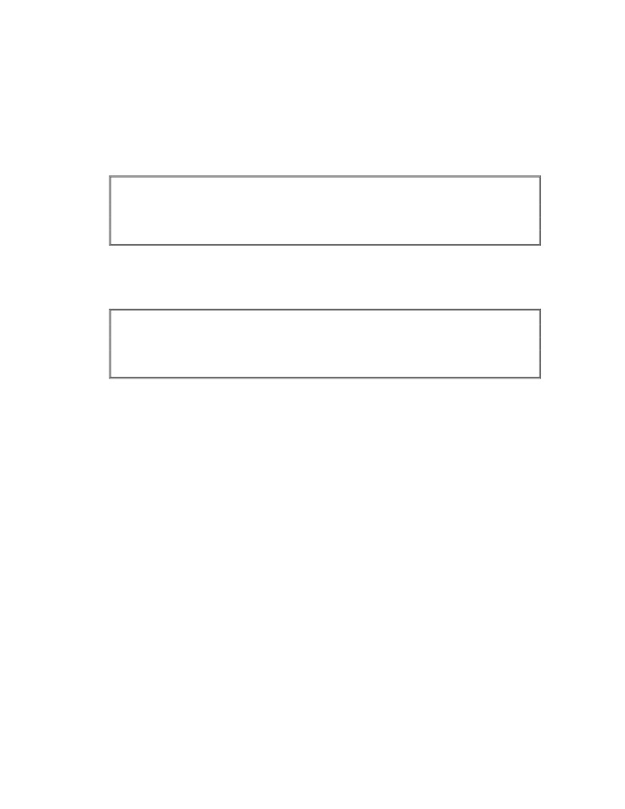
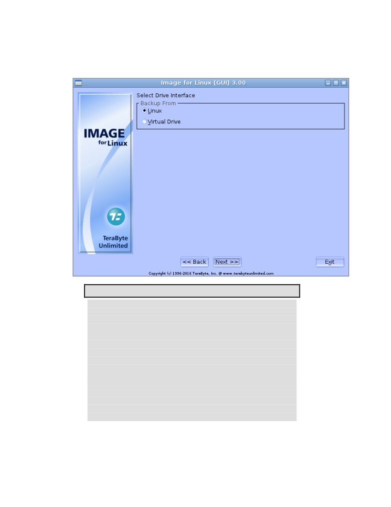
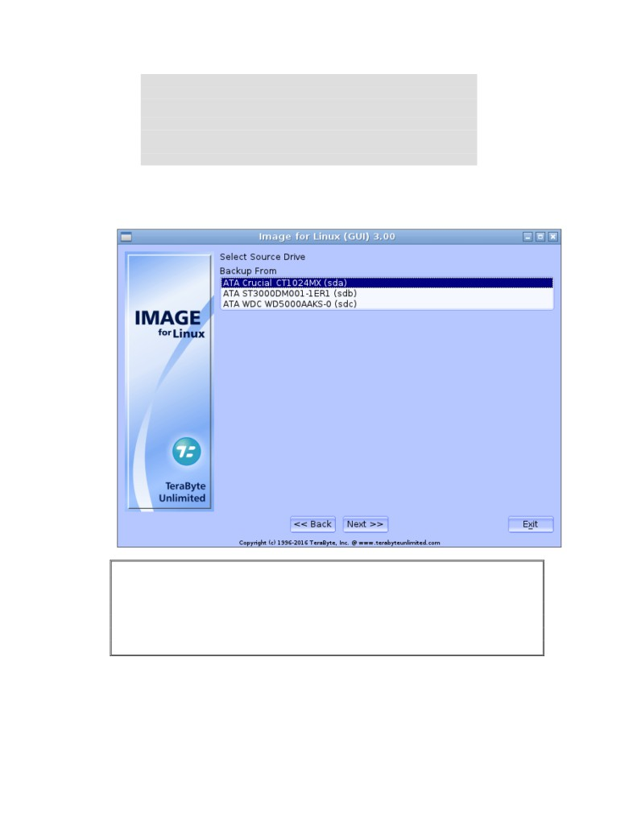
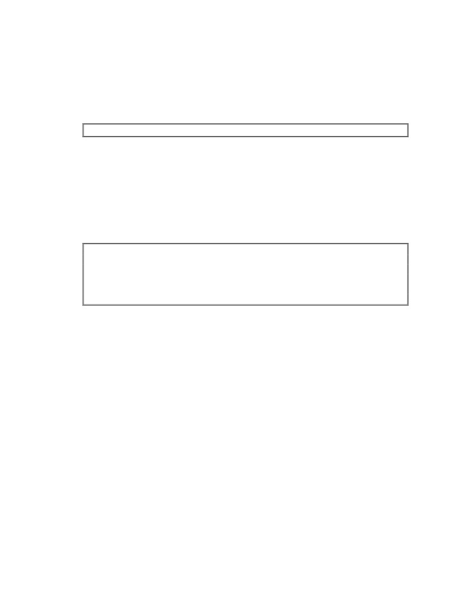
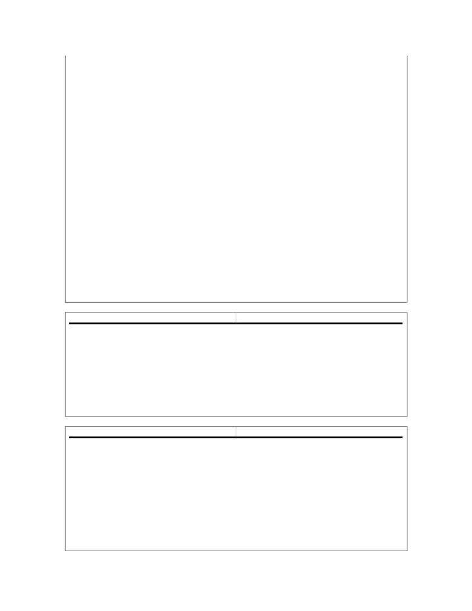

Image for Linux
User Manual
TeraByte Unlimited
Las Vegas, Nevada, USA
Revision: 2020-05-25
Copyright © 1996-2020 by TeraByte, Inc. All Rights Reserved.
Trademarks
BootIt, BING, and TBOS are registered trademarks of TeraByte, Inc. TBScript,
TBIMount, and TBIView are trademarks of TeraByte, Inc.
Microsoft, MS, MS-DOS and Windows are registered trademarks of Microsoft
Corporation.
IBM, PC-DOS and OS/2 are registered trademarks of the International Business
Machines Corporation.
Linux is a registered trademark of Linus Torvalds
All other trademarks and copyrights are the property of their respective owners.
Technical Support Policy
Technical support is provided online. Software and documentation updates are
* The Image for Linux home page, with software and documentation update
information, and support resources, can be found at
www.terabyteunlimited.com/image-for-linux.htm.
* A support knowledge base for all TeraByte Unlimited products, including Image
for Linux, can be found at www.terabyteunlimited.com/kb.
can’t find a suitable resolution via the aforementioned support resources. If we
cannot resolve the issue via email, we may provide telephone support.
Unregistered users will be provided technical support and product information
through email only.
In all cases, TeraByte Unlimited reserves the right to refuse any communication
method that would incur a cost.
Ombudsman Statement
This program is produced by a member of the Association of Software
Professionals (ASP). ASP wants to make sure that the shareware principle works
for you. If you are unable to resolve a shareware-related problem with an ASP
member by contacting the member directly, ASP may be able to help. The ASP
Ombudsman can help you resolve a dispute or problem with an ASP member, but
does not provide technical support for members' products. Please contact the ASP
Ombudsman online at www.asp-software.org/omb.
Image for Linux User Manual
Page 2 of 210
Table of Contents
SYSTEM REQUIREMENTS
6
DATA STORAGE SIZE UNIT CONVENTIONS
7
HOW IMAGE FOR LINUX WORKS
7
WAYS TO USE IMAGE FOR LINUX
9
IMAGE FOR LINUX QUICK START
10
OBTAINING IMAGE FOR LINUX
12
INSTALLING IMAGE FOR LINUX
14
BOOT MEDIA AND UEFI SYSTEMS
14
NAVIGATING THE IMAGE FOR LINUX INTERFACE
28
CREATING BACKUPS WITH IMAGE FOR LINUX
29
CREATING A FULL BACKUP
30
SETTING IMAGE FOR LINUX PROGRAM OPTIONS
44
UNDERSTANDING BACKUP OPTIONS
46
CREATING A DIFFERENTIAL OR INCREMENTAL BACKUP
51
CONSOLIDATING A BACKUP CHAIN
56
UNDERSTANDING CONSOLIDATE BACKUP OPTIONS
60
USING IMAGE FOR LINUX TO RESTORE A BACKUP
63
RESTORING A BACKUP USING IMAGE FOR LINUX
64
GEOMETRY SETTINGS
67
UNDERSTANDING RESTORE OPTIONS FOR AN ENTIRE DRIVE
68
UNDERSTANDING RESTORE OPTIONS FOR AN INDIVIDUAL PARTITION
72
VALIDATING BACKUPS WITH IMAGE FOR LINUX
78
VALIDATING A BACKUP
78
UNDERSTANDING VALIDATION OPTIONS
81
COPYING PARTITIONS OR DRIVES WITH IMAGE FOR LINUX
81
COPYING A PARTITION OR DRIVE
81
UNDERSTANDING COPY OPTIONS
86
USING SIMPLE OPERATIONS MODE
91
CREATING A BACKUP
92
RESTORING A BACKUP
94
VALIDATING A BACKUP
95
COPY A HARD DRIVE
96
PARTITION WORK
97
INSTALLING IMAGE FOR LINUX MANUALLY
98
Image for Linux User Manual
Page 3 of 210
CREATING A DEFAULT CONFIGURATION BOOT DISC FROM WITHIN LINUX
98
RUNNING IMAGE FOR LINUX WITHOUT USING A BOOT DISC
99
CREATING CUSTOMIZED IMAGE FOR LINUX BOOT MEDIA
100
DEPLOYING YOUR IMAGE
103
IMAGE FOR LINUX ADVANCED CONFIGURATION OPTIONS
104
IMAGE FOR LINUX INI FILE
104
IMAGE FOR LINUX ENVIRONMENT VARIABLES
104
IMAGE FOR LINUX FILE PATH VARIABLES
105
RUNNING IMAGE FOR LINUX FROM THE COMMAND LINE
108
IMAGE FOR LINUX BACKUP OPTIONS
131
IMAGE FOR LINUX RESTORE OPTIONS
143
IMAGE FOR LINUX VALIDATE OPTIONS
159
IMAGE FOR LINUX COPY OPTIONS
163
IMAGE FOR LINUX LIST OPTIONS
174
IMAGE FOR LINUX COMBINE OPTIONS
176
IMAGE FOR LINUX HASH OPTIONS
179
TROUBLESHOOTING
180
APPENDIX A: UNDERSTANDING THE TYPES OF BACKUPS
181
FILE-BASED BACKUP
181
SECTOR-BASED BACKUP
181
APPENDIX B: BACKUP STRATEGIES
182
FULL BACKUPS
182
INCREMENTAL BACKUPS
182
DIFFERENTIAL BACKUPS
183
APPENDIX C: INTRODUCTION TO HARD DRIVE STORAGE
185
THE PHYSICAL HARD DRIVE
185
THE LOGICAL HARD DRIVE—HARD DRIVE DATA ORGANIZATION
185
APPENDIX D: LINUX HELP TOPICS
188
MOUNTING AND UNMOUNTING PARTITIONS
188
Listing Mounted Partitions or Devices
188
Mounting a Partition or Device
188
Unmounting a Partition or Device
189
Creating or Removing Mount Points
190
WORKING WITH NETWORK DRIVES
190
APPENDIX E: RESTORING TO A SMALLER DRIVE OR PARTITION
191
PREPARING FOR THE MOVE
193
EXAMPLES
198
GLOSSARY
201
WHAT IS SHAREWARE?
203
Image for Linux User Manual
Page 4 of 210
TERABYTE UNLIMITED (TRIAL-USE) LICENSE AGREEMENT
204
TERABYTE UNLIMITED (FULL-USE) LICENSE AGREEMENT
207
Image for Linux User Manual
Page 5 of 210
System Requirements
* IBM-compatible personal computer (Pentium 4 or newer)
* Memory (RAM)
IFL Version
Recommended RAM
Minimum RAM
Console - Full
192MB or more
168MB
Console - No networking
128MB or more
128MB
GUI - Full
320MB or more
256MB
GUI - No networking
256MB or more
192MB
* Linux based operating system - Linux kernel 2.6 recommended
Note: An installed Linux operating system is not required when using
Image for Linux from the boot media.
* Recommended: External hard drive
Note: You can use a writable CD, DVD, or BD drive, but using an external hard
drive is the recommended method.
Image for Linux relies on the Linux kernel to provide access to mass storage
devices, such as hard drives, optical drives, and network drives. To ensure the best
hardware support from Image for Linux, use the newest kernel available. For the
most part, modern Linux distributions running on a 2.6 series kernel are likely to
support all hardware devices you may need to access. Assuming the kernel version
and configuration supports it, you will be able to create, restore, and validate
images using any of the following:
* IDE, SATA, eSATA, SCSI, USB 1.1/2.0/3.0, and IEEE 1394 hard drives
* ATAPI and SCSI CD/DVD/BD devices
* Mounted network drives (SMB, NFS etc.)
Warning to Windows 8.x and Windows 10 Users
You must disable the Windows Fast startup option or you risk corruption of your
partitions and data when the partitions are used outside of Windows (e.g. you boot
into Image for Linux after shutdown and save an image to a data drive).
To disable using Windows: Press WinKey+X (or right-click the Start button) and
select Power Options from the Quick Link menu. If using Windows 10 1703 or later,
the Power & sleep section of Settings will open and you will need to click the
Additional power settings link to open the Control Panel. In the Control Panel
window, click the Choose what the Power buttons do from the links on the left. Then
click on the Change settings that are currently unavailable link (located in the top
area). Remove the checkmark from the Turn on fast startup (recommended) option
under Shutdown settings and then click the Save changes button.
Image for Linux User Manual
Page 6 of 210
To disable using TBI Notify: Right-click the TBI Notify tray icon and select
Settings from the menu. Click the Disable Fast Startup button.
To disable using BootIt UEFI or BooIt BM: Boot into BootIt, click Partition Work
on the desktop, then select the Windows 8.x/10 partition and click Properties. Click
the Disable Fast Start button.
Data Storage Size Unit Conventions
Since Image for Linux and this document refer to data storage size units, this
section provides clarification on the definitions we use. Storage device
manufacturers typically define gigabytes (GB) in base decimal, where 1 GB = 1,000
MB = 109 bytes = 1,000,000,000 bytes. Microsoft Windows, on the other hand,
defines GB in base binary, where 1 GB = 1,024 MB = 230 bytes = 1,073,741,824
bytes.
Because of the confusion that can result when these different data storage size unit
conventions are each referred to as “gigabytes”, the gibibyte (along with the
kibibyte, mebibyte, etc.) was established in 1998 by the International
Electrotechnical Commission (IEC). A gibibyte (abbreviated GiB) is a base binary
unit, so 1 GiB = 230 bytes = 1,073,741,824 bytes. The IEC retained the term
gigabyte to refer to base decimal, where 1 GB = 109 bytes = 1,000,000,000 bytes.
Image for Linux and this document will follow IEC recommendations, and will thus
use the terms megabyte (MB), gigabyte (GB), etc. to refer to base decimal, and
mebibytes (MiB), gibibytes (GiB), etc. to refer to base binary. So, when you read
about the data storage size convention used by Windows, the units will appear as
mebibytes (MiB) or gibibytes (GiB), even though Windows itself refers to the units
as megabytes (MB) or gigabytes (GB).
How Image for Linux Works
Image for Linux is a backup and restore program that is designed to function in the
Linux operating environment but can back up a hard disk containing any type of
operating system. Image for Linux protects your system by creating a compressed
or uncompressed “snapshot” of all used areas of your FAT, FAT32, NTFS, Ext2/3/4,
ReiserFS, or HSF+ partition or volume. For other file systems, it saves and restores
a compressed or uncompressed snapshot of all sectors in the partition or volume,
both used and unused areas.
The snapshot backup created by Image for Linux is referred to as an image. You
can write the image backup to a set of files that you store in a different partition of
the hard drive you are backing up, on an external hard drive, on a network drive, or
directly to most USB 2, IEEE 1394, ATAPI CD-R/RW, DVD/RW, or BD drives.
Image for Linux is essentially an adaptation of Image for DOS that is designed to
run on the Linux operating system. If you are familiar with Image for DOS, you will
Image for Linux User Manual
Page 7 of 210
find Image for Linux to be quite similar in appearance and function. The primary
differences that you will encounter are:
* The hard drives and CD/DVD/BD devices are listed somewhat differently in the
menus.
* You may need to mount and unmount partitions and network drives to save,
restore, and validate images.
When you create an image using Image for Linux, the file system and files are
backed up exactly as they are stored on the sectors of your hard drive at the time
you make the backup. The backup you create is effectively a snapshot of your hard
drive at the time you create the image. Image for Linux does not examine the files
on your hard drive to make decisions about whether they should be backed up.
Note: See Appendix A: Understanding the Types of Backups on Page 181 for a
description of file-based backups vs. sector-based backups. Appendix B: Backup
Strategies on Page 182 describes the types of backup strategies you can use,
and the strategy you choose plays an important role when you need to restore a
backup. See Appendix D: Linux Help Topics on Page 188 for an overview of
Linux terminology and basic help topics.
When you create a backup using Image for Linux, you back up not only your data
files but also the operating system in its entirety. To understand the full impact of
having an image backup, suppose that you install a program to test it and discover
it is not what you expected. You attempt to uninstall it and it misbehaves. Before
you know it, the fully functional, well-behaved computer you fondly remember from
30 minutes ago is gone, and, in its place, you now have a devil child that won’t even
boot. If you restore an image backup taken before you installed the errant program,
you effectively remove all traces of the program—your computer returns to the state
it was in before you installed the errant program and life goes on as if the errant
program never existed on your hard drive. To understand the technical details of
how Image for Linux creates a sector-based image, see Appendix C: Introduction to
Hard Drive Storage on Page 185.
After backing up with Image for Linux, your computer is protected from crashes,
data loss, hardware problems, and malicious software (i.e. viruses), since you can
restore the snapshot image whenever necessary.
You can view and extract individual files or folders from an image backup by using
the free TBIView or TBIMount add-ons. You can obtain these from
www.terabyteunlimited.com; if you purchased a disk-based version of Image for
Linux, you’ll find TBIView on your installation media. In addition, TBIView is
included on the Image for Linux boot media. TBIMount runs under Windows. There
is also a version of TBIMount you can download that will run from the Image for
Linux boot media.
The images you create using Image for Linux are fully compatible with the other
TeraByte Unlimited Version 3 imaging programs, such as Image for Windows and
Image for DOS. For example, you can create an image using Image for Linux and
restore it using Image for Windows. The reverse is also true: Images created by
Image for Linux User Manual
Page 8 of 210
other TeraByte Unlimited imaging programs are compatible with Image for Linux.
Images created with the TeraByte Unlimited Version 2 imaging programs are also
fully supported.
Ways to Use Image for Linux
You can use Image for Linux in the following ways:
* You can create, restore, and validate images on unmounted EXT 2/3/4,
ReiserFS, XFS, FAT, FAT32, or NTFS partitions
* You can create, restore, and validate images on any mounted file system,
including network drives
* You can create, restore, and validate images on USB, IEEE1394, ATAPI, SATA
and SCSI CD/DVD/BD devices
You also can create bootable CD/DVD restore discs and you can perform imaging
operations interactively using the menus or from the command line.
Image for Linux User Manual
Page 9 of 210
Image for Linux Quick Start
In this section, you’ll find a general overview of the major processes Image for Linux
can perform: backing up, restoring, and validating an existing backup image. Each
of these processes is described in detail, including pictures, later in this manual.
Warning to Windows 8.x/10 Users: You must disable the Windows Fast startup
option or you risk corruption of your partitions and data. For instructions see
“System Requirements” on page 6.
To make a full backup of a drive or partition using Image for Linux, follow these
steps:
Note: For detailed steps on creating a full backup, see the section, “Creating
Backups with Image for Linux” on Page 29.
1.
Create the boot media that contains Image for Linux using either the MakeDisk
utility that comes with Image for Linux or using an alternative method.
* To read about creating the Image for Linux boot media using the MakeDisk
utility, see the section, “Installing Image for Linux” on Page 14.
* To read about other ways to create the Image for Linux boot media, see the
section, “Installing Image for Linux Manually” on Page 98.
2.
Boot the computer that you want to back up using the Image for Linux boot
media.
3.
Using the Image for Linux menus, select a drive or partition to back up.
* For details on using the Image for Linux menus, see the section, “Navigating
the Image for Linux Interface” on Page 28.
4.
Select the target location where you want to store the backup image file(s).
5.
Provide a name for the backup image file.
6.
Set backup options.
* For details on available backup options, see the section, “Understanding
Backup Options” on Page 46.
You can make a differential or incremental backup using the same steps; you
simply select the Changes Only option on the Image for Linux menu instead of the
Full Backup option. For details on backup strategies—that is, deciding whether to
make full backups or use a combination of full backups and differential or
incremental backups—see Appendix B: Backup Strategies on Page 182. For details
on creating a differential or incremental backup, see the section, “Creating a
Differential or Incremental Backup” on Page 51.
You can restore an Image for Linux backup using these steps:
Image for Linux User Manual
Page 10 of 210
Note: For detailed steps to restore a backup, see the section, “Using Image for
Linux to Restore a Backup” on Page 63.
1.
Boot your computer using the Image for Linux boot media.
2.
On the Image for Linux main menu, select Restore.
3.
Select the source location that contains the backup image file that you want to
restore.
4.
Select the backup image file you want to restore.
5.
Select the target location that you want Image for Linux to overwrite with the
information contained in the backup image file.
6.
Set restore options.
* For details on available restore options when you are restoring an entire
drive, see the section, “Understanding Restore Options for an Entire Drive”
on Page 68.
* For details on available restore options when you are restoring an individual
partition, see the section, “Understanding Restore Options for an Individual
Partition” on Page 72.
You can validate a backup as you create it or, if you don’t have time to validate it
when you create it, you validate it later. Follow these steps:
Note: For detailed steps to validate a backup, see the section, “Validating Backups
with Image for Linux” on Page 78.
1.
Boot your computer using the Image for Linux boot media.
2.
On the Image for Linux main menu, select Validate.
3.
Select the source location that contains the backup image file that you want to
validate.
4.
Select the backup image file you want to validate.
5.
Set validation options.
* For details on available validation options, see the section, “Understanding
Validation Options” on Page 81.
Image for Linux User Manual
Page 11 of 210
Obtaining Image for Linux
You can download either the unregistered trial version, or the registered version
of Image for Linux:
* If you have not purchased Image for Linux, click here to download the
unregistered trial version.
* If you have purchased Image for Linux, click here to display a product download
form for obtaining the registered version. You will need to provide your name,
email address, and Image for Linux order number.
The file you download is a compressed file that contains at least these files:
IFL_EN_MANUAL.PDF is a copy of this manual.
LICENSE.TXT is a copy of the Image for Linux license agreement.
MAKEDISK.CFG is the MakeDisk configuration file for Image for Linux.
MAKEDISK.EXE is the MakeDisk utility, which allows you to easily create
bootable media to run Image for Linux.
ORDER.TXT is an order form for Image for Linux (included in the trial version
only).
config.zip is a file that contains extra files and directories you can use to
customize the Image for Linux boot disc.
help directory contains several additional documents covering specific
topics related to the IFL boot disk. In this directory, you’ll find the iflhelp.txt
file, which summarizes Linux commands you can use to perform a variety of
functions, such as listing storage devices and displaying network information.
iflnet.iso is an image that you can use to create a bootable CD/DVD disc
containing Image for Linux using the program’s default configuration.
OS-Lic.zip is a file that contains all of the copyright and licensing information
for the various Linux components.
*
quickstart.txt is a text file that contains overview information for using the
Image for Linux Network Boot Disk, installing the network boot disk to a hard
drive or a USB flash drive, running Image for Linux from a Linux distribution,
and customizing the Image for Linux Network Boot Disk.
Image for Linux User Manual
Page 12 of 210
* readme.txt is a text file that briefly summarizes the information found in this
manual.
* setup is the script used to set up Image for Linux on a Linux distribution. For
the registered version, it also prompts for the product key.
Image for Linux User Manual
Page 13 of 210
Installing Image for Linux
Image for Linux is not “installed” in the usual sense of the word. Instead, you run
Image for Linux by creating the bootable media that contains the Image for Linux
program. Then, you simply boot with that media to run Image for Linux.
Boot Media and UEFI Systems
Computer systems that come from the manufacturer with Windows 8 or later
installed include a new BIOS interface known as the Unified Extensible Firmware
Interface (UEFI). This new BIOS interface boots media differently than a traditional
BIOS. Microsoft also requires these systems to use a feature of UEFI called Secure
Boot. When Secure Boot is enabled, the system will only boot items that have a
digital signature that is included in the system firmware. The manufacturers include
a digital certificate, provided by Microsoft, to boot Windows on their systems.
Secure boot can be disabled (on non-ARM systems) to allow you to boot other
operating systems and environments. Boot media must be specifically created for
UEFI to allow UEFI to boot from it. However, most systems also include the ability
to boot traditional boot media though a method or mode typically called Legacy or
BIOS.
Using TeraByte Boot Media on UEFI Systems
When creating the boot media for a UEFI system it’s important to understand which
media will boot properly on the UEFI system. System settings may require changing
to boot Image for Linux or Image for DOS depending on the implementation of UEFI
on the system.
booting via CD or USB flash drive on UEFI systems. The BIOS can be in
either UEFI mode or Legacy mode. Secure Boot is supported for TBWinRE
created on Windows 8.x/10 systems and for TBWinPE created using the
Windows 8.x/10 ADK.
TBWinRE is automatically installed with Image for Windows on Windows
7/8.x/10. You must run TBWinPE/RE Builder (or the TBWinRE script) to
create your boot media.
• Image for Linux (IFL) supports booting via CD or USB flash drive on UEFI
systems (Secure Boot is supported).
• Image for DOS (IFD) will not boot on UEFI systems configured in UEFI
mode. To boot on these systems Secure Boot must be disabled and you
must enable or use Legacy mode.
Creating the Image for Linux Boot Media
If you use Windows, you can create a bootable Image for Linux CD, USB flash
drive, or diskette using the MakeDisk utility, which is included with Image for Linux.
Image for Linux User Manual
Page 14 of 210
The default boot media you create using the MakeDisk utility uses the following
default configuration parameters:
* Wired network using eth0 interface (wireless networking is not supported)
* DHCP server must be available to obtain IP address
* Console login is not required on boot
* The root password is ifl (used for SSH login)
* The ISCSI initiator daemon is started
* The time zone is UTC
* QWERTY keyboard layout
80x25 as default video mode (console version), 1024x768 or better default
resolution (GUI version)
If you use an operating system platform that doesn’t support MakeDisk or if you
wish to customize the contents of the bootable media that you create, see the
section, “Installing Image for Linux Manually” on Page 98 to create the bootable
media that contains Image for Linux.
Follow these steps to use the MakeDisk utility under Windows to create the
bootable Image for Linux media; the MakeDisk utility is included in the Image for
Linux ZIP archive file:
1.
Extract the contents of the Image for Linux ZIP archive file to a folder of your
choice.
Note: If you are using a version of Windows that has a built-in compressed folders
feature (e.g. Windows Me, XP, or later), you can double-click the ZIP file and then
open the File menu and choose Extract All… in Windows Explorer to extract the
contents.
Image for Linux User Manual
Page 15 of 210
2.
Double-click MAKEDISK.EXE. The MakeDisk welcome screen appears. If you
would like to save the selections you make as you step through the wizard,
check the “Save selections for next time” box. (Selections will only be saved if
boot media is created.)
3.
Click Next on the MakeDisk welcome screen. The “Select the product to build”
screen appears. Image for Linux can operate in simple or traditional mode.
Select the operating mode you wish to use (the mode can be changed at any
time in program settings) and click Next.
Selecting “Simple” will enable Simple Operations mode. This allows Image for
Linux to automatically handle most options for you. Backup, Restore, Validate,
and Copy operations are available in this mode. Refer to Using Simple
Operations Mode on page 91 for details.
Note: If you have purchased BootIt UEFI or BootIt Bare Metal and plan to use
Partition Work in Image for Linux to manage your partitions, you will be able to
enter your BootIt license name and key regardless of your selection here.
Image for Linux User Manual
Page 16 of 210
4.
The “License Agreement” screen appears.
5.
Read the Image for Linux license agreement, and if you accept it, select the “I
accept the agreement” button and click Next. If you selected “Simple” or
“Traditional (Default Settings)” in Step 3, skip to Step 9.
Image for Linux User Manual
Page 17 of 210
Note: If the file ifl.ini exists in the MakeDisk folder a screen will be shown
with an option to include it in the build. This allows you to include an already
configured INI file.
6.
The “Global Geometry Options” screen will appear.
Check boxes to enable the options:
* Disable Global Geometry - Check this box to disable the global geometry
settings and revert to using program defaults or drive specific overrides
equivalent to versions prior to 2.52.
* Disable Align MBR for BIOS Auto Mode - The Align MBR for BIOS Auto
Mode option is enabled by default to prevent problems with unaligned
partitions on systems with their BIOS using Auto Mode. Many newer
systems use auto mode by default, and some even don't have an option to
turn it off. Check the box if you want to disable this option.
* Align Partitions on 1MiB Boundaries - This option provides a convenient
way to enable 1MiB partition alignment for all drives (drives with 512 byte
sectors will be aligned on 2048 sectors; drives with 4096 byte sectors will be
aligned on 256 sectors). This is popular with users of SSD type drives. It is
the equivalent to enabling the individual overrides Align on 1MiB
Boundaries, Align MBR Ending HS, Align MBR HS when Truncated, and
disabling Align on End.
* Assume Same Target System - Enable this option to prevent problems
where users restore an image from another system to a drive that will be put
back in the other system. For example, the hard drive from PC-A is backed
Image for Linux User Manual
Page 18 of 210
up; PC-B is used to restore to a new hard; that new drive is placed back in
PC-A. Without this option enabled, Image for Linux would setup the partition
to properly boot on the hard drive for PC-B which can sometimes (not
always) be a problem when the hard drive is going back to PC-A. This
option solves that and is equivalent to the individual Use MBR Geometry
override.
* Use Source Host Geometry - This option is the global equivalent to the
individual Use Original Geometry override.
* Disable Validate Geometry Before Use - The Validate Geometry Before
Use option is enabled by default and used to ensure that the geometry from
the MBR on the original system is aligned to known standards before
accepting it for use. Check this box to disable this option.
Note: The above options are also available in Image for Linux by clicking the
Settings button (IFL GUI) or selecting Global Settings (IFL CUI).
Click Next after setting the desired options.
7.
The “Miscellaneous Global Options” screen appears.
Check boxes to enable the options:
* Simple Operations - Enable this option to have Image for Linux
automatically handle most options for you. You simply choose which
physical drive you want to back up and, if needed, which drive you want to
save to - the target storage area is automatically maintained and files are
deleted as needed when it runs out of free space. Backup, Restore,
Validate, and Copy are available in Simple Operations mode.
Image for Linux User Manual
Page 19 of 210
Use Windows 9x MBR - Windows Vista and later tied the kernel loader to
the MBR code such that using previous MBR code may not allow Windows
Vista or later to boot on certain machines. Leave this option unselected (the
default) to have Image for Linux use the code base compatible with
Windows Vista or later. The new MBR code will continue to boot older
OSes with the exception of some (rare) configurations using Win9x on
FAT32.
Disable Automatic Scaling Restrictions - Select to have Image for Linux
scale small partitions when restoring a full drive image. By default, small
partitions will not be scaled and will be restored at their original sizes.
Disable Automatic Boot Partition Updates - Select to prevent Image for
Linux from automatically updating the boot partition when restoring a full
drive image.
Disable Automatic Restore Drive Search - Select to prevent Image for
Linux from searching for the destination drive using the disk signature or
GUID when performing an automatic restore (virtual drives will not be
searched). If a match isn’t found or if this option is enabled, the drive
number of the backed up drive will be used.
Retain Failed Backups - If you enable this option and a backup operation
fails, Image for Linux won’t delete the files from the failed backup.
Completion Alarm - Select to enable an audible alarm upon completion of
an operation, errors, or when user interaction is required (insert media, etc.).
Disable Resize with Caching - Select to prevent Image for Linux from
using a cache to reduce the time required to resize a partition. By default,
the Resize with Caching option is enabled.
Note: The above options are also available in Image for Linux by clicking the
Settings button (IFL GUI) or selecting Global Settings (IFL CUI).
8.
Click Next, and the “Additional IFL.INI Options” screen appears. Most of the
options you should set to use Image for Linux are set for you by default, but
you can use this screen to set additional options. For example, you might want
to use the TimeZone variable to identify your time zone for Image for Linux. Or
you might want the Scale to Fit option enabled by default to expand partitions
when restoring. Note that for non-global options (those not in the [Options]
section) you will need to specify the section (e.g. [Restore_Defaults]). See
image below for examples. For a complete list of available environment
variables, see Image for Linux Advanced Configuration Options on page 104.
Click Next to proceed.
Image for Linux User Manual
Page 20 of 210
9.
The “License/Product Key” screen appears. If you own a licensed copy of
Image for Linux, supply your licensed name and product key and then click
Next (you will not be prompted to enter license information when creating boot
media for the trial version). If you selected “Simple” or “Traditional (Default
Settings)” in Step 3, skip to Step 12.
10. The “Boot Option - Mounting” screen appears.
Image for Linux User Manual
Page 21 of 210
Select one of the following options and then click Next:
* Normal Boot - Boot Drive is Not Mounted - The boot drive (e.g. USB
flash drive) is not automatically mounted to the Linux file system. It can be
mounted manually, if required.
* Leave Boot Drive Mounted as /tbu/boot - The boot drive will be mounted
to the Linux file system at /tbu/boot.
11. The “Boot Option - Scripting” screen appears. These options control how user
scripts are handled upon booting. To include user scripts, create a folder
named scripts in the folder with the Image for Linux MakeDisk files and
place the scripts files into it. Supported script types include .tbs, .run, and bash
files. If using the scriptslist.txt file place it into the scripts folder also
and list the desired script files in it one file per line.
Image for Linux User Manual
Page 22 of 210
Select one of the following options and then click Next:
* Normal Boot - No Scripts are Run Automatically - The media will boot to
the Linux desktop and run Image for Linux. User scripts will be accessible
from the desktop menu.
* Select at Boot - Show Menu of Scripts Available - After booting, a menu
will be displayed listing the user scripts.
* Run List - Run Scripts Listed in scriptslist.txt - All scripts listed in the
scriptslist.txt file will be run in the order listed in the file.
* Run All - Run All Scripts in the scripts folder - All scripts in the scripts
folder will be run. The script filenames are sorted (numeric, uppercase,
lowercase) and then run in that order. If the run order is critical it’s
recommended to use the Run List option instead and specify the order.
12. The “BootIt License” screen appears. If you have purchased a BootIt UEFI or
BootIt BM license, enter the registration information you were provided within
the text boxes shown on this screen. This will allow you to use the included
TBOSDT and Partition Work program to manage your partitions.
If you selected “Traditional (Custom Settings)” in Step 3 you can also enter any
additional bootit.ini/bootitbm.ini file options you require. If unsure, just leave the
fields blank (most of the options you should set to use BootIt are set for you by
default). For example, you might want to use the TimeZone variable to identify
your time zone (as shown below).
Click Next to continue.
Image for Linux User Manual
Page 23 of 210
13. The “Select Target” screen appears. Select the target that MakeDisk should
use to create the bootable Image for Linux media.
When creating a CD/DVD, you can select a specific CD Speed, but leaving the
option set to Optimal allows the MakeDisk utility to choose the speed that will
work best with your drive. Select a specific speed lower than the speed of your
CD/DVD drive if you encounter problems creating the boot CD.
Image for Linux User Manual
Page 24 of 210

* If you choose the “ISO File” option, also supply an ISO file name in the box
provided. Note: If you boot the ISO file directly (some boot managers
support this), any custom settings selected will not be applied since IFL will
not look inside the ISO file.
* If you choose the “CD/DVD” option, be sure to insert a writable CD or DVD
disc before proceeding. The entire contents of this disc will be overwritten.
MakeDisk can automatically overwrite CD-RW, and DVD+RW media. However, if
you wish to use DVD-RW media, it must be either brand new or fully blanked before
being processed by MakeDisk. To fully blank the DVD-RW media, use your burning
software’s “full erase” function. (The “quick erase” function will not work for this
purpose.)
* If you select a USB flash drive (UFD), you also must select the USB Layout
to use - select whichever works on your computer; your computer’s BIOS
determines which option works.
By default, for data safety reasons, MakeDisk does not support UFD devices that
are larger than 64 GB in size. For that reason, devices larger than 64 GB will not
appear in MakeDisk. You can allow MakeDisk to support larger devices by clicking
the USB+ button or by specifying the /nousblimit parameter when it's run (e.g.
makedisk /nousblimit).
No Partition - FAT/FAT32 Volume - The entire UFD is configured as
one big unpartitioned device. If you were to view a 4 GB UFD created
using this option in Windows, you’d see free space beyond the amount
used by MakeDisk up to the size of the drive. This free space is
available to be used normally. If the UFD is 4GB or smaller, it's
formatted as FAT. Otherwise, it's formatted as FAT32.
Partition - MBR FAT/FAT32 Partition - The entire UFD is used as a
single bootable partition. The computer's BIOS will usually detect this
type of UFD as a hard drive. Any unused space on the UFD is available
to be used normally. If the UFD is 4GB or smaller, it's formatted as FAT.
Otherwise, it's formatted as FAT32.
Partition - MBR FAT/FAT32 Partition (Int13h Extensions) - This is
the same as the Partition - MBR FAT/FAT32 Partition mode except that
the INT 13 Extension is used (this is required for some computers to
boot a UFD).
Partition - MBR UEFI System Partition - The UFD is configured as an
MBR drive that contains an EFI System Partition. This type of drive may
not boot on Legacy BIOS (non-UEFI) systems. Additionally, the partition
may not be accessible normally via a drive letter.
Partition - GPT UEFI System Partition - The UFD is configured as a
GPT drive that contains an EFI System Partition. This type of drive will
Image for Linux User Manual
Page 25 of 210
only boot on UEFI systems in UEFI mode. Additionally, the partition may
not be accessible normally via a drive letter.
Multi-Partition - MBR FAT/FAT32 (+exFAT) - Will create a small FAT
or FAT32 partition for IFL and create an exFAT partition in the remaining
space. If this layout already exists, MakeDisk can update the IFL
partition and leave the exFAT partition unchanged.
Multi-Partition - MBR FAT/FAT32 (Int13h Extensions) (+exFAT) -
This is the same as the Multi-Partition - MBR FAT/FAT32 (+exFAT)
mode except the INT 13 Extension is used (this is required for some
computers to boot a UFD).
Multi-Partition MBR UEFI System Partition (+exFAT) - The UFD is
configured as an MBR drive that contains a small EFI System Partition
that contains IFL. An exFAT partition is created in the remaining space.
This type of drive may not boot on Legacy BIOS (non-UEFI) systems.
Additionally, the partition may not be accessible normally via a drive
letter. If this layout already exists, MakeDisk can update the IFL partition
and leave the exFAT partition unchanged.
Multi-Partition GPT UEFI System Partition (+exFAT) - The UFD is
configured as a GPT drive that contains a small EFI System Partition
that contains IFL. An exFAT partition is created in the remaining space.
This type of drive will only boot on UEFI systems in UEFI mode.
Additionally, the partition may not be accessible normally via a drive
letter. If this layout already exists, MakeDisk can update the IFL partition
and leave the exFAT partition unchanged.
The Geometry Calculation Method options control how the drive
geometry is calculated for the USB/SD device. It is recommended to try
the Default option first. If the device fails to boot properly (e.g. black
screen, boot failure, device not found, etc.), the other options can be
tried. Make note of which option works properly for future use.
Note: More information on using UFD boot media can be found in this
14.
Click Finish, and respond to subsequent prompts as necessary. MakeDisk will
then create the boot media or ISO image. When it is done, the Success screen
appears, as shown below.
Image for Linux User Manual
Page 26 of 210
15. Click Close on the MakeDisk Success screen.
* If you selected the “CD/DVD” or “USB/SD” option in Step 13, you can now
use that media to boot and run Image for Linux.
* If you selected the “ISO File” option in Step 13, you will have to use other
CD/DVD authoring software to create a bootable disc from the ISO file.
(TeraByte’s BurnCDCC utility can be used for this.)
Tip: Be sure to test your boot media to make sure that it works and you can see
backup images you made previously.
Image for Linux User Manual
Page 27 of 210
Navigating the Image for Linux Interface
To select menu items in Image for Linux, use the arrow keys to select the desired
option and then press Enter to display the next screen. Some screens, such as the
Backup Options screen, contain several sections of options; some of which can be
toggled on or off. On these screens, use the Tab key to move from section to
section. For options that you can toggle on and off, highlight the option using the
arrow keys and then use the space bar to toggle the option on or off, as desired.
Image for Linux also makes wide use of accelerator keys. An accelerator key is an
individual letter that you can press (or press in combination with the Alt key) to
select an option or a menu item. In Image for Linux, accelerator keys appear in
yellow or are underlined.
How you use an accelerator key depends on the current location of the cursor. If it
is in the same section of the screen as the desired accelerator key, simply press the
applicable accelerator letter. If the cursor is in any other section, press and hold the
Alt key, and then press the applicable accelerator letter. For example, when the
Backup Options screen first appears in the console version of Image for Linux, the
cursor is in the Options section. If you want to enter a description, press and hold
the Alt key and then press the d key. Pressing just the d key would not work in this
case, because of the initial position of the cursor. However, when you press Alt+d,
the cursor jumps to and selects the text box in the Description section.
You can use the Esc key or click Back to move back to the previous menu. If you
use Esc/Back in this manner, Image for Linux remembers the selections you have
already made throughout the Image for Linux session, in the event that you return
to the same screen.
When using the GUI version of Image for Linux you can also use the mouse to
select controls, toggle options, click buttons, etc. Common programs are available
in the toolbar at the top of the screen. Additional options and programs are
accessible via the main menu, which can be opened any time by pressing Ctrl-
Space or the Windows key.
Using special characters when entering Image for Linux license: When using
Image for Linux GUI you can specify non-keyboard characters when entering the
license name by using the following method: Press Ctrl-Shift-U, enter the hex code
for the character, press Space. For example, to enter the Ö character (hex D6),
press Ctrl-Shift-U, type in ‘D6’ (no quotes), press Space. Case doesn’t matter when
entering the hex code (‘D6’ is same as ‘d6’). This method can also be used when
entering the BootIt license for Partition Work.
Image for Linux User Manual
Page 28 of 210
Creating Backups with Image for Linux
Create the Image for Linux boot media using any of the techniques described in the
section “Installing Image for Linux” or “Installing Image for Linux Manually.” Insert
the boot media into the appropriate drive or USB port, and boot your computer.
To boot from a CD/DVD or UFD, you may need to change the order in which your
computer selects boot devices. As your computer begins to boot, you should see a
message—before you ever get to Linux—that tells you what key to press to enter
Setup—typically the Delete key, F2, or F12. Once in the BIOS, you need to follow
the instructions provided in your BIOS to reorder the boot sequence to permit your
CD/DVD drive or UFD to be examined before your hard drive. If your system starts
by offering you the option to select a boot menu, you can use the boot menu to
identify the device you want to use to boot.
When you create a backup, you can create either a full backup, a differential
backup, or an incremental backup. A full backup is exactly what it sounds like—
Image for Linux backs up your entire hard disk. Differential and incremental
backups works in conjunction with a full backup—you create a full backup the first
time and then create differential or incremental backups, which contain only
changes, for subsequent backups. A differential backup will, initially, be smaller
than a full backup but, as you make changes on your hard drive, the size of the
differential backup will grow over time. And, because Image for Linux is a sector-
based backup, the smaller file size may not be as small as you expect. An
incremental backup will contain only the changes since the last full or incremental
backup.
Before you make the decision concerning the type of backup you want to create,
read Appendix B: Backup Strategies for a detailed explanation of full, differential,
and incremental backups.
Things to Consider Before Backing Up
There are very few rules to follow when formulating a backup plan.
Please consider the following ideas to help you create a backup
that will help you easily recover from a disaster. For more
information on backup strategies, see Appendix B: Backup
Strategies on Page 182.
Consider the destination for your backup. For example, if you
will be backing up around 30 GB of data, you probably will not
want to store the backup on a set of CD-R/RW discs, since the
backup will likely require 20 discs or more (based on an expected
compression ratio of 40-60%). Better options in this case would
be:
Back up directly to a set of DVD or BD discs.
*
Backup to an alternate hard drive partition (and perhaps
use the free add-on utility BINGBURN later to burn the
backup to a set of DVD/BD discs).
Image for Linux User Manual
Page 29 of 210
Backup to an external hard drive (recommended).
Plan your backup with a restore strategy in mind. You can:
Save the backup directly to a set of bootable disc media
(CD/DVD/BD), as explained in this manual. To restore,
simply boot with the restore disc, and use Image for Linux
to perform the restore.
Save the backup to an alternate hard drive partition. To
restore, run Image for Linux from a bootable USB flash
drive or a CD/DVD disc.
Save the backup to an external hard drive (recommended).
To restore, run Image for Linux from a bootable USB flash
drive or a CD/DVD disc.
Strike your own balance between convenience and resiliency.
Consider these simple ideas:
Save your backups directly to an alternate hard drive
partition and use the free utility BINGBURN to burn a
second copy of the backup to a set of CD/DVD/BD discs.
Then, if you need to restore, you can quickly and
conveniently use the backup stored on the hard drive. But,
if things really go wrong and the primary copy of the
backup is not available, you can fall back on the copy of
the backup that you saved on CD/DVD/BD discs.
Don’t get rid of an existing set of backup discs when you
create a new set. Instead, keep two or more sets of backup
discs. That way, you can fall back to an older backup if
something should go wrong with the newest backup.
If you are using multiple sets of backup CD/DVD/BD discs,
keep the newest set offsite to guard against physical
damage.
Use multiple external hard drives and rotate between them.
Keep at least one drive offsite.
Creating a Full Backup
You proceed through a series of menus to create a full backup. Insert your Image
for Linux boot media into the appropriate drive or USB port and boot your computer.
Then, follow these steps:
1.
After a series of on-screen lines of code, the Welcome to Image for Linux
screen appears (console version) or the desktop and Image for Linux (GUI)
appear (GUI version).
Image for Linux User Manual
Page 30 of 210
Image for Linux (GUI)
Image for Linux (console version)
Image for Linux User Manual
Page 31 of 210
The Image for Linux (console version) welcome screen explains how to
manually mount or unmount partitions or network drives while running Image
for Linux. From this screen, you can run Image for Linux, TBIView, the OSD
Tool script, the CopyP2V script, TeraByte Explorer, mount network shares
(Samba and Windows), exit to the Command Prompt, reboot or power down
the computer, and access the Image for Linux boot media help file. The
Auxiliary Menu allows you to select an alternate keyboard map, change the
network configuration, change the restore disc configuration, run TBOSDT,
mount a drive or partition, and run Midnight Commander.
When using Image for Linux (GUI), you can access programs using the toolbar
or by right-clicking the desktop for the main menu.
The Configure Restore Disc (or Restore Disc Configuration) command applies
to backups made to disc media (CD/DVD/BD). When you store a backup on
discs, Image for Linux makes the first disc of the set bootable so that, when
you insert the disc and boot your machine, Image for Linux runs and restores
the backup using a default set of restore options. You can override the default
restore options and use a custom set of restore options if you select the
Configure Restore Disc command. Note that the custom set of restore options
is temporary; if you want to make the restore options permanent, you must
create a custom boot disc as described in the section, “Creating Customized
Image for Linux Boot Media.”
Image for Linux User Manual
Page 32 of 210
2.
If using the console version, press Enter to display the Image for Linux Main
Menu/Select Operation screen. Image for Linux is launched automatically in
the GUI version.
Console version only: Use the Detect Device Changes command to have Image for
Linux look for devices you attach to your computer after starting the program. Wait
about 10 seconds before you select this command to give the Linux OS time to
recognize the device.
Image for Linux User Manual
Page 33 of 210
3.
Select Backup to display the Backup/Select screen.
Image for Linux User Manual
Page 34 of 210

4.
Select Full Backup to display the Backup From/Select Drive Interface
screen. Select the interface used by the drive or the drive containing the
partition you want to back up. These steps assume you select a Linux drive.
Virtual Drives and Image for Linux
You can use Image for Linux to back up to or restore from a single
file virtual drive. In most cases, you’re likely to use a virtual drive
with Image for Linux if you want to back up a physical drive and
then restore it to the virtual drive of a virtual machine you’ve
created using VirtualPC, VMWare, or Hyper-V. You can add a
virtual drive while working in Image for Linux. Press F2 (console
version) or click the Add Virtual Drive button (GUI version) to
display the window where you can navigate to an existing virtual
drive. If you type the name of a virtual drive that doesn’t exist,
Image for Linux displays a message asking if you want to create a
file for the virtual drive. Select Yes, and Image for Linux displays a
dialog box like the one below, where you can define the type and
size of the virtual drive. You can specify the size in bytes by
including no letters. Or, you can specify the size in Mebibytes by
supplying an M or in Gibibytes by supplying a G.
Image for Linux User Manual
Page 35 of 210
Note that a new virtual drive must be formatted and partitioned
before you can use it. However, you can restore an image or copy
a partition into a new virtual drive without needing to partition or
format it first.
You can create any of the following types of virtual drives:
•
RAW - Fixed Size - Creates a plain (raw) file as the virtual
drive. Its size is fixed and allocated with zeros on creation.2
•
VHD - Dynamic Expanding - Creates a VirtualPC Dynamic
Expanding virtual hard drive.1
•
VHD - Fixed Size - Creates a VirtualPC Fixed Size virtual hard
drive.2
•
VHDX - Dynamic Expanding - Creates a Hyper-V Dynamic
Expanding virtual hard drive.1,3
•
VHDX - Fixed Size - Creates a Hyper-V Fixed Size virtual hard
drive.2,3
•
VHDX - Dynamic 4KiB Sector Size - Creates a Hyper-V
Dynamic Expanding virtual hard drive with a sector size of 4KiB
(4096 bytes).1,3
•
VHDX - Fixed Size 4KiB Sector Size - Creates a Hyper-V
Fixed Size virtual hard drive with a sector size of 4KiB (4096
bytes).2,3
•
VMDK - Monolithic Sparse (IDE) - Creates a VMWare Sparse
IDE virtual hard drive.1
•
VMDK - Monolithic Sparse (SCSI) - Creates a VMWare
Sparse SCSI virtual hard drive.1
1 Dynamic expanding virtual drives append data to the file as you add
data to the virtual drive. The file size starts small and grows as needed.
Image for Linux User Manual
Page 36 of 210

2 Fixed size virtual drives allocate data for the file when it’s created and
the file size does not change. The file size will be the same as the
virtual drive size (e.g. a 40GiB virtual drive will use 40GiB of space).
3 For Windows caching reasons, it is highly recommended to create
partitions within a VHDX file that are aligned on at least a 1MiB
boundary. That is either 2048 sectors for 512 byte sized sectors or 256
sectors for 4096 byte sized sectors.
5.
On the Backup From/Select Source Drive, Image for Linux displays all
available hard drives. Select the drive or the drive containing the partition you
want to back up.
Note: Hard drives connected to an IDE controller will appear as either /dev/hdn or
/dev/sdn. SATA, SCSI, USB, or IEEE 1394 (FireWire) drives appear as /dev/sdn
under the general category of SCSI disks. The order in which the drives appear
depends on the way they are connected to the system. If you don’t see all of drives
that you expect to see, try pressing the ESC key until you return to the main menu,
wait a few seconds, choose Detect Device Changes and again try selecting Linux
Drive on the Backup from/Select Drive Interface screen.
Image for Linux User Manual
Page 37 of 210
6.
On the Backup From/Select Item to Backup from HDn screen that appears,
select the partition(s) or drive that you wish to back up. If you choose to back
up a single partition, skip to Step 8.
Selecting a Drive or a Partition
To back up an entire drive, check the box beside Drive.
Remember, you can back up only one drive at a time. If you want
to back up a partition, check the box beside that partition. When
restoring an image of a partition, you might need to use the
Update BOOT.INI, Set Active, and Write Standard MBR Code (or
Restore First Track) options described in the section, “Image for
Linux Restore Options.”
If you individually select all partitions on a drive, Image for Linux
handles the backup as individual partition backups, not as a full
drive backup. You can restore an entire drive in one restore
operation using individual partitions, but you can’t set sizing or
rescaling options or restore to a different location (sector /LBA).
When a partition is highlighted, the following options are available:
Delete - Press the Del key or click Delete to delete the selected partition. You will
be prompted to confirm the deletion.
Image for Linux User Manual
Page 38 of 210
Details/Information - Press F1 or click Information to view the details of the
partition (used space, free space, size needed to restore, etc.).
Compact - Press F3 or click Compact to compact the partition’s file system.
FAT/FAT32 and NTFS file systems are supported. This option allows you to
reduce the size required for a restore. You will be prompted to confirm the
compaction and then asked for the compaction value (size in MiB).
For example, if you have a 250GB partition that contains 50GB of data and
requires 150GB of space to restore and you need to restore it to a 100GB
partition, you can compact the file system to under 100GB before imaging it
and then restore it to the 100GB partition.
7.
If, in Step 6, you chose to back up an entire drive or multiple partitions, the
Backup/Select screen appears. Choose one of the following options:
* Single File Set - Select this option to create a backup that is comprised of
a single image, regardless of how many individual partitions you are backing
up. The first file created for the image set will be named <name>.TBI,
where <name> is a character string you supply. If Image for Linux creates
additional files, Image for Linux will name them <name>.1, <name>.2,
<name>.3, and so on. The number of files Image for Linux will create
depends on the overall size of the backup and the File Size setting you
choose when you set the options for the backup in a later step.
Image for Linux User Manual
Page 39 of 210
* Multiple File Set - Select this option to create a backup that is comprised of
one image for every individual partition that Image for Linux backs up.
Image for Linux names the first file created for the first image set
<name>_0.TBI, where <name> is a character string you supply. Image for
Linux adds _0 to identify the image file set. If Image for Linux creates
additional files for the same image set, they will be named <name>_0.1,
<name>_0.2, <name>_0.3, and so on. Image for Linux names the files of
the second image set (i.e. the second partition included in the backup)
<name>_1.TBI, <name>_1.1, <name>_1.2, <name>_1.3, and so on.
Image for Linux will name subsequent image sets accordingly with _2, _3,
and so on, appended to the file name.
* If you choose this option, each file Image for Linux creates represents
only a single partition and you won’t be able to completely restore a
drive with one menu option but will have to restore each partition
separately.
* The number of files Image for Linux will create for each image set
depends on the size of the corresponding partition and the File Size
setting you choose in a later step.
8.
On the Backup To/Select File Access Method screen that appears, select
one of the following options, which refer to the location where Image for Linux
will be saving the backup:
Image for Linux User Manual
Page 40 of 210

* File (Direct) - This option allows you to directly save the image file(s) to a
folder on a hard drive, bypassing the Linux OS file services. Supported
partitions can be accessed, including unmounted partitions and those in the
EMBR not loaded into the MBR. In most cases, when using physical drives
attached to the system, it’s easier to use File (Direct), especially when using
the Image for Linux boot media.
Note: Do not save your image to the same partition you are backing up.
* File (OS) - Choose this option to use the Linux operating system file
services to save the image files. Use this option to browse mounted
partitions or network shares just as if you were browsing in Linux outside of
Image for Linux. You won’t be able to browse a partition or share that’s not
mounted, nor will you be able to access partitions not loaded into the MBR.
* File (CD/DVD) - This option allows you to save the backup file(s) to a CD,
DVD, or BD disc. Image for Linux will automatically make the first disc
bootable.
Note: Image for Linux can automatically overwrite CD-RW, DVD+RW, and BD-RE
media. If you wish to use DVD-RW media, Image for Linux can format it, but the
process takes 1 hour per disc, so you may prefer to use fully formatted, fully
blanked, or brand new discs. To fully blank the DVD-RW media, use your burning
software’s “full erase” function. (The “quick erase” function will not work for this
purpose.)
9.
The screen that appears next depends on the option you chose in Step 8.
* If you chose File (OS), a screen appears where you can type a file name;
see Step 10 for details.
* If you chose File (Direct), the Backup To/Select Drive Interface screen
appears; this screen closely resembles the screen shown earlier in Step 4.
Select the interface of the drive on which you want to store the backup. The
Backup To/Select File Drive screen appears; this screen closely
resembles the screen shown earlier in Step 5. Select the drive on which you
want to store the backup, and Image for Linux displays the Backup
To/Select File Location on HDn screen, where you can select a partition
on the hard drive (if it contains partitions); otherwise, press Enter to select
the drive.
* If you chose File (CD/DVD), the Backup To/Select Drive Interface screen
appears. Select either ATAPI/SCSI or SG and then select the CD/DVD/BD
drive you want to use when making the backup. Typically, all of your optical
devices will appear when you select one of the options, and, if you select
the other options, a “No usable CD/DVD drive found!” message will appear.
The option that works depends on your kernel version and configuration. If
your system uses a 2.4 series kernel, the devices will appear on the SG
menu; if your system uses a 2.6 series kernel, the devices will appear on the
ATAPI/SCSI menu.
Image for Linux User Manual
Page 41 of 210
10. Image for Linux displays the screen shown in the figure, which suggests a file
name that includes identifying information for the image file you are about to
create. You can change the file name; you don’t need to include the file name
extension—just the path and file name itself; Image for Linux will automatically
add the .tbi extension.
Note: In the default name shown in the screen below, “l” stands for Linux, “0”
represents the drive being backed up, and “$~YYYY$-$~MM$-$~DD$-$~HHMM$”
represent the date (in 4-digit year, 2-digit month, and 2-digit day format) and time
(in 2-digit hour and minute format) the backup started. If you opt to back up a
partition instead of an entire drive, the partition ID follows the drive number.
Image for Linux User Manual
Page 42 of 210
11. On the Backup Options screen that appears, select the options you want to
use. See the section, “Understanding Backup Options” on Page 46 for an
explanation of each option.
12. On the Summary screen that appears, select Start when you are ready to
begin.
Show Command (IFL GUI) or F6 (IFL) - Click/press to display the command
line you would type at a command prompt to start a backup with the options
you selected in Image for Linux. When using IFL GUI, you can save the
command line to a script file or TBScript (.TBS) file that runs Image for Linux
by clicking the Save to File button and then clicking OK. The command line
can be edited* before being saved.
Save Command (IFL) F8 - Press to open a window where you can edit* the
command line (if desired) and then save it to a script file or TBScript (.TBS)
file. To save the command line using IFL GUI, use the Show Command
option (above).
*Depending on the Linux shell being used it may be necessary to edit the
command line to make it functional. Please see syntax examples on page 109.
A progress bar appears on-screen once the operation has started. You can
interrupt the backup and validation operations at any time by pressing the F12
key or clicking Exit. Image for Linux will ask you to confirm that you want to
Image for Linux User Manual
Page 43 of 210
cancel before it interrupts the current operation. When Image for Linux
finishes, this message appears:
After you press Enter, the main menu for Image for Linux reappears. At this point, if
you are finished using Image for Linux, select Exit, remove the Image for Linux
boot media, and then either reboot or shut down the computer.
Setting Image for Linux Program Options
Program options can be configured by clicking the Settings button (IFL GUI) or
selecting Global Settings (IFL CUI). Most of these options are also available when
creating the boot media using the MakeDisk utility. Additionally, these settings are
really one-time settings - review them and make changes only if necessary. Once
you establish a set of options that works for you, you don’t need to make changes
each time you run Image for Linux.
Geometry Settings:
Image for Linux User Manual
Page 44 of 210
Disable - Check this box to disable the global geometry settings and revert to using
program defaults or drive specific overrides equivalent to versions prior to 2.52.
Align MBR for BIOS Auto Mode - This option is enabled by default to prevent
problems with unaligned partitions on systems with their BIOS using Auto Mode.
Many newer systems use auto mode by default, and some even don't have an
option to turn it off. This is equivalent to enabling the individual overrides Align
MBR Ending HS and Align MBR HS when Truncated.
Align Partitions on 1MiB Boundaries - This option provides a convenient way to
enable 1MiB partition alignment for all drives (drives with 512 byte sectors will be
aligned on 2048 sectors; drives with 4096 byte sectors will be aligned on 256
sectors). This is popular with users of SSD type drives. It is the equivalent to
enabling the individual overrides Align on 1MiB Boundaries, Align MBR Ending HS,
Align MBR HS when Truncated, and disabling Align on End.
Assume Same Target System - Enable this option to prevent problems where
users restore an image from another system to a drive that will be put back in the
other system. For example, the hard drive from PC-A is backed up; PC-B is used
to restore to a new hard; that new drive is placed back in PC-A. Without this option
enabled, Image for Linux would setup the partition to properly boot on the hard
drive for PC-B which can sometimes (not always) be a problem when the hard drive
is going back to PC-A. This option solves that and is equivalent to the individual
Use MBR Geometry override.
Use Source Host Geometry - This option is the global equivalent to the individual
Use Original Geometry override.
Validate Geometry Before Use - This option is enabled by default and used to
ensure that the geometry from the MBR on the original system is aligned to known
standards before accepting it for use. It only applies when Assume Same Target
System is enabled.
Misc. Settings:
Simple Operations - Enable this option to have Image for Linux automatically
handle most options for you. You simply choose which physical drive you want to
back up and, if needed, which drive you want to save to - the target storage area is
automatically maintained and files are deleted as needed when it runs out of free
space. Backup, Restore, Validate, and Copy are available in Simple Operations
mode.
Use New Windows MBR - Windows Vista and later tied the kernel loader to the
MBR code such that using previous MBR code may not allow Windows Vista or
later to boot on certain machines. Leave this option enabled (the default) to have
Image for Linux use the code base compatible with Windows Vista or later. The
new MBR code will continue to boot older OSes with the exception of some (rare)
configurations using Win9x on FAT32.
Image for Linux User Manual
Page 45 of 210
Automatic Scaling Restrictions - When enabled (default), small partitions will not
be scaled and will be restored at their original sizes. Unselect to have Image for
Linux scale small partitions when restoring a full drive image..
Automatic Boot Partition Updates - When enabled, Image for Linux will
automatically update the boot partition when restoring a full drive image.
Automatic Restore Drive Search - Select to enable Image for Linux to search for
the destination drive using the disk signature or GUID when performing an
automatic restore (USB, 1394, and virtual drives will not be searched). If a match
isn’t found or if this option is not enabled, the drive number of the backed up drive
will be used.
Retain Failed Backups - If you enable this option and a backup operation fails,
Image for Linux won’t delete the files from the failed backup.
Completion Alarm - Select to enable an audible alarm upon completion of an
operation, errors, or when user interaction is required (insert media, etc.).
Output Disk ID to Command Line - Select to enable command line output and
relevant log entries to use the Disk ID (NT Signature or GUID) instead of drive
numbers where the drive has an ID and the ID is unique. Specifying the Disk ID
instead of the drive number may be more stable (especially for setup of scheduling
backups) in situations where the drives may be reordered at boot.
Resize with Caching - Enable this option to reduce the time required to resize a
partition by using a cache.
Prefer Target Disk ID on Change - When enabled the Change Disk ID and
GUIDs option will attempt to use the existing target drive ID/GUID instead of
generating a random ID. This is useful when scheduling drive copy operations that
use the /csig option and use the disk ID to identify the drive instead of the drive
number.
Use Directory Data in Metadata Hash - Enable this option to have Image for
Linux look at the full contents of directories to calculate the metadata hash. This
can prevent validate byte-for-byte errors due to normal and safe changes in the
directory area, but requires more processing gathering information. When creating
the metadata hash it will be built in the mode indicated by this option. If you use a
hash file created in a different mode than the current setting, all directories are
considered changed (will be backed up or restored).
Understanding Backup Options
The options you can set when backing up in Image for Linux are listed below. Most
options are available whether you are backing up a partition or an entire drive
(differences are noted).
Validate - If you select this option, Image for Linux will perform internal consistency
checks on the backup file(s) after creating them. Enabling this option increases the
overall processing time, but can help ensure that the backup is reliable.
Image for Linux User Manual
Page 46 of 210
Validate Byte-for-Byte - If you select this option, Image for Linux will verify that
every byte in the source data was backed up correctly, ensuring 100% accuracy.
This option generally doubles the processing time of the overall backup operation,
but is advisable to use where maximum reliability is required. You can (but do not
need to) select the Validate option if you select the Validate Byte-for-Byte option.
Encrypt Data - If you select this option, Image for Linux will encrypt the backup
file(s) with 256-bit AES encryption prior to saving them to the target medium. If you
select the Encrypt Data option, you must also supply a password in the Password
text boxes. Enter the password in the first Password text box and retype it in the
second Password text box for verification.
Note: If you create a backup with the Encrypt Data option, you will need to supply
the password whenever you wish to validate the backup, restore it, or open it in
TBIView or TBIMount. If you lose and/or forget the password, you won’t be able to
open or restore from the backup. TeraByte Unlimited has no way of recovering
data from an encrypted backup with an unknown password.
If you do not enable the Encrypt Data setting, Image for Linux will use the
Password text boxes to password-protect the image file without any encryption.
The maximum password length is 128 characters. Passwords are case sensitive
and may contain upper-case letters, lower-case letters, numbers, special
characters, spaces, and non-ASCII characters.
Omit Page File Data - If you select this option, the contents of page files
(pagefile.sys, swapfile.sys) that reside in the root directory of the source
partition will not be backed up and will not take up space in the backup image. If the
page files reside anywhere else on the source partition other than the root directory,
Image for Linux will back them up, regardless of this setting.
Omit Hibernation Data - If you select this option, the contents of the hibernation
file (hiberfil.sys) that resides in the root directory of the source partition will
not be backed up and will not take up space in the backup image. If
hiberfil.sys resides anywhere else on the source partition other than the root
directory, Image for Linux will back it up, regardless of this setting.
Omit $UsnJrnl Data - Selecting this option will omit the NTFS $UsnJrnl data from
the backup.
Ignore IO Errors - This option only affects how Image for Linux handles bad
sectors on the source drive, and it applies to both the back up phase and the
validation phase of the backup operation. Normally, if Image for Linux encounters a
bad sector on a source partition during a backup operation, it will notify you
concerning the read error and give you the option to continue or abort. If you select
this option, Image for Linux will ignore the error and continue. Generally, you should
select this option only if you need to back up a source partition on a drive you know
contains bad sectors. On some systems, if you select this setting and Image for
Linux encounters bad sectors, there will be a significant delay as the internal
retry/recovery routine of the drive attempts to handle the bad sector(s).
Image for Linux User Manual
Page 47 of 210
Ignore Validate B4B Errors - Prevent byte-for-byte validation failures from being
considered an error. The backup operation will continue instead of aborting (errors
will still be logged). This is only useful for conditions where it's known that system
memory, devices, cables are reliable.
Disable Auto Eject - This option prevents Image for Linux from automatically
opening the optical drive tray. If you don’t select this option, Image for Linux will
open the drive tray whenever a disc is needed and at the completion of the backup
operation.
Reboot When Completed - Use this option to automatically reboot your computer
after the backup finishes.
Shutdown When Completed - Use this option to automatically shut down your
computer after the backup finishes.
Log Results to File - Select this option to make Image for Linux log the details of
the backup operation. Image for Linux saves the log as ifl.log in the imagel
program directory. To be able to save ifl.log, Image for Linux must be running
from a writable medium. You can use the --logfile or LogFile options to specify an
alternate location for ifl.log.
Faster Changes Only Backups - Select this option to have Image for Linux create
a hash file to speed up creating a Changes Only (differential or incremental)
backup. This option is only available when creating an image that is not being
saved to CD/DVD/BD. By default, this option is also ignored if the Backwards
Compatible option is enabled. The hash file will be limited to the max file size and
have the same file name as the backup with an extension starting at .#0 followed by
.#1, .#2, etc. as needed. The actual speed increase realized when creating an
image will vary depending on the system. If the hash file is deleted the backup will
proceed as normal without it. To create a hash for an existing image use the
--hash operation command line parameter.
Note: This option will also create a special-use file with the .#_# extension. When
using the command line, this file can be used in place of the .TBI base image,
which may be located elsewhere (e.g. ftp, offsite), along with the hash file to create
a changes-only backup.
Use Metadata Hash Files - Select this option to have Image for Linux create a
hash file from the file system metadata to speed up creating a Changes Only
(differential or incremental) backup. This option is only supported for NTFS
partitions and relies on file system metadata to determine what gets backed up.
Using this option in conjunction with Faster Changes Only Backups can greatly
decrease the time required to create the backup. This option is not supported when
creating an image that is being saved to disc media (CD/DVD/BD). By default, this
option is also ignored if the Backwards Compatible option is enabled. The hash file
will be limited to the max file size and have the same file name as the backup with
an extension starting at .@0 followed by .@1, .@2, etc. as needed. If the hash file
is deleted the backup will proceed as normal without it.
Image for Linux User Manual
Page 48 of 210
NOTE: You should only use this option if you understand its impact on backup and
restore operations.
Backup Unused Sectors - By default, if the file system(s) you are backing up are
one of the recognized types (i.e. FAT, FAT32, NTFS, Ext2/3/4, ReiserFS, XFS,
HSF+), Image for Linux will back up only used sectors. If you select this option,
Image for Linux will include all used and unused sectors in the backup. This option
has no effect on partitions that do not contain a recognized file system; such
partitions will always be backed up in full, regardless of this setting.
NOTE: This option causes Image for Linux to ignore the Omit Page File Data and
Omit Hibernation Data options.
For entire drive backups this option causes a raw sector by sector backup (and later
restore) of the entire drive without regard to any partitions or adjustments.
This option is not available when creating a differential or incremental backup.
Instead, the new backup will use the setting as specified when the base image was
created.
Delete Hash Files Used - This option appears when you make a differential or
incremental backup (Backup, Change Only). Select this option to have Image for
Linux delete the hash files used to create the backup (older unused hash files in the
chain won’t be deleted).
Backwards Compatible - Current versions of Image for Linux may use a TBI
format that is not compatible with prior versions. Select this option to have Image
for Linux create the TBI file using a format that is compatible with version 2.50. If
desired, use the BackwardsCompatibleLevel INI file option to specify a more
current file version. Note that this option will not be available if the backup requires
a newer version to support it.
Validate Disk - If you store your backup on disc media (CD/DVD/BD), you also can
choose to validate each disc to ensure that no media errors occur while Image for
Linux stores the backup on each disc. If Image for Linux detects an error, it prompts
you to replace the failed disc at the time the error is detected. If you don’t enable
this option, Image for Linux notifies you of errors only after the backup process is
complete.
Limit Disk Usage - This option only applies when saving images to disc media
(CD/DVD/BD). If enabled, this option instructs Image for Linux to leave the last 10%
of each disc unused to help prevent data errors that are more common near the
edges of discs.
Compression - Select Standard or one of the Enhanced options to compress the
backup files that Image for Linux creates. With compression, Image for Linux
typically produces smaller image files but takes longer to back up. If you select
None, Image for Linux creates your backup more quickly but produces larger image
file(s). The attainable compression ratio depends on a number of factors, including
the number, size, and content of the files on the source partition and the level of file
fragmentation on the source partition. Typically, Image for Linux compresses
Image for Linux User Manual
Page 49 of 210
backup files 40% - 60%. However, if the source partition primarily contains files that
do not compress well, such as media files like MP3, JPG, and AVI, or archive files
like 7Z, RAR, and ZIP, the compression ratio will be much lower.
The Enhanced Size - A/B/C options provide greater compression, but the backups
may take considerably longer. The Enhanced Size - D/E/F options are faster than
their A/B/C counterparts, but offer slightly less compression. The Enhanced Speed
- A/B options offer decent compression with the emphasis on back up speed over
backup file size.
File Size - If you are saving the image to a hard disk, you may select this option to
choose the maximum size of the image files created by Image for Linux. The
available options are:
* Max - Automatically creates the largest file(s) allowed by the file system in use
on the target medium. For example, the largest files that may reside on FAT,
FAT32, and NTFS partitions are 2 GiB, 4 GiB, and (just under) 16 TiB,
respectively.
7.95 GiB - Useful if the image file(s) will later be burned to standard dual-layer
DVD disc(s).
4.37 GiB - Useful if the image file(s) will later be burned to standard single-layer
DVD disc(s).
4 GiB - Useful for FAT32 compatibility.
2 GiB - Useful for FAT compatibility.
698 MiB - Useful if the image file(s) will later be burned to 700-MiB CD disc(s).
648 MiB - Useful if the image file(s) will later be burned to 650-MiB CD disc(s).
* You can also type in the desired value in bytes, Kibibytes (KiB), Mebibytes
(MiB), or Gibibytes (GiB). Decimal values are supported (e.g. 2.5GiB).
Write Speed - This option appears in place of the File Size option if you chose to
save your image to disc media (CD/DVD/BD). We recommend that you use the
default setting for this option, which is “Optimal,” unless you encounter problems.
Description - You can use this text box to assign descriptive text to individual
backups. The description you enter will be visible in the file list that appears when
you are preparing to restore or validate a backup. You view the description by
selecting the backup and pressing F1.
Save Defaults (IFL GUI) or F4 (IFL) - Click/press to save the settings you
establish. Note that the settings will only be saved for the current session (they will
be lost upon rebooting) unless you’re running IFL from an installed version of Linux.
Additionally, the settings will not be saved if IFL is unable to write to the ifl.ini
file.
Image for Linux User Manual
Page 50 of 210
Creating a Differential or Incremental Backup
When you create a differential backup, Image for Linux compares the condition of
the source partition or hard drive to a full backup you identify to determine what
changes have occurred on the source partition or hard drive since you created the
full backup.
When you create an incremental backup, Image for Linux compares the condition of
the source partition or hard drive to the incremental backup (or full backup, if no
incrementals) you identify to determine what changes have occurred on the source
partition or hard drive since you created the specified incremental backup.
Note: When creating incremental backups remember to limit the chain length to a
reasonable number. Each backup in the chain requires additional resources to
process and adds another potential point of failure. It is not recommended to go
over 30 and a lower number is preferred.
Both differential and incremental backups contain only the changed sectors. For
details on differential and incremental backups, see Appendix B: Backup Strategies
on Page 182.
The process for creating a differential or incremental backup is very similar to the
process for creating a full backup, and you set many of the same options during
both processes. When you analyze the steps you take, you’ll notice the following
differences:
* When you create a full backup, you identify the source drive you want to back
up.
* When you create a differential backup, you identify the full backup Image for
Linux should reference when creating the differential backup.
* When you create an incremental backup, you identify the incremental backup
(or full backup, if no incrementals) Image for Linux should reference when
creating the new incremental backup.
Tip: It’s always a good idea to validate your backup as you create it.
To create a differential or incremental backup, follow these steps:
1.
Insert your Image for Linux boot media into the appropriate drive or USB port
and boot your computer.
2.
On the Image for Linux Main Menu, select Backup.
Console version only: Use the Detect Device Changes command to have Image for
Linux look for devices you attach to your computer after starting the program. Wait
about 10 seconds after you select this command before proceeding.
3.
On the Backup screen that appears, select Changes Only.
Image for Linux User Manual
Page 51 of 210
4.
On the Backup/Select screen that appears, select an option to determine how
Image for Linux detects changes and performs the differential/incremental
backup:
* If you choose Single Pass, Image for Linux identifies the changes you have
made to the source partition since you created the existing backup and then
backs up those changes, all in one pass. You cannot use this option if the
associated existing backup spans multiple CD/DVD/BD discs.
* If you choose Multi Pass, Image for Linux compares the source partition
against the existing backup in one pass and then makes the
differential/incremental backup in a second pass. You must use this option if
the associated existing backup spans multiple CD/DVD/BD discs.
5.
On the Select Existing Backup File To Use/Select File Access Method
screen that appears, choose File (Direct), File (OS) or File (CD/DVD) to
identify the location of the existing backup related to this
differential/incremental backup.
6.
The appearance of the Select Existing Backup File To Use screen that
Image for Linux displays next depends on the choice you made in Step 5.
* If you chose File (Direct), the Select Existing Backup File To Use/Select
Drive Interface screen appears, from which you can choose Linux Drive or
Virtual Drive; select the interface of the drive that contains the existing
backup. The Select Existing Backup File To Use/Select File Drive screen
Image for Linux User Manual
Page 52 of 210
appears; select the hard drive that contains the existing backup from the list
shown. Image for Linux displays the Select Existing Backup File To
Use/Select File Location on HDn screen; select a partition on the hard
drive if it contains partitions; otherwise, press Enter to select the drive.
* If you chose File (OS), a screen appears where you can select the existing
backup file name.
* If you chose File (CD/DVD), the Select Existing Backup File To
Use/Select Drive Interface screen appears. Select either ATAPI/SCSI or
SG. Then, insert the first disc in the set and then select the corresponding
CD/DVD/BD drive from the list.
7.
On the Select Existing Backup File To Use screen that appears, select the
.TBI file that corresponds to the desired existing backup. You can type the
name of the .TBI file (you don’t need to type the .TBI file extension) or you
can press Tab and then use the arrow keys to highlight the file and press
Enter to select it. If the .TBI file resides inside a folder, highlight the folder
and press Enter to display the contents of the folder.
If you open a folder and want to navigate back to the parent folder, select the ..
list item and press Enter.
If you select a file that you created using the encryption or the password-
protect option, supply the correct password to continue.
Image for Linux User Manual
Page 53 of 210
Image for Linux will prompt for the locations of any backups in the selected
chain if it’s unable to locate them in the folder of the existing backup.
8.
On the Backup To/Select File Access Method screen that appears, choose
File (OS), File (Direct) or File (CD/DVD) to identify the location where you
want to save the differential/incremental backup files.
Note: You do not need to store files from a differential or incremental backup in the
same location where you store full backup files. When you restore a differential or
incremental backup, Image for Linux will prompt you for the locations of the full,
differential, and incremental backup files.
9.
The appearance of the screen that Image for Linux displays next depends on
the choice you selected in Step 8. See Step 6 for a description of your choices.
10. On the Backup To screen that appears, Image for Linux suggests a file name
for the differential/incremental backup file(s). The suggested name includes
the following information in the order it appears: “l” (for Linux), a number
representing the drive being backed up, the letters “chg” which represent the
word “changes,” and “$~YYYY$-$~MM$-$~DD$-$~HHMM$” representing the
date (in 4-digit year, 2-digit month, and 2-digit day format) and time (in 2-digit
hour and minute format) the backup starts. If you selected a back up of a
partition instead of an entire drive, the partition ID follows the drive number.
You can accept the suggested name or supply one of your own. You do not
have to supply a file extension—just the path and file name itself—Image for
Linux will add the extension automatically.
Image for Linux User Manual
Page 54 of 210
11.
On the Backup Options screen that appears, select the options you want to
use. See the section, “Understanding Backup Options” on Page 46 for an
explanation of each option.
12.
On the Summary screen that appears, select Start when you are ready to
begin.
Show Command (IFL GUI) or F6 (IFL) - Click/press to display the command
line you would type at a command prompt to start a backup with the options
you selected in Image for Linux. When using IFL GUI, you can save the
command line to a script file or TBScript (.TBS) file that runs Image for Linux
by clicking the Save to File button and then clicking OK. The command line
can be edited* before being saved.
Save Command (IFL) F8 - Press to open a window where you can edit* the
command line (if desired) and then save it to a script file or TBScript (.TBS)
file. To save the command line using IFL GUI, use the Show Command
option (above).
*Depending on the Linux shell being used it may be necessary to edit the
command line to make it functional. Please see syntax examples on page 109.
A progress bar appears on-screen once the operation has started. When
Image for Linux finishes, a message appears to let you know that the backup
was successful. You can interrupt the backup and validation operations at any
Image for Linux User Manual
Page 55 of 210
time by pressing the F12 key or clicking Exit. Image for Linux will ask you to
confirm that you want to cancel before it interrupts the current operation.
After you press Enter to dismiss the message, the main menu for Image for Linux
reappears. At this point, if you are finished using Image for Linux, select Exit,
remove the Image for Linux boot media, and then either reboot or shut down the
computer.
Consolidating a Backup Chain
Use the Consolidate backup operation to combine differential or incremental
images of a backup chain into a single image file. The newly created image is a full
image and can be used as the base image for future differential or incremental
backups.
In the following example, a full backup has been created followed by five
incremental backups:
E:\Backups\Win10 Full.tbi
E:\Backups\Win10 Inc 1.tbi
E:\Backups\Win10 Inc 2.tbi
E:\Backups\Win10 Inc 3.tbi
E:\Backups\Win10 Inc 4.tbi
E:\Backups\Win10 Inc 5.tbi
Consolidating Win10 Inc 5.tbi will combine all five incremental backups and the
base full into a new backup image. Restoring the new backup image would be the
same as restoring Win10 Inc 5.tbi.
To consolidate a backup chain:
1.
Insert your Image for Linux boot media into the appropriate drive or USB port
and boot your computer.
2.
On the Image for Linux Main Menu, select Backup.
Console version only: Use the Detect Device Changes command to have Image for
Linux look for devices you attach to your computer after starting the program. Wait
about 10 seconds after you select this command before proceeding.
3.
On the Backup screen that appears, select Consolidate.
Image for Linux User Manual
Page 56 of 210
4.
On the Select Existing Backup File To Use/Select File Access Method
screen that appears, choose File (Direct), File (OS) or File (CD/DVD) to
identify the location of the existing differential or incremental backup you wish
to consolidate.
5.
The appearance of the Select Existing Backup File To Use screen that
Image for Linux displays next depends on the choice you made in Step 4.
* If you chose File (Direct), the Select Existing Backup File To Use/Select
Drive Interface screen appears, from which you can choose Linux Drive or
Virtual Drive; select the interface of the drive that contains the existing
backup. The Select Existing Backup File To Use/Select File Drive screen
appears; select the hard drive that contains the existing differential or
incremental backup from the list shown. Image for Linux displays the Select
Existing Backup File To Use/Select File Location on HDn screen; select
a partition on the hard drive if it contains partitions; otherwise, press Enter to
select the drive.
* If you chose File (OS), a screen appears where you can select the existing
differential or incremental backup file name.
* If you chose File (CD/DVD), the Select Existing Backup File To
Use/Select Drive Interface screen appears. Select either ATAPI/SCSI or
SG. Then, insert the first disc in the set and then select the corresponding
CD/DVD/BD drive from the list.
Image for Linux User Manual
Page 57 of 210
6.
On the next screen that appears, select the .TBI file that corresponds to the
desired existing differential or incremental backup. You can type the name of
the .TBI file (you don’t need to type the .TBI file extension) or you can press
Tab and then use the arrow keys to highlight the file and press Enter to select
it. If the .TBI file resides inside a folder, highlight the folder and press Enter to
display the contents of the folder.
If you open a folder and want to navigate back to the parent folder, select the ..
list item and press Enter.
If you select a file that you created using the encryption or the password-
protect option, supply the correct password to continue.
Image for Linux will prompt for the locations of any backups in the selected
chain if it’s unable to locate them in the folder of the existing backup.
7.
On the Backup To/Select File Access Method screen that appears, choose
File (OS), File (Direct) or File (CD/DVD) to identify the location where you
want to save the consolidated backup files. You can select a CD/DVD/BD
drive, an external hard drive, a virtual drive, or a partition other than the one
used by the source images.
8.
The appearance of the screen that Image for Linux displays next depends on
the choice you selected in Step 7. See Step 5 for a description of your choices.
Image for Linux User Manual
Page 58 of 210
9.
On the Enter a filename for the backup screen that appears, Image for Linux
suggests a file name for the consolidated backup file(s). The suggested name
is the same as the selected image to consolidate with “-Combined” appended.
You can accept the suggested name or supply one of your own. You do not
have to supply a file extension—just the path and file name itself—Image for
Linux will add the extension automatically.
10. On the Backup Options screen that appears, select the options you want to
use. See the section “Understanding Consolidate Backup Options” on page 60
for an explanation of each option.
11. On the Summary screen that appears, select Start when you are ready to
begin.
Show Command (IFL GUI) or F6 (IFL) - Click/press to display the command
line you would type at a command prompt to start a consolidate operation with
the options you selected in Image for Linux. When using IFL GUI, you can
save the command line to a script file or TBScript (.TBS) file that runs Image
for Linux by clicking the Save to File button and then clicking OK. The
command line can be edited* before being saved.
Save Command (IFL) F8 - Press to open a window where you can edit* the
command line (if desired) and then save it to a script file or TBScript (.TBS)
file. To save the command line using IFL GUI, use the Show Command
option (above).
Image for Linux User Manual
Page 59 of 210
*Depending on the Linux shell being used it may be necessary to edit the
command line to make it functional. Please see syntax examples on page 109.
A progress bar appears on-screen once the operation has started. When
Image for Linux finishes, a message appears to let you know that the
consolidation process was successful. You can interrupt the operation at any
time by pressing the F12 key or clicking Exit. Image for Linux will ask you to
confirm that you want to cancel before it interrupts the current operation.
After you press Enter to dismiss the message, the main menu for Image for Linux
reappears. At this point, if you are finished using Image for Linux, select Exit,
remove the Image for Linux boot media, and then either reboot or shut down the
computer.
Understanding Consolidate Backup Options
The following options are available when consolidating backup images.
Validate - If you select this option, Image for Linux will perform internal consistency
checks on the backup file(s) after creating them. Enabling this option increases the
overall processing time, but can help ensure that the backup is reliable.
Delete Combined Files - Select this option to remove the combined files. The
original images files (those combined) will be deleted after the process has finished.
The combined image will assume the location in the chain - dependent image files
Image for Linux User Manual
Page 60 of 210
will still be valid. For example, if you have a chain of six images and combine the
first three, the fourth image will now be based on the new combined image.
Encrypt Data - If you select this option, Image for Linux will encrypt the backup
file(s) with 256-bit AES encryption prior to saving them to the target medium. If you
select the Encrypt Data option, you must also supply a password in the Password
text boxes. Enter the password in the first Password text box and retype it in the
second Password text box for verification.
Note: If you create a backup with the Encrypt Data option, you will need to supply
the password whenever you wish to validate the backup, restore it, or open it in
TBIView or TBIMount. If you lose and/or forget the password, you won’t be able to
open or restore from the backup. TeraByte Unlimited has no way of recovering
data from an encrypted backup with an unknown password.
If you do not enable the Encrypt Data setting, Image for Linux will use the
Password text boxes to password-protect the image file without any encryption.
The maximum password length is 128 characters. Passwords are case sensitive
and may contain upper-case letters, lower-case letters, numbers, special
characters, spaces, and non-ASCII characters.
Disable Auto Eject - This option prevents Image for Linux from automatically
opening the optical drive tray. If you don’t select this option, Image for Linux will
open the drive tray whenever a disc is needed and at the completion of the backup
operation.
Reboot When Completed - Use this option to automatically reboot your computer
after completing the consolidate operation.
Shutdown When Completed - Use this option to automatically shut down your
computer after completing the consolidate operation.
Log Results to File - Select this option to make Image for Linux log the details of
the consolidate operation. Image for Linux saves the log as ifl.log in the
imagel program directory. To be able to save ifl.log, Image for Linux must be
running from a writable medium. You can use the --logfile or LogFile options to
specify an alternate location for ifl.log.
Faster Changes Only Backups - Select this option to have Image for Linux create
a hash file to speed up creating a Changes Only (differential or incremental)
backup. This option is only available when creating an image that is not being
saved to CD/DVD/BD. The hash file will be limited to the max file size and have the
same file name as the backup with an extension starting at .#0 followed by .#1, .#2,
etc. as needed. The actual speed increase realized when creating an image will
vary depending on the system. If the hash file is deleted the backup will proceed as
normal without it. To create a hash for an existing full image use the
--hash operation command line parameter.
Image for Linux User Manual
Page 61 of 210
Note: This option will also create a special-use file with the .#_# extension. When
using the command line, this file can be used in place of the .TBI base image,
which may be located elsewhere (e.g. ftp, offsite), along with the hash file to create
a changes-only backup.
Use Metadata Hash Files - Select this option to have Image for Linux create a
hash file from the file system metadata to speed up creating a Changes Only
(differential or incremental) backup. This option is only supported for NTFS
partitions and relies on file system metadata to determine what gets backed up.
Using this option in conjunction with Faster Changes Only Backups can greatly
decrease the time required to create the backup. This option is not supported when
creating an image that is being saved to disc media (CD/DVD/BD). The hash file
will be limited to the max file size and have the same file name as the backup with
an extension starting at .@0 followed by .@1, .@2, etc. as needed. If the hash file
is deleted the backup will proceed as normal without it.
NOTE: You should only use this option if you understand its impact on backup and
restore operations.
Validate Disk - If you store your backup on disc media (CD/DVD/BD), you also can
choose to validate each disc to ensure that no media errors occur while Image for
Linux stores the backup on each disc. If Image for Linux detects an error, it prompts
you to replace the failed disc at the time the error is detected. If you don’t enable
this option, Image for Linux notifies you of errors only after the consolidate process
is complete.
Limit Disk Usage - This option only applies when saving images to disc media
(CD/DVD/BD). If enabled, this option instructs Image for Linux to leave the last 10%
of each disc unused to help prevent data errors that are more common near the
edges of discs.
Compression - Select Standard or one of the Enhanced options to compress the
backup files that Image for Linux creates. With compression, Image for Linux
typically produces smaller image files but takes longer to back up. If you select
None, Image for Linux creates your backup more quickly but produces larger image
file(s). The attainable compression ratio depends on a number of factors, including
the number, size, and content of the files on the source partition and the level of file
fragmentation on the source partition. Typically, Image for Linux compresses
backup files 40% - 60%. However, if the source partition primarily contains files that
do not compress well, such as media files like MP3, JPG, and AVI, or archive files
like 7Z, RAR, and ZIP, the compression ratio will be much lower.
The Enhanced Size - A/B/C options provide greater compression, but the backups
may take considerably longer. The Enhanced Size - D/E/F options are faster than
their A/B/C counterparts, but offer slightly less compression. The Enhanced Speed
- A/B options offer decent compression with the emphasis on back up speed over
backup file size.
File Size - If you are saving the image to a hard disk, you may select this option to
choose the maximum size of the image files created by Image for Linux. The
available options are:
Image for Linux User Manual
Page 62 of 210
* Max - Automatically creates the largest file(s) allowed by the file system in use
on the target medium. For example, the largest files that may reside on FAT,
FAT32, and NTFS partitions are 2 GiB, 4 GiB, and (just under) 16 TiB,
respectively.
7.95 GiB - Useful if the image file(s) will later be burned to standard dual-layer
DVD disc(s).
4.37 GiB - Useful if the image file(s) will later be burned to standard single-layer
DVD disc(s).
4 GiB - Useful for FAT32 compatibility.
2 GiB - Useful for FAT compatibility.
698 MiB - Useful if the image file(s) will later be burned to 700-MiB CD disc(s).
648 MiB - Useful if the image file(s) will later be burned to 650-MiB CD disc(s).
* You can also type in the desired value in bytes, Kibibytes (KiB), Mebibytes
(MiB), or Gibibytes (GiB). Decimal values are supported (e.g. 2.5GiB).
Write Speed - This option appears in place of the File Size option if you chose to
save your image to disc media (CD/DVD/BD). We recommend that you use the
default setting for this option, which is “Optimal,” unless you encounter problems.
Description - You can use this text box to assign descriptive text to individual
backups. The description you enter will be visible in the file list that appears when
you are preparing to restore or validate a backup. You view the description by
selecting the backup and pressing F1 or clicking the Information button.
Save Defaults (IFL GUI) or F4 (IFL) - Click/press to save the settings you
establish. Note that the settings will only be saved for the current session (they will
be lost upon rebooting) unless you’re running IFL from an installed version of Linux.
Additionally, the settings will not be saved if IFL is unable to write to the ifl.ini
file.
Using Image for Linux to Restore a Backup
It is important to remember that you cannot restore an image over the partition that
contains the image file you are using to restore.
The size of the target location where you restore an image is important. The target
must be large enough to accommodate the data from the source partition. The
minimum amount of space required in the target location is determined by the
amount of space encompassed from the beginning of the source partition to the last
used area of the source partition. For example, if the source partition had 2 GB of
data, and the last part of that data ended 15 GB from the beginning of the source
partition, the target area needs to be at least 15 GB in size, regardless of the overall
size of the source partition.
Image for Linux User Manual
Page 63 of 210
Note: If the target is larger than the source partition, there will be an area of free
space left over unless you use the “Resize Partition” option or perform the restore
via command line using the X parameter (as explained later in this manual).
Also, if your computer contains more than one CD/DVD/BD drive and you are
restoring using Image for Linux from a CD/DVD/BD disc, please make sure that you
insert your Image for Linux bootable disc in one optical drive and no other optical
drive contains a bootable disc.
Restoring a Backup Using Image for Linux
Insert your Image for Linux boot media into the appropriate drive or USB port and
boot your computer. Then, follow these steps:
1.
On the Image for Linux Main Menu, select Restore.
Use the Detect Device Changes command to have Image for Linux look for devices
you attach to your computer after starting the program. Wait about 10 seconds after
you select this command before proceeding.
2.
On the Restore/Select screen that appears, select an option to determine how
Image for Linux handles the selection of the target drive and options:
* If you choose Automatic, Image for Linux attempts to choose the target
drive and options automatically using information stored in the backup
files. If Image for Linux cannot identify the target drive and options or you
don't accept the suggested target drive, Image for Linux will use the
Normal option and ask you to select the target drive and options.
Tip: Remember that you set the default values of many restore options
when creating the boot media. Enter the INI file options on the appropriate
page of the MakeDisk wizard. For example, if you wish the Automatic
Restore to expand your partitions (Scale to Fit) you would include the
Expand=1 option in the [Restore_Defaults] section. See Creating the
Image for Linux Boot Media.
Note: Performing an automatic partial restore will not change the disk type
(MBR/EMBR/GPT) of the destination drive if it doesn’t match the type of
the source drive.
* If you choose Normal, Image for Linux will ask you to select the target
drive and options.
Note: If you created a backup in Image for DOS or Image for Windows and restore
using Image for Linux, Image for Linux might not be able to use the Automatic
option because Image for Linux might not be able to match the disk signature in the
backup with the target disk on the machine to which you want to restore. In this
case, Image for Linux uses the Normal option, where you select the target drive and
options.
Image for Linux User Manual
Page 64 of 210
3.
From the Restore From/Select File Access Method screen that appears,
select between the following options, which refer to the location where Image
for Linux should look for the backup file you want to restore:
* File (Direct) - This option allows you to directly browse for image file(s) to
restore in a folder on a hard drive, bypassing the Linux OS file services.
Supported partitions can be accessed, including unmounted partitions and
those in the EMBR not loaded into the MBR. In most cases, when using
physical drives attached to the system, it’s easier to use File (Direct),
especially when using the Image for Linux boot media.
* File (OS) - Choose this option to use the Linux operating system file
services to restore image files located on mounted partitions or shares. Use
this option to browse mounted partitions or network shares just as if you
were browsing in Linux outside of Image for Linux. You won’t be able to
browse a partition or share that’s not mounted, nor will you be able to
access partitions not loaded into the MBR.
* File (CD/DVD) - This option allows you to look for image file(s) on a CD,
DVD, or BD disc.
4.
The screen that appears next depends on your choice in Step 3.
* If you chose File (Direct), the Restore From/Select Drive Interface screen
appears, from which you can choose Linux Drive or Virtual Drive; select the
interface of the drive that contains the backup that you want to restore. The
Restore From/Select File Drive screen appears; select the hard drive that
contains the backup from the list shown. Image for Linux displays the
Restore From/Select File Location on HDn screen; select a partition on
the hard drive if it contains partitions; otherwise, press Enter to select the
drive.
* If you chose File (OS), a screen appears where you can select the file you
want to restore.
* If you chose File (CD/DVD), the Restore From/Select Drive Interface
screen appears. Select either ATAPI/SCSI or SG. Then, insert the first disc
in the set and then select the corresponding CD/DVD/BD drive from the list.
5.
On the Restore From screen that appears, navigate to and select the backup
file you want to restore. Next, select either the entire drive or partitions to
restore. You can click the Information button to get details on the selected
drive or partition (e.g. number of MiB used, free, and needed to restore).
Note: If you select a differential or incremental backup to restore and Image for
Linux is unable to locate all of the base images, you will be prompted to locate the
required backup file(s). You will also have the option to restore in a single pass or in
multiple passes. If you stored your backup on CD/DVD/BD discs, select the Multi
Pass option.
Image for Linux User Manual
Page 65 of 210
6.
On the Restore To/Select Drive Interface screen that appears, select either
Linux Drive or Virtual Drive to identify the interface of the drive you want to
restore.
7.
On the Restore To/Select Target Drive screen that appears, select the hard
drive onto which you want to restore the image you selected in Step 5. Then,
select the partition on that drive. A message appears, explaining that the
partition you select will be deleted before Image for Linux restores the image;
Select Yes and press Enter.
When the Restore To/Select Restore Location on HDn screen is displayed, the
following functions are available:
Select a free space partition and press the Insert (Ins) key or click Create
Extended to create an extended partition. You can then restore the backup to
that partition.
Select a partition and press the Delete (Del) key or click Delete to delete the
partition. You will be asked to confirm the deletion.
You can select a partition and press the F1 key or click Information to view the
number of MiB used, free, and needed to restore.
You can select a drive and press the F6 key or click Geometry to set the
geometry for the target drive. More information on this function is provided in
the “Geometry Settings” section below.
Press F8 or click Change Disk to change the drive type. This allows you to
change the partitioning scheme used on the drive. MBR, EMBR, and GPT drive
types are supported.
8.
On the Restore Options screen that appears, select the options you want to
use while restoring. For an explanation of each option, see the sections,
“Understanding Restore Options for an Entire Drive” on Page 68 and
“Understanding Restore Options for an Individual Partition” on Page 72.
9.
On the Summary screen that appears, select Start when you are ready to
begin.
Show Command (IFL GUI) or F6 (IFL) - Click/press to display the command
line you would type at a command prompt to start a restore with the options
you selected in Image for Linux. When using IFL GUI, you can save the
command line to a script file or TBScript (.TBS) file that runs Image for Linux
by clicking the Save to File button and then clicking OK. The command line
can be edited* before being saved.
Save Command (IFL) F8 - Press to open a window where you can edit* the
command line (if desired) and then save it to a script file or TBScript (.TBS)
file. To save the command line using IFL GUI, use the Show Command
option (above).
Image for Linux User Manual
Page 66 of 210
*Depending on the Linux shell being used it may be necessary to edit the
command line to make it functional. Please see syntax examples on page 109.
During the restore process, a progress bar appears on-screen, and a message
appears when Image for Linux finishes.
After you press Enter, the main menu for Image for Linux reappears. At this point, if
you are finished using Image for Linux, select Exit, remove the Image for Linux
boot media, and then either reboot or shut down the computer.
Note: Until you reboot, the operating system reflects the contents of the
drive/partition and file system in the state they were before you restored. Not
rebooting can cause data corruption. You can override the reboot prompt by
restoring using the command line --rb:0 switch, but do this only if you are an
advanced user and understand the potential ramifications of not rebooting.
Geometry Settings
If you restore an individual partition, you can use this window to override geometry
settings stored in the backup file.
The Geometry Override settings allow you to set alignment options as well as
specific Cylinder (C), Head (H), or Sector (S) to use for a particular drive. In addition
to manually entering the values, you can enable the Use MBR Geometry to have
Image for Linux set the geometry based on the MBR entry of the first partition in the
backup. Or, you can enable Use Original Geometry to have Image for Linux use the
geometry from the backup image that represents the geometry from the
environment used to create the backup.
Image for Linux User Manual
Page 67 of 210
This CHS option is helpful when you need to specify geometry values that differ
from those assigned by the operating environment, which commonly occurs when
you attach a hard drive from one machine to the USB port of another machine to
restore the first machine’s image.
C - Last Cylinder (0 to 1023)
H - Last Head (0 to 254)
S - Sectors per Track (1 to 63)
Use MBR Geometry - Use drive geometry based on the MBR entry of the first
partition in the backup file. This is useful when restoring to a drive on a machine
separate from where the drive will ultimately be booted.
Validate MBR Geometry - This option is used to ensure that the geometry from the
MBR is aligned to known standards before accepting it for use. It only applies when
Use MBR Geometry is enabled.
Use Original Geometry - Use the geometry saved in the backup file that
represents the geometry from the environment used to create the backup file.
Align on End - Use this option to instruct Image for Linux to align restored
partitions at the end of a cylinder, or when the Align on 1MiB Boundaries option is
enabled, at the end of a 1MiB boundary.
Align End by Resizing - For partitions that Image for Linux can resize, use this
option to instruct Image for Linux to align both the beginning and the end of a
partition by resizing.
Align on 1MiB Boundaries - Use this option to instruct Image for Linux to align
restored partitions on 1MiB boundaries (drives with 512 byte sectors will be aligned
on 2048 sectors; drives with 4096 byte sectors will be aligned on 256 sectors).
Align MBR Ending HS - Use this option to instruct Image for Linux to force a
restored partition’s ending head and sector values in the MBR to match the current
geometry.
Align MBR HS when Truncated - Use this option to instruct Image for Linux to set
a restored partition’s head and sector values in the MBR to match the current
geometry when these values are located outside the range of the current geometry.
Use Global Settings - Enable to allow global geometry settings to control the
drive.
Understanding Restore Options for an Entire Drive
When you restore an entire drive, Image for Linux offers these options that you can
set:
Image for Linux User Manual
Page 68 of 210
Update Boot Partition - This option updates any references to the restored
partition in the active boot partition on the target drive. This is useful for situations
where the boot partition differs from the system partition. However, you typically
wouldn't want to use this option if you're creating a copy of an existing partition you
want to keep, unless the target drive will be independent of the original drive. For
this to be useful, the active boot partition should already be on the target drive or
part of the same copy or restore operation. Note: This option is not displayed if the
Automatic Boot Partition Update global option is enabled (the default).
Write Changed Sectors Only - Enable this option when restoring to write only the
changed sectors to the target drive (target will be read to compare). Useful in cases
where a large portion of the data is the same and it’s desirable to reduce wear on
the target drive (e.g. restoring to SSD drive). This option is unavailable if not
supported by the drive.
Scale to Fit - On FAT, FAT32, NTFS, or EXT 2/3/4 file systems, selecting this
option will make Image for Linux assume that the size of the original hard drive is
based on the location of the end of the last partition; Image for Linux then applies
the same scaling to the target hard drive. If any unpartitioned space existed at the
end of the source drive, that unpartitioned space won’t exist on the target drive after
you restore your image. This option has no effect on images restored to hard drives
using other file systems. You cannot use this option in conjunction with the Scale to
Target option. If you inadvertently enable both options, Scale to Fit will take
precedence.
Image for Linux User Manual
Page 69 of 210
Align to Target - If you select this option, Image for Linux will force alignment to
the target drive regardless of the alignment used on the source drive. For example,
if the Align Partitions on 1MiB Boundaries global option is enabled the restored
drive will be aligned on 1MiB boundaries. If this option is not selected, the alignment
used on the target drive will be determined automatically based on the source drive.
Change Disk ID and GUIDs - This option only applies to full drive restores. It
allows you to change the NT Signature restored to the target drive. For target GPT
drives, the MBR NT Signature, the GPT Disk GUID, and the partition GUIDs will all
be changed. This can be useful if you plan on having both the original and restored
hard drive in the same computer at the same time; otherwise Windows may detect
the duplicate signature and modify it which may (depending on the OS) prevent the
restored hard drive from booting properly.
Validate Before Restore - If you select this option, Image for Linux will validate the
image file(s) prior to restoring them, will perform internal consistency checks on the
backup file(s). If Image for Linux encounters an error during validation, Image for
Linux will abort the restore operation without overwriting the partition. If you select
this option, the overall processing time Image for Linux takes to restore the image
will increase, but you can restore the image with greater certainty that the restored
image will be reliable.
Validate Byte-for-Byte - If you select this option, Image for Linux will verify that
every byte in the source backup image file was written to the restored drive
correctly, ensuring 100% accuracy. This option generally increases the processing
time of the overall operation, but is advisable to use where maximum reliability is
required.
Write Standard MBR Code - If you select this option, Image for Linux will install
standard master boot code to the Master Boot Record (MBR) after completing the
restore operation. The other portions of the MBR (i.e. the partition table, disk
signature, etc.) will not be affected. Otherwise, Image for Linux will only install the
standard master boot code when it appears that there is no existing boot code.
Wipe Unused Sectors - This option will wipe (zero-out) unused sectors on the
restored drive. When restoring a full drive, the entire drive is wiped, including all
gaps between any partitions. Using this option provides an easy way to wipe a drive
and restore in a single operation (such as when deploying images to used
systems).
Remove Gaps on Restore - Select this option to remove any gaps (free space)
between partitions. Partitions will be restored adjacent to each other.
GPT Hidden From OS - Use this option when restoring to a GPT drive to indicate
that the operating system being restored will not see the destination drive as GPT
when booted. For example, an iMac using BootCamp or cases where the 0xEE
placeholder partition is missing from the MBR. Using this option prevents Image for
Linux from using GPT specific fix-up information on the drive after the restore.
Compact Data - Use this option to have Image for Linux compact
FAT/FAT32/NTFS partitions during the restore so they fit into the space needed to
Image for Linux User Manual
Page 70 of 210
hold the data. This is useful when restoring to a smaller drive or partition and the
source drive/partition was not compacted beforehand.
Note: A clean file system is required. File system errors that prevent the resize from
succeeding will result in the destination partition being deleted (the data is not
usable).
Assume Original HD - If you select this option, which mainly applies to Linux
partitions, Image for Linux will keep references to the source hard drive number
intact within the partitions that have been restored to the target. If you do not select
this option and the target drive number differs from that of the source drive,
applicable drive references residing within the restored partitions will be updated to
reflect the new hard drive number.
This option has no effect if you are restoring to a target drive whose number
matches that of the source drive. If you are restoring to a target drive whose
number differs from that of the source drive, but you plan to subsequently move the
target drive so that its number matches the source drive again, enabling this option
can be beneficial.
Scale to Target - If you use this option when restoring an image, Image for Linux
restores the image proportionally to the target drive. For example, suppose that you
backed up a 250 GB hard drive and restored the image to a 500 GB hard drive. If
you use this option, you allow Image for Linux to double the size of the restored
image. This option only works for FAT, FAT32, NTFS, and EXT 2/3/4 file systems
and has no effect on images restored to hard drives using other file systems. You
cannot use this option in conjunction with the Scale to Fit option. If you
inadvertently enable both options, Scale to Fit will take precedence.
Ignore IO Errors - Under ordinary circumstances, if Image for Linux encounters a
bad sector on the target partition while restoring, Image for Linux will notify you
concerning the write error and give you the option to continue or abort. If you select
the Ignore IO Errors option, Image for Linux will ignore the error and continue.
Generally, you should select this option only if you need to restore to a target drive
that contains known bad sectors. On some systems, if you select this setting and
Image for Linux encounters bad sectors, there will be a significant delay as the
internal retry/recovery routine of the drive attempts to handle the bad sector(s).
Disable Auto Eject - This option prevents Image for Linux from automatically
opening the optical drive tray. If you don’t select this option, Image for Linux will
open the drive tray whenever a disc is needed and at the completion of the restore
operation.
Reboot When Completed - Use this option to automatically reboot your computer
after the restore finishes.
Shutdown When Completed - Use this option to automatically shut down your
computer after the restore finishes.
Log Results to File - Select this option to make Image for Linux log the date and
time it completes the restore operation. Image for Linux saves the log as ifl.log
Image for Linux User Manual
Page 71 of 210
in the imagel program directory. To be able to save ifl.log, Image for Linux
must be running from a writable medium. You can use the --logfile or LogFile
options to specify an alternate location for ifl.log.
Change Volume SN - Select this option to change the file system volume serial
number of restored FAT//FAT32/NTFS/HPFS partitions and the UUID of Ext2/3/4
partitions.
Unmap/Trim Target Area - Use this option to TRIM the target area of the restore
destination drive prior to restoring the image. This option is only available if the
target drive supports TRIM.
Metadata Based Restore - If the backup image being restored has a metadata
hash file you can select this option to restore using the file system metadata of
supported partitions (NTFS). Depending on the system and the data being restored,
this type of restore may be considerably faster than a normal restore. Due to this
type of restore depending on the destination partition’s file system metadata being
valid, you would use it for undoing changes and not for recovering from file system
corruption (a normal restore should be used in that case). This option will be
ignored if Multi-Pass, Compact Data, or Wipe Unused Sectors is selected.
NOTE: You should only use this option if you understand its impact on restore
operations.
First Track Sectors - This text box allows you to specify how many sectors of the
first track of the hard drive should be restored. If you enter AUTO in this box, the
tracks needed for the EMBR will be restored. If you aren’t sure, type AUTO in this
box.
Save Defaults (IFL GUI) or F4 (IFL) - Click/press to save the settings you
establish. Note that the settings will only be saved for the current session (they will
be lost upon rebooting) unless you’re running IFL from an installed version of Linux.
Additionally, the settings will not be saved if IFL is unable to write to the ifl.ini
file.
Understanding Restore Options for an Individual Partition
When you restore an individual partition, Image for Linux offers these options that
you can set:
Image for Linux User Manual
Page 72 of 210
Multi-Pass - Use this option to tell Image for Linux to use Multi Pass mode when
restoring a differential or incremental backup. In Multi Pass mode, Image for Linux
restores the full backup in one pass and then restores the differential backup in a
second pass or incrementals in multiple passes. This setting is not applicable when
restoring a full backup. You must use this option if the applicable full backup resides
on removable media.
Set Active - If you select this option, Image for Linux will make the restored
partition the active partition after completing the restore operation. Otherwise,
Image for Linux will only make the restored partition active if no other partition is
active and the target drive is HD0
Update BOOT.INI - When you select this option, Image for Linux will update all
partition(w) entries in the boot.ini file found in the restored location to point to itself,
which can be useful when restoring Windows NT, Windows 2000, Windows XP,
and Windows 2003 operating systems to a new drive or location.
Write Changed Sectors Only - Enable this option when restoring to write only the
changed sectors to the target drive (target will be read to compare). Useful in cases
where a large portion of the data is the same and it’s desirable to reduce wear on
the target drive (e.g. restoring to SSD drive). This option is unavailable if not
supported by the drive.
Update Boot Partition - This option updates any references to the restored
partition in the active boot partition on the target drive. This is useful for situations
where the boot partition differs from the system partition. However, you typically
Image for Linux User Manual
Page 73 of 210
wouldn't want to use this option if you're creating a copy of an existing partition you
want to keep, unless the target drive will be independent of the original drive. For
this to be useful, the active boot partition should already be on the target drive or
part of the same copy or restore operation.
Write Standard MBR Code - If you select this option, Image for Linux will install
standard master boot code to the Master Boot Record (MBR) after completing the
restore operation. The other portions of the MBR (i.e. the partition table, disk
signature, etc.) will not be affected. Otherwise, Image for Linux will only install the
standard master boot code when it appears that there is no existing boot code.
Restore Disk Signature - This option applies when you restore a partition that had
been assigned a drive letter within Windows prior to being backed up. If you select
this option, Image for Linux will restore the disk signature associated with the
source partition. If you don’t select this option, Image for Linux will use the disk
signature already present in the MBR of the target drive; if none exists, Image for
Linux will create one. If you are restoring a partition that had been assigned a drive
letter in Windows and you wish to keep that drive letter assignment, select this
option. For GPT drives the disk GUID will not be changed.
Restore First Track - Whenever you back up any partition, Image for Linux also
backs up the first track of the source hard drive. If you select this option, Image for
Linux will restore the first track which includes the master boot code and the disk
signature. This allows you to restore the MBR/EMBR, if desired. Restoring the first
track may also change the disk type (MBR/EMBR/GPT) of the destination drive if it
doesn’t match that of the source drive (the restore will abort if the change is
required and cannot be applied).
Validate Before Restore - If you select this option, Image for Linux will validate the
image file(s) prior to restoring them. If Image for Linux encounters an error during
validation, Image for Linux will abort the restore operation without overwriting the
target.
Change GUID - When restoring to a GPT drive, selecting this option will change
the GUID of each partition restored.
Validate Byte-for-Byte - If you select this option, Image for Linux will verify that
every byte in the source backup image file was written to the restored drive
correctly, ensuring 100% accuracy. This option generally increases the processing
time of the overall operation, but is advisable to use where maximum reliability is
required.
Wipe Unused Sectors - This option will wipe (zero-out) unused sectors in the
restored partition(s) or drive, depending on the type of restore performed.
When restoring single partitions or when restoring multiple partitions to a drive with
existing partitions, sectors located outside of the restored partition(s) are not wiped.
If a partition is resized during the restore, the wiped area for that partition is the final
size of the restored partition (not the size of the source partition).
Image for Linux User Manual
Page 74 of 210
When restoring multiple partitions to a drive with no existing partitions, the entire
drive is wiped, including all gaps between any partitions. Using this option provides
an easy way to wipe a drive and restore in a single operation (such as when
deploying images to used systems).
Compact Data - Use this option to have Image for Linux compact the partition
during the restore so it fits into the space needed to hold the data
(FAT/FAT32/NTFS partitions only). This is useful when restoring to a smaller
partition and the source partition was not compacted beforehand.
Note: A clean file system is required. File system errors that prevent the resize from
succeeding will result in the destination partition being deleted (the data is not
usable).
This option is not applicable if the Multi-Pass option is used.
Move to Original MBR Entry - If you select this option, Image for Linux will move
the partition table entry of the restored partition to the same location in the master
partition table as it had on the source drive. Image for Linux will also move the
existing partition table entry to another location rather than overwrite it. You may
want to enable this option if you use an environment that tracks master partition
table entries, such as Linux.
GPT Hidden From OS - Use this option when restoring to a GPT drive to indicate
that the operating system being restored will not see the destination drive as GPT
when booted. For example, an iMac using BootCamp or cases where the 0xEE
placeholder partition is missing from the MBR. Using this option prevents Image for
Linux from using GPT specific fix-up information on the drive after the restore.
Assume Original HD - If you select this option, which mainly applies to Linux
partitions, Image for Linux will keep references to the source hard drive number
intact within the partitions that have been restored to the target. If you do not select
this option and the target drive number differs from that of the source drive,
applicable drive references residing within the restored partitions will be updated to
reflect the new hard drive number.
This option has no effect if you are restoring to a target drive whose number
matches that of the source drive. If you are restoring to a target drive whose
number differs from that of the source drive, but you plan to subsequently move the
target drive so that its number matches the source drive again, enabling this option
can be beneficial.
Ignore IO Errors - Under ordinary circumstances, if Image for Linux encounters a
bad sector on the target drive while restoring an image, Image for Linux will notify
you concerning the write error and give you the option to continue or abort. If you
select the Ignore IO Errors option, Image for Linux will ignore the error and
continue. Generally, you should select this option only if you need to restore to a
target drive that contains known bad sectors. On some systems, if you select this
setting and Image for Linux encounters bad sectors, there will be a significant delay
as the internal retry/recovery routine of the drive attempts to handle the bad
sector(s).
Image for Linux User Manual
Page 75 of 210
Disable Auto Eject - This option prevents Image for Linux from automatically
opening the optical drive tray. If you don’t select this option, Image for Linux will
open the drive tray whenever a disc is needed and at the completion of the restore
operation.
Reboot When Completed - Use this option to automatically reboot your computer
after the restore finishes.
Shutdown When Completed - Use this option to automatically shut down your
computer after the restore finishes.
Log Results to File - Select this option to make Image for Linux log the date and
time it completes the restore operation. Image for Linux saves the log as ifl.log
in the imagel program directory. To be able to save ifl.log, Image for Linux
must be running from a writable medium. You can use the --logfile or LogFile
options to specify an alternate location for ifl.log.
Change Volume SN - Select this option to change the file system volume serial
number of restored FAT//FAT32/NTFS/HPFS partitions and the UUID of Ext2/3/4
partitions.
Unmap/Trim Target Area - Use this option to TRIM the target area of the restore
destination drive prior to restoring the image. This option is only available if the
target drive supports TRIM.
Metadata Based Restore - If the backup image being restored has a metadata
hash file you can select this option to restore using the file system metadata of
supported partitions (NTFS). Depending on the system and the data being restored,
this type of restore may be considerably faster than a normal restore. Due to this
type of restore depending on the destination partition’s file system metadata being
valid, you would use it for undoing changes and not for recovering from file system
corruption (a normal restore should be used in that case). This option will be
ignored if Multi-Pass, Compact Data, or Wipe Unused Sectors is selected.
NOTE: You should only use this option if you understand its impact on restore
operations.
First Track Sectors - This text box allows you to specify how many sectors of the
first track of the hard drive should be restored. If you enter AUTO in this box, the
tracks needed for the EMBR will be restored. If you aren’t sure, type AUTO in this
box.
Resize Partition - Currently available only for FAT, FAT32, NTFS, and EXT 2/3/4
partitions, you can use this text box to specify a new size for the restored partition,
bound by the Minimum and Maximum values specified by Image for Linux. The
units used here are mebibytes, abbreviated MiB. (Please refer to the section titled
Data Storage Size Unit Conventions at the beginning of this manual for more
information.)
New Name - Enter the new volume name (label) for the restored partition. If left
blank the name will not be changed from its restored value.
Image for Linux User Manual
Page 76 of 210
Save Defaults (IFL GUI) or F4 (IFL) - Click/press to save the settings you
establish. Note that the settings will only be saved for the current session (they will
be lost upon rebooting) unless you’re running IFL from an installed version of Linux.
Additionally, the settings will not be saved if IFL is unable to write to the ifl.ini
file.
Image for Linux User Manual
Page 77 of 210
Validating Backups with Image for Linux
You can use Image for Linux to validate backups at the time you create them and
also before you restore a backup. You also can validate a backup at any time using
the instructions provided below.
When you validate a backup, Image for Linux performs internal consistency checks
on the backup file(s), helping to ensure that the backup will be reliable if you need
to restore from it.
When you use the steps that follow to validate a backup, Image for Linux performs
a standard validation, not a byte-for-byte validation, which provides a more intense
scrutiny of a backup file. You can perform a byte-for-byte validation only as part of a
backup operation. See the section, “Understanding Backup Options” on Page 46 for
details on a byte-for-byte validation.
Validating a Backup
Insert your Image for Linux boot media into the appropriate drive or USB port and
boot your computer. Then, follow these steps:
1.
On the Image for Linux Main Menu/Select Operation screen, select Validate.
Console version only: Use the Detect Device Changes command to have Image for
Linux look for devices you attach to your computer after starting the program. Wait
about 10 seconds after you select this command before proceeding.
2.
On the Validate/Select File Access Method screen that appears, choose one
of the following options, which refer to the location where Image for Linux
should look for the backup to validate:
* File (Direct) - This option allows you to directly browse for image file(s) to
validate in a folder on a hard drive, bypassing the Linux OS file services.
Supported partitions can be accessed, including unmounted partitions and
those in the EMBR not loaded into the MBR. In most cases, when using
physical drives attached to the system, it’s easier to use File (Direct),
especially when using the Image for Linux boot media.
* File (OS) - Choose this option to use the Linux operating system file
services to find image files located on mounted partitions or shares. Use this
option to browse mounted partitions or network shares just as if you were
browsing in Linux outside of Image for Linux. You won’t be able to browse a
partition or share that’s not mounted, nor will you be able to access
partitions not loaded into the MBR.
* File (CD/DVD) - Select this option if the image file(s) you want to validate
are stored on CD, DVD, or BD discs.
3.
The screen that appears next depends on your choice in Step 2.
Image for Linux User Manual
Page 78 of 210
* If you chose File (Direct), the Validate/Select Drive Interface screen
appears, from which you can choose Linux Drive or Virtual Drive; select the
interface of the drive that contains the backup that you want to validate. The
Validate/Select File Drive screen appears; from the list that appears, select
the hard drive that contains the backup you want to validate. Image for Linux
displays the Validate/Select File Location on HDn screen; select a
partition on the hard drive if it contains partitions; otherwise, press Enter to
select the drive.
* If you chose File (OS), a screen appears where you can select the file you
want to validate.
* If you chose File (CD/DVD), the Validate/Select Drive Interface screen
appears. Select either ATAPI/SCSI or SG. Then, insert the first disc in the
set and then select the corresponding CD/DVD/BD drive from the list.
4.
On the screen that appears, type or press Tab and use the arrow keys to
select the name of the image file you want to validate. You do not have to
supply a file extension—just the path and file name itself.
If you select a differential or incremental backup to validate and Image for
Linux is unable to locate all of the base images, you will be prompted to locate
the required backup file(s).
5.
On the Validate/Select Item to Process screen, choose to validate the drive
or a partition.
Image for Linux User Manual
Page 79 of 210
6.
On the Validate Options screen that appears, select the options you want to
use. See the next section, “Understanding Validation Options” on Page 81 for
an explanation of each option.
7.
On the Summary screen that appears, select Start when ready to begin.
Show Command (IFL GUI) or F6 (IFL) - Click/press to display the command
line you would type at a command prompt to start a validation with the options
you selected in Image for Linux. When using IFL GUI, you can save the
command line to a script file or TBScript (.TBS) file that runs Image for Linux
by clicking the Save to File button and then clicking OK. The command line
can be edited* before being saved.
Save Command (IFL) F8 - Press to open a window where you can edit* the
command line (if desired) and then save it to a script file or TBScript (.TBS)
file. To save the command line using IFL GUI, use the Show Command
option (above).
*Depending on the Linux shell being used it may be necessary to edit the
command line to make it functional. Please see syntax examples on page 109.
A progress bar appears on-screen once the operation has started. You can
interrupt the backup and validation operations at any time by pressing the F12
key or clicking Exit. Image for Linux will ask you to confirm that you want to
cancel before it interrupts the current operation. When Image for Linux
finishes, this message appears.
Image for Linux User Manual
Page 80 of 210
After you press Enter to dismiss the message that appears when Image for Linux
finishes validating, the main menu for Image for Linux reappears. At this point, if
you are finished using Image for Linux, select Exit, remove the Image for Linux
boot media, and then either reboot or shut down the computer.
Understanding Validation Options
There are several options available when you validate an image:
Disable Auto Eject - This option prevents Image for Linux from automatically
opening the optical drive tray. If you don’t select this option, Image for Linux will
open the drive tray whenever a disc is needed and at the completion of the restore
operation.
Log Results to File - Select this option to make Image for Linux log the details of
the validation operation. Image for Linux saves the log as ifl.log in the imagel
program directory. You can use the --logfile or LogFile options to specify an
alternate location for ifl.log.
Save Defaults (IFL GUI) or F4 (IFL) - Click/press to save the settings you
establish. Note that the settings will only be saved for the current session (they will
be lost upon rebooting) unless you’re running IFL from an installed version of Linux.
Additionally, the settings will not be saved if IFL is unable to write to the ifl.ini
file.
Copying Partitions or Drives with Image for Linux
You can use the Copy operation to place a copy of the contents of one partition or
drive on another partition or drive. Suppose, for example, that you have a hard drive
all set up and configured just the way you want it, and you want to clone that setup
so that you can place it in another computer. You can use the Copy operation.
Copying a Partition or Drive
Using the Copy operation, Image for Linux makes a sector-by-sector copy of the
used areas of the partition or drive you select and places that copy on the partition
or drive you designate, overwriting any information stored on the target location. If
the partition or drive you copy is a bootable partition or drive, the copy will also be
bootable.
Note: Unless you copy an entire drive, Image for Linux does not automatically set
the copy as the active boot partition unless you select the Set Active option.
To create a copy of a partition or drive, follow these steps:
1.
Start Image for Linux.
2.
On the Main Menu/Select Operation screen, select Copy and press Enter.
Image for Linux User Manual
Page 81 of 210
Image for Linux User Manual
Page 82 of 210
3.
On the Copy From/Select Drive Interface screen, select the interface used
by the drive or the drive containing the partition you want to copy. These steps
assume you select a Linux drive.
Image for Linux User Manual
Page 83 of 210
4.
On the Copy From/Select Source Drive screen, Image for Linux displays all
available hard drives. Select the drive or the drive containing the partition you
want to copy.
Note: Hard drives connected to an IDE controller will appear as either /dev/hdn or
/dev/sdn. SATA, SCSI, USB, or IEEE 1394 (FireWire) drives appear as /dev/sdn
under the general category of SCSI disks. The order in which the drives appear
depends on the way they are connected to the system.
Console version only: If you don’t see all of drives that you expect to see, try
pressing the ESC key until you return to the main menu, wait a few seconds,
choose Detect Device Changes and again try selecting Linux Drive on the Copy
from/Select Drive Interface screen.
Image for Linux User Manual
Page 84 of 210
5.
On the Copy From/Select Copy Location on HDn screen that appears,
select the partition or drive that you wish to copy.
When a partition is highlighted, the following options are available:
Delete - Press the Del key or click Delete to delete the selected partition. You will
be prompted to confirm the deletion.
Details/Information - Press F1 or click Information to view the details of the
partition (used space, free space, size needed to restore, etc.).
Compact - Press F3 or click Compact to compact the partition’s file system.
FAT/FAT32 and NTFS file systems are supported. This option allows you to
reduce the size required for a restore. You will be prompted to confirm the
compaction and then asked for the compaction value (size in MiB).
For example, if you have a 250GB partition that contains 50GB of data and
requires 150GB of space to restore and you need to copy it to a 100GB
partition, you can compact the file system to under 100GB before copying it to
the 100GB partition.
6.
The Copy To/Select Drive Interface screen appears. Select the interface—
Linux Drive or Virtual Drive—used by the target location where you plan to
place the copy. These steps assume you select Linux Drive.
Image for Linux User Manual
Page 85 of 210
7.
On the Copy To/Select Target Drive screen that appears, select the drive on
which you want to place the copy. Image for Linux displays a warning that
indicates that all data in the target partition or on the target drive will be
overwritten and lost. Select Yes.
8.
Image for Linux displays options you can select. See the “Understanding Copy
Options” section on page 86 for an explanation of each option.
9.
Select Next. On the Summary screen that appears, click Start when you are
ready to begin the Copy process.
Show Command (IFL GUI) or F6 (IFL) - Click/press to display the command
line you would type at a command prompt to start a copy with the options you
selected in Image for Linux. When using IFL GUI, you can save the command
line to a script file or TBScript (.TBS) file that runs Image for Linux by clicking
the Save to File button and then clicking OK. The command line can be
edited* before being saved.
Save Command (IFL) F8 - Press to open a window where you can edit* the
command line (if desired) and then save it to a script file or TBScript (.TBS)
file. To save the command line using IFL GUI, use the Show Command
option (above).
*Depending on the Linux shell being used it may be necessary to edit the
command line to make it functional. Please see syntax examples on page 109.
A progress bar appears on-screen once the operation has started. You can
interrupt the operation at any time by clicking Exit or pressing the F12 key.
Image for Linux will ask you to confirm that you want to cancel before it
interrupts the operation.
When Image for Linux finishes, a window appears to inform you that Image for
Linux created the copy successfully.
Understanding Copy Options
During the copy process, you can set a variety of options. These options will vary
depending on whether you are copying an entire disk or a partition. Options
available when copying an entire disk are shown in the figure below.
Image for Linux User Manual
Page 86 of 210
Update Boot Partition - This option updates any references to the restored
partition in the active boot partition on the target drive. This is useful for situations
where the boot partition differs from the system partition. However, you typically
wouldn't want to use this option if you're creating a copy of an existing partition you
want to keep, unless the target drive will be independent of the original drive. For
this to be useful, the active boot partition should already be on the target drive or
part of the same copy or restore operation. Note: This option is not displayed when
copying a full drive if the Automatic Boot Partition Update global option is
enabled (the default).
Write Changed Sectors Only - Enable this option when copying to write only the
changed sectors to the target drive (target will be read to compare). Useful in cases
where a large portion of the data is the same and it’s desirable to reduce wear on
the target drive (e.g. copying partition to SSD drive). This option is unavailable if not
supported by the drive.
Scale to Fit - On FAT, FAT32, NTFS, or EXT 2/3/4 file systems, selecting this
option will make Image for Linux assume that the size of the original hard drive is
based on the location of the end of the last partition; Image for Linux then applies
the same scaling to the target hard drive. If any unpartitioned space exists at the
end of the source drive, that unpartitioned space won’t exist on the target drive after
you restore your image. This option has no effect on copies made to hard drives
using other file systems. You cannot use this option in conjunction with the Scale to
Target option. If you inadvertently enable both options, Scale to Fit will take
precedence.
Image for Linux User Manual
Page 87 of 210
Align to Target - If you select this option, Image for Linux will force alignment to
the target drive regardless of the alignment used on the source drive. For example,
if the Align Partitions on 1MiB Boundaries global option is enabled the restored
drive will be aligned on 1MiB boundaries. If this option is not selected, the alignment
used on the target drive will be determined automatically based on the source drive.
Change Disk ID and GUIDs - This option only applies to full drive copies. It allows
you to change the NT Signature restored to the target drive. For target GPT drives,
the MBR NT Signature, the GPT Disk GUID, and the partition GUIDs will all be
changed. This can be useful if you plan on having both the original and restored
hard drive in the same computer at the same time; otherwise Windows may detect
the duplicate signature and modify it which may (depending on the OS) prevent the
restored hard drive from booting properly.
Validate Byte-for-Byte - If you select this option, Image for Linux will verify that
every byte in the source location was written to the target location correctly,
ensuring 100% accuracy. This option generally increases the processing time of the
overall operation, but we advise you use this option where maximum reliability is
required.
Write Standard MBR Code - If you select this option, Image for Linux will install
standard master boot code to the Master Boot Record (MBR) after completing the
copy operation. The other portions of the MBR (i.e. the partition table, disk
signature, etc.) will not be affected. Otherwise, Image for Linux will install the
standard master boot code only when it appears that there is no existing boot code.
Copy Unused Sectors - By default, Image for Linux copies only sectors in use. If
you select this option, Image for Linux will copy all sectors on a partition or drive,
regardless of whether they contain data. For entire drive copies, this option causes
a raw sector by sector copy of the entire drive without regard to any partitions or
adjustments. NOTE: This option causes Image for Linux to ignore the Omit Page
File Data and Omit Hibernation Data options.
Wipe Target Unused Sectors - This option will wipe (zero-out) unused sectors in
the copied partition(s) or drive, depending on the type of copy performed.
When copying single partitions or when copying multiple partitions to a drive with
existing partitions, sectors located outside of the copied partition(s) are not wiped. If
a partition is resized during the copy, the wiped area for that partition is the final
size of the copied partition (not the size of the source partition).
When copying a full drive or when copying multiple partitions to a drive with no
existing partitions, the entire drive is wiped, including all gaps between any
partitions. Using this option provides an easy way to wipe a drive and copy to it in a
single operation.
Omit Page File Data - Selected by default, this option eliminates page file data
from the copy process.
Omit Hibernation Data - Selected by default, this option eliminates hibernation
data from the copy process.
Image for Linux User Manual
Page 88 of 210
Omit $UsnJrnl Data - Selecting this option will omit the NTFS $UsnJrnl data from
the copy process.
Remove Gaps on Copy - Select this option to remove any gaps (free space)
between partitions. Partitions will be copied adjacent to each other.
GPT Hidden From OS - Use this option when copying to a GPT drive to indicate
that the operating system being copied will not see the destination drive as GPT
when booted. For example, an iMac using BootCamp or cases where the 0xEE
placeholder partition is missing from the MBR. Using this option prevents Image for
Linux from using GPT specific fix-up information on the drive after the copy
completes.
Compact Data - Use this option to have Image for Linux compact
FAT/FAT32/NTFS partitions during the copy operation so they fit into the space
needed to hold the data. This is useful when restoring to a smaller drive or partition
and the source drive/partition was not compacted beforehand.
Note: A clean file system is required. File system errors that prevent the resize from
succeeding will result in the destination partition being deleted (the data is not
usable).
Assume Original HD - If you select this option, which mainly applies to Linux
partitions, Image for Linux will keep references to the source hard drive number
intact within the partitions that have been copied to the target location. If you do not
select this option and the target drive number differs from that of the source drive,
applicable drive references residing within the restored partitions will be updated to
reflect the new hard drive number.
This option has no effect if you are copying to a target drive whose number
matches that of the source drive. If you are copying to a target drive whose number
differs from that of the source drive, but you plan to subsequently move the target
drive so that its number matches the source drive again, enabling this option can be
beneficial.
Scale to Target - If you use this option when copying a disk or partition, Image for
Linux copies the image proportionally to the target drive. For example, suppose that
you want to copy a 250 GB hard drive to a 500 GB hard drive. If you use this option,
you allow Image for Linux to double the size of the copy. This option only works for
FAT, FAT32, NTFS, and EXT 2/3/4 file systems and has no effect on copies made
to hard drives using other file systems. You cannot use this option in conjunction
with the Scale to Fit option. If you inadvertently enable both options, Scale to Fit
will take precedence.
Ignore IO Errors - Under ordinary circumstances, if Image for Linux encounters a
bad sector on the target drive while copying, Image for Linux will notify you
concerning the write error and give you the option to continue or abort. If you select
the Ignore IO Errors option, Image for Linux will ignore the error and continue.
Generally, you should select this option only if you need to copy to a target drive
that contains known bad sectors. On some systems, if you select this setting and
Image for Linux User Manual
Page 89 of 210
Image for Linux encounters bad sectors, there will be a significant delay as the
internal retry/recovery routine of the drive attempts to handle the bad sector(s).
Ignore Validate B4B Errors - Prevent byte-for-byte validation failures from being
considered an error. The backup operation will continue instead of aborting (errors
will still be logged). This is only useful for conditions where it's known that system
memory, devices, cables are reliable.
Reboot When Completed - Selecting this option tells Image for Linux to reboot the
computer after completing the copy operation.
Shutdown When Completed - Selecting this option tells Image for Linux to shut
down the computer after completing the copy operation.
Log Results to File - Select this option to make Image for Linux log the details of
the copy operation. Image for Linux saves the log as ifl.log in the imagel
program directory. To be able to save ifl.log, Image for Linux must be running
from a writable medium. You can use the --logfile or LogFile options to specify an
alternate location for ifl.log.
Change Volume SN - Select this option to change the file system volume serial
number of copied FAT//FAT32/NTFS/HPFS partitions and the UUID of Ext2/3/4
partitions.
Unmap/Trim Target Area - Use this option to TRIM the target area of the copy
destination drive prior to performing the copy operation. This option is only available
if the target drive supports TRIM.
Set Active - If you select this option, Image for Linux will make the copied partition
the active partition after completing the copy operation. Otherwise, Image for Linux
will make the copied partition active only if no other partition is active and the target
drive is HD0.
Update BOOT.INI - When you select this option, Image for Linux will update all
partition(w) entries in the boot.ini file found in the target location to point to itself.
This can be useful when copying Windows NT, Windows 2000, Windows XP, and
Windows 2003 operating systems to a new drive or location.
Copy Disk Signature - This option applies when you copy a partition that had
been assigned a drive letter within Windows. If you select this option, Image for
Linux will copy the disk signature associated with the source partition. If you don’t
select this option, Image for Linux will use the disk signature already present in the
MBR of the target drive; if none exists, Image for Linux will create one. If you are
copying a partition that had been assigned a drive letter in Windows and you wish
to keep that drive letter assignment, select this option. For GPT drives the disk
GUID will not be changed.
Copy First Track - If you select this option, Image for Linux will copy the first track
of the source hard drive, which includes the master boot code and the disk
signature. This enables you to restore the MBR/EMBR. Copying the first track may
also change the disk type (MBR/EMBR/GPT) of the destination drive if it doesn’t
Image for Linux User Manual
Page 90 of 210
match that of the source drive (the copy will abort if the change is required and
cannot be applied).
Change GUID - When copying to a GPT drive, selecting this option will change the
GUID of each partition copied.
Move to Original MBR Entry - If you select this option, Image for Linux will move
the partition table entry of the copied partition to the same location in the master
partition table as it had on the source drive. Image for Linux will also move the
existing partition table entry to another location rather than overwrite it. You may
want to enable this option if you use an environment that tracks master partition
table entries, such as Linux.
Resize Partition - Currently available only for FAT, FAT32, NTFS, and EXT 2/3/4
partitions, you can use this text box to specify a new size for the copied partition,
bound by the Minimum and Maximum values specified by Image for Linux. The
units used here are mebibytes, abbreviated MiB. (Please refer to the section titled
Data Storage Size Unit Conventions at the beginning of this manual for more
information.)
New Name - Enter the new volume name (label) for the copied partition. If left
blank the name will not be changed from its copied value.
Save Defaults (IFL GUI) or F4 (IFL) - Click/press to save the settings you
establish. Note that the settings will only be saved for the current session (they will
be lost upon rebooting) unless you’re running IFL from an installed version of Linux.
Additionally, the settings will not be saved if IFL is unable to write to the ifl.ini
file.
Using Simple Operations Mode
Simple Operations mode allows Image for Linux to automatically handle most
options for you. Backup, Restore, Validate, and Copy operations are available in
this mode. To use Simple Operations mode, enable the Simple Operations option
in Settings.
Backups are saved to a store on the destination drive (/TeraByte_TBI_Backups).
The storage area is automatically maintained and files are deleted as needed when
it runs out of free space.
Image for Linux User Manual
Page 91 of 210
Creating a Backup
To create a backup of a drive you simply choose which physical drive you want to
back up and, if needed, which drive you want to save to.
1. Select Backup this computer to an alternate drive on the main window and
click Next.
2. Select the drive you wish to back up and then click Next. The drive letters
shown are as assigned by the first Windows installation found on the system.
Click the Compact button (press F3 with console version) to compact
FAT/FAT32 and NTFS partitions on the drive. This option allows you to reduce
the size required for a restore. You will be prompted to confirm the compaction
and then asked for the compaction value (size in MiB). For example, if you have
a 480GB drive that contains 50GB of data and requires 150GB of space to
restore and you need to restore it to a 128GB drive, you can compact the drive
to under 128GB before imaging it and then restore it to the 128GB drive.
Image for Linux User Manual
Page 92 of 210
3. Select where you want to save the backup and then click Next.
Note: By default, if a store already exists for the drive being backed up you will
not be prompted to select one (the existing store will be used).
4. Select the partition on the target drive to use for the backup store and then click
Next.
5. The summary screen is shown. Click Start to create the backup.
Show Command (IFL GUI) or F6 (IFL) - Click/press to display the command
line you would type at a command prompt to perform the operation. When using
IFL GUI, you can save the command line to a script file or TBScript (.TBS) file
that runs Image for Linux by clicking the Save to File button and then clicking
OK. The command line can be edited* before being saved.
Save Command (IFL) F8 - Press to open a window where you can edit* the
command line (if desired) and then save it to a script file or TBScript (.TBS) file.
To save the command line using IFL GUI, use the Show Command option
(above). *Depending on the Linux shell being used it may be necessary to edit
the command line to make it functional. Please see syntax examples on page
109.
Options (IFL GUI) or F2 (IFL) - Click/press to make changes to options
available for the backup. Enable the Save as default option before selecting
OK to save the options as the defaults for future backups.
Image for Linux User Manual
Page 93 of 210
Only options specific to Simple Operations mode are listed here. For details on
the other options refer to Understanding Backup Options on page 46.
Manually Select Target - Enable to have Image for Linux prompt you to select
where you want to save the backup even if a backup store already exists. (You
will always be prompted to select a store if more than one exists.)
Restoring a Backup
1. Select Restore a backup to this computer on the main window and click Next.
2. Select the backup you wish to restore and then click Next.
Check the Select Target Drive Manually option if you wish to select the drive
yourself instead of having the original drive automatically selected. You will be
prompted to make your selection in the next step.
Description (IFL GUI) or F1 (IFL) - Click/press to view the description for the
selected backup.
3. If existing partitions will be replaced by the restore a warning will appear
showing the drive and partitions affected. Click Yes to continue if everything
looks correct.
Image for Linux User Manual
Page 94 of 210
4. The summary screen is shown. Click Start to run the restore.
Show Command (IFL GUI) or F6 (IFL) - Click/press to display the command
line you would type at a command prompt to perform the operation. When using
IFL GUI, you can save the command line to a script file or TBScript (.TBS) file
that runs Image for Linux by clicking the Save to File button and then clicking
OK. The command line can be edited* before being saved.
Save Command (IFL) F8 - Press to open a window where you can edit* the
command line (if desired) and then save it to a script file or TBScript (.TBS) file.
To save the command line using IFL GUI, use the Show Command option
(above). *Depending on the Linux shell being used it may be necessary to edit
the command line to make it functional. Please see syntax examples on page
109.
Options (IFL GUI) or F2 (IFL) - Click/press to make changes to options
available for the restore. Enable the Save options as default option before
clicking OK to save the options as the defaults for future restores.
For details on these options refer to Understanding Restore Options for an
Entire Drive on page 68.
Validating a Backup
1. Select Validate a previous backup to check its integrity on the main window
and click Next.
Image for Linux User Manual
Page 95 of 210
2. Select the backup you wish to validate and then click Next.
Description (IFL GUI) or F1 (IFL) - Click/press to view the description for the
selected backup.
3. The summary screen is shown. Click Start to run the validation.
Show Command (IFL GUI) or F6 (IFL) - Click/press to display the command
line you would type at a command prompt to perform the operation. When using
IFL GUI, you can save the command line to a script file or TBScript (.TBS) file
that runs Image for Linux by clicking the Save to File button and then clicking
OK. The command line can be edited* before being saved.
Save Command (IFL) F8 - Press to open a window where you can edit* the
command line (if desired) and then save it to a script file or TBScript (.TBS) file.
To save the command line using IFL GUI, use the Show Command option
(above). *Depending on the Linux shell being used it may be necessary to edit
the command line to make it functional. Please see syntax examples on page
109.
Copy a Hard Drive
1. Select Copy a hard drive to another hard drive on the main window and click
Next.
2. Select the hard drive to copy and then click Next.
Click the Compact button (press F3 with console version) to compact
FAT/FAT32 and NTFS partitions on the drive. This option allows you to reduce
the size required for a copy. You will be prompted to confirm the compaction
and then asked for the compaction value (size in MiB). For example, if you have
a 480GB drive that contains 50GB of data and requires 150GB of space to
restore and you need to copy it to a 128GB drive, you can compact the drive to
under 128GB before copying it to the 128GB drive.
Image for Linux User Manual
Page 96 of 210
3. Select the drive you want to copy to and click Next.
4. If the selected destination drive is not large enough, but the source data can be
compacted to fit, a warning will appear. Click Yes to continue and compact the
source data or No to select a different drive.
5. If the selected destination drive has existing partitions a warning will appear
showing the drive and the partitions that will be deleted. Click Yes to continue if
everything looks correct.
6. The summary screen is shown. Click Start to copy the drive.
Show Command (IFL GUI) or F6 (IFL) - Click/press to display the command
line you would type at a command prompt to perform the operation. When using
IFL GUI, you can save the command line to a script file or TBScript (.TBS) file
that runs Image for Linux by clicking the Save to File button and then clicking
OK. The command line can be edited* before being saved.
Save Command (IFL) F8 - Press to open a window where you can edit* the
command line (if desired) and then save it to a script file or TBScript (.TBS) file.
To save the command line using IFL GUI, use the Show Command option
(above). *Depending on the Linux shell being used it may be necessary to edit
the command line to make it functional. Please see syntax examples on page
109.
Options (IFL GUI) or F2 (IFL) - Click/press to make changes to options
available for the copy operation. Enable the Save options as default option
before clicking OK to save the options as the defaults for future copy operations.
For details on these options refer to Understanding Copy Options on page 86.
Partition Work
Image for Linux User Manual
Page 97 of 210
Image for Linux (GUI) includes the Partition Work disk partitioning program.
Licensed users of BootIt UEFI or BootIt Bare Metal will have full access to the
program by either entering their registration information when creating the boot
media or when prompted after starting Partition Work.
Partition Work can be launched from the toolbar at the top of the screen or by right-
clicking on the desktop and selecting Partition Work from the menu.
For details on using Partition Work please refer to the Working with Partitions
section of the applicable BootIt manual.
Installing Image for Linux Manually
In the section “Installing Image for Linux,” you saw how to use the MakeDisk utility
under Windows to create the boot media for Image for Linux. You also can create
the default configuration boot disc from within Linux.
If you are running Linux, you also can run Image for Linux from within Linux without
creating a boot disc.
Finally, you can create a customized Linux boot disc.
Creating a Default Configuration Boot Disc from within Linux
If you use an operating system platform that doesn’t support MakeDisk, you can
create the default configuration boot disc from within Linux.
Image for Linux User Manual
Page 98 of 210
Note: If your system is capable of booting from a USB Flash Drive, you also can
create a bootable USB flash drive for Image for Linux. See the readme.txt
included in the Image for Linux zip archive for details.
The default configuration sets the following options:
* Wired network using eth0 interface (wireless networking is not supported)
* DHCP server must be available to obtain IP address
* Console login is not required on boot
* The root password is ifl (used for SSH login)
* The ISCSI initiator daemon is started
* The time zone is UTC
* QWERTY keyboard layout
80x25 as default video mode
To create a bootable disc that contains Image for Linux and uses the default
settings, unzip the Image for Linux archive file to a directory of your choice. Then
burn the file iflnet.iso to a CD/DVD/BD disc using appropriate burner software.
For the registered (full) version, run the setup script to enter the Product Key so that
the Product Key will be included on the IFL boot disk. You only need to run setup
once for this purpose.
Note: Unzipping the archive on a Linux file system helps ensure that you don’t
encounter problems with file permissions and upper/lower case, which can occur if
you unzip on a FAT, FAT32, or NTFS partition.
Running Image for Linux without using a Boot Disc
From within Linux, you can run Image for Linux without creating a boot disc. The
first time you want to run Image for Linux, follow these steps:
1. Extract the Image for Linux zip archive on a Linux file system (not FAT/FAT32
or NTFS).
2. Open a terminal window (such as xterm) and change to the directory that
contains the files you extracted from the Image for Linux archive file.
3. Become root.
4. Type ./setup at the prompt.
Note: The setup script displays a menu for configuring the restore disc options,
extracts the Image for Linux program, sets up the IFL directory to create bootable
Image for Linux User Manual
Page 99 of 210
restore discs, and extracts config.zip for creating custom versions of the disk. For
the registered (full) version, the setup script also prompts for the Product Key.
Entering a valid Product Key will set up both ifl.ini and iflnet.iso so that IFL will not
prompt for a Product Key.
5. Depending on your Linux installation, you may need to add the user to the “disk”
group and/or install additional libraries. Please refer to the following KB articles
for more details:
6. To run Image for Linux, type ./imagel at the prompt.
Although you only need to run the setup script once, you can run it again to
change any of the options for which the script prompts, including the Product Key.
Image for Linux (GUI) in Ubuntu 16.04
Creating Customized Image for Linux Boot Media
You can create customized boot media for Image for Linux to start the program
from a CD/DVD/BD, a hard drive, or a USB flash drive. You also can create a set of
boot files for a PXE network boot.
When you create customized boot media, you can:
Image for Linux User Manual
Page 100 of 210
Specify and use a static IP address, default route, DNS
Use an alternate or additional network interface or no network interface
Configure wireless networking
Specify a default video mode other than 80x25 (console version)
Specify an alternate keyboard map (the default is US/QWERTY)
Include custom scripts in the scripts directory
Optionally execute some or all of the scripts on boot
Specify a time zone other than UTC
Specify that console login is required on boot
Set the root password
Specify a hostname other than ifl
Enable the SSH server on boot
Customize the ISCSI configuration in the iscsi directory
Edit and include the ifl-custom.ini file to specify custom settings for Image
for Linux
Enable support for Linux Volume Manager volumes
Enable login from a serial port such as COM1 and/or COM2
Specify kernel boot parameters
Customize the restore disc settings
To create customized boot media, follow the steps below. This will extract the
contents of the config.zip archive file, which contains all additional files and
directories required to create customized versions.
1. Extract the Image for Linux zip archive on a Linux file system (not FAT/FAT32 or
NTFS).
2. Open a terminal window (such as xterm) and change to the directory that
contains the files you extracted from the Image for Linux archive file.
3. Become root.
4. Type ./setup at the prompt.
Image for Linux User Manual
Page 101 of 210
Note: The setup script displays a menu for configuring the restore disc options,
extracts the Image for Linux program, sets up the IFL directory to create bootable
restore discs, and extracts config.zip for creating custom versions of the disk. For
the registered (full) version, the setup script also prompts for the Product Key.
Entering a valid Product Key will set up both ifl.ini and iflnet.iso so that IFL will not
prompt for a Product Key.
The file config.txt is the primary configuration file and is commented to
describe the available options. Edit this file and set the options as needed.
After you set up the options for your customized boot media, run one of three
scripts—makeISO, makeHDD, or makePXE—to create the customized version on
the medium of your choice.
Note: If you want to create a bootable USB flash drive, use the makeHDD script.
If you are using Linux kernel Version 2.6 or later and the Enhanced Disk Drive
(EDD) module is available, make sure that you enable EDD because Image for
Linux uses EDD to determine the correct CHS geometry for the target hard drive
during a restore operation. EDD is enabled by default if you create a boot disc using
MakeDisk or using the steps described in the section, “Creating a Default
Configuration Boot Disc from within Linux.”
If you are using an older version of the Linux kernel or your version of Linux does
not use the EDD module (e.g. Ubuntu), Image for Linux will attempt to use other
means to determine the geometry.
Note: You can find additional details on setting up customized options in “Setting up
the IFL directory to create custom versions” in Section 2 of readme.txt, included
in the Image for Linux archive file. In addition, the help directory contains several
additional help files on various configuration topics such as wireless, LVM, ISCSI,
PXE boot, serial port configuration, boot problems (boot parameters), and including
a custom version of ifl.ini on the boot media..
Image for Linux User Manual
Page 102 of 210
Deploying Your Image
When you deploy an image, you restore it to a number of computers in an
organization. Therefore, the information in this section does not apply to most home
users.
If you are deploying images in Linux, you might find the information in pxe.txt,
iscsi.txt, and iflhelp.txt helpful.
If you are deploying images of Windows machines using Image for Linux, you might
want to read through the following information.
Image for Linux does not change the SID of Windows systems. If you are using
Image for Linux for deployment purposes and want to change the SID for Windows
you should use the MS Sysprep utility.
You may want to set up the base machine so that the last partition ends at one
track less than the actual end of the hard drive (around 8 MB less) to leave room for
different brands or models of the same size hard drive.
See the following links for more information on how to prepare for the deployment
of Windows:
Windows 10
Windows 8.x
Windows 7
You might also want to reference the following Terabyte KB article:
Image for Linux User Manual
Page 103 of 210
Image for Linux Advanced Configuration Options
Image for Linux offers a number of advanced configuration options. You can set
these options in a user-created ifl.ini file or using environment variables that you
include on the command line or in a script file. The way you run Image for Linux
affects the way Image for Linux processes advanced options.
If you run Image for Linux using the menu interface as described earlier in this
manual, Image for Linux sets all options using ifl.ini, and you can customize
ifl.ini. If you also want to use environment variables, you can create a script file
to set them and then run Image for Linux.
If you run Image for Linux from the command line as described in the section,
“Running Image for Linux from the Command Line,” Image for Linux processes the
command line switches and uses ifl.ini to process global default options (but
ignores all other options in ifl.ini) and finally processes any environment
variables you set. So, environment variables take precedence over ifl.ini.
Image for Linux INI File
To apply settings to Image for Linux using the INI file, you edit the text file named
ifl.ini using a text editor. Image for Linux will look for ifl.ini in the current
directory only. Note that ifl.ini must be a lowercase file name.
Settings you specify in ifl.ini need to be placed under a section name. For
details on the settings available, refer to Tables 1 to 10 in the section, “Running
Image for Linux from the Command Line.” A typical backup ifl.ini file might look
like this:
[Options]
SeqVolID=1
TimeZone=PST8PDT
[License]
ProductKey=nnnn-nnnn-nnnn
[BACKUP_DEFAULTS]
PostValidate=2
[HD0]
UseOrgGeo=1
Image for Linux Environment Variables
All of the environment variables you can use with Image for Linux are set by using
the same options as you would use from the command line (not the INI options).
The command line options appear in the left column of Tables 1 to 10.
Image for Linux User Manual
Page 104 of 210
To establish Image for Linux environment variables in Linux, you use the ‘export’
command either from the command line prior to running Image for Linux or in a
script. For example, you can:
Use the following command to set the log file name to myfile.log (overrides ifl.log):
export ifl=logfile:myfile.log
Use the following command to set the log file name to myfile.log (overrides ifl.log)
and also set the aoe option (Align on End) to 1:
export ifl=”logfile:myfile.log;aoe:1”
Note that you specify the “ifl” variable in lower case. In addition, when setting more
than one option, separate the options with a semi-colon (;), and enclose in quotes—
as shown in the example above—the portion of the export command after the =
sign.
To display a list of all currently exported environment variables, use the export
command without any arguments. To see one particular variable, you can also use
the echo command - for example, ‘echo $ifl’.
To remove an environment variable, use the export command with the -n option:
export -n ifl
Note: By default, Image for Linux will only pull global options from the ifl
environment variable. If you wish to also pull operation options from the variable
you will need to specify the /ue option before the operation parameter. For example,
if creating a backup: imagel
--ue -b …
Image for Linux File Path Variables
You use a set of special variables in the image file name path. The variables are
inserted in the file name path by using a special format of $~variablename$. If data
for the variable is not available it will be blank/empty.
The available variable names are categorized below:
Date/Time:
YYYY
- four digit year
YY
- two digit year
MM
- two digit month
DD
- two digit day of month
DOY
- three digit day of year
DOW
- three character day of week
HHMM
- four digit hours and minutes
HHMMSS - six digit hours, minutes, and seconds
Image for Linux User Manual
Page 105 of 210
Disk:
DSIG
- disk signature
DSN
- disk serial number
DSS
- disk sector size
DTS
- disk total sectors
DG
- disk GUID
DN
- disk Number
Partition:
PSLBA
- partition starting LBA
PELBA
- partition ending LBA
PGT
- partition GUID type
PG
- partition GUID
PID
- partition ID
PFSID
- partition file system ID
PME
- partition MBR entry number
PN
- partition name (label)
PDL
- partition drive letter
The partition variables can include a number suffix (beginning with 0) to indicate the
index of the partition. If no index is specified the first included partition is used. For
entire disk images, the partitions are indexed in the same order as those on the
disk. For multi-partition images, the index number is the index of the partition as
specified for the backup and not necessarily the index of the partition on the disk.
For example, if you include partitions 0x2 and 0x4 (e.g. --d:l3@0x2,0x4) in the
backup, you would specify the labels as part of the file name by using $~PN0$ and
$~PN1$.
Note: When creating entire disk images, extended partition containers are not
indexed and not available using the partition variables (the partition is skipped and
the index continues with the volumes it contains).
Misc.:
VER
- program version
Examples:
The following variables would embed the 4-digit year, 2-digit month, and 2-digit day
in the image file name:
“Backup on $~YYYY$-$~MM$-$~DD$”
Create the file name using the disk signature and partition labels of the first two
partitions:
“Backup for Disk $~DSIG$-$~PN0$-$~PN1
$”
Image for Linux User Manual
Page 106 of 210
When using these special variables on the command line or in a bash script you will
need to escape the $ character with a backslash. For example:
“Backup on \$~YYYY\$-\$~MM\$-\$~DD\$”
Image for Linux User Manual
Page 107 of 210
Running Image for Linux from the Command Line
You can run Image for Linux from the command line by typing the program name
followed by the options you want enabled. Be sure to separate the command line
options with spaces. For options that take values, separate the value from the
option with a colon (:) or a space (e.g.
--f:filename or --f filename). You
can view general command line options by typing the following command at the
command prompt:
imagel -?
Note: The last letter of the program name is a lowercase L, not the number 1.
When using the console version, press Enter to advance through the screens.
When running Image for Linux from the command line, you might need to include
references to hard drive numbers and/or partition IDs. To determine the correct
hard drive number or partition ID, complete Steps 1 through 6 in the section
“Creating a Full Backup,” making sure that you select the hard drive whose number
and/or partition IDs you need to obtain. The hard drive number will then appear in
the format “HDn” (e.g. “HD0” or “HD1”). The partition ID appears in parenthesis in
the middle of each partition description and consists of either two or four characters.
Note: Under certain configurations, hard drive numbers may be different in Linux
than they are in DOS, Windows or other environments.
You can also view and save the command line for an operation directly from Image
for Linux. To do this, proceed normally through the steps of the desired operation
until you reach the options screen (just before the Summary screen). Click the
Show Command button (IFL GUI) or press F6 (IFL CUI) to display the information
you would type at a command prompt to start the operation with the options you
selected as you displayed the various screens in Image for Linux. You can use this
information to create a batch file or TBScript (.TBS) file that runs Image for Linux by
selecting the Save to File option. The command line can be edited before being
saved. (In IFL CUI use the Save Command option to save the command line to a
file.)
The basic format for running Image for Linux from the command line is:
imagel [action] [options]
Note: The last letter of the program name is a lowercase L, not the number 1.
Valid values for [action] are:
B
Backup
R
Restore
Copy
Copy
Image for Linux User Manual
Page 108 of 210
V
Validate
L
List partitions, optical drives, or file contents.
Combine Combine incrementals with the base image
REBOOT Reboot system
For example, you might type the following at the command prompt to create a
backup using Image for Linux. The command specifies the source drive and
partition, the target drive and partition, and the backup filename.
imagel -b --d:0@0x01 --f:1@0x01:/mypath/filename
Note: Depending on the Linux shell being used, when filenames or options contain
spaces or dashes and must be surrounded by quotes, you may need to use an
alternate syntax than the one shown in the parameter examples. Four are shown
below:
1. imagel -v --f:" mnt1/my backup file"
2. imagel -v --f "mnt1/my backup file"
3. imagel -v --f:\"mnt1/my backup file\"
4. imagel -v "-f:mnt1/my backup file"
If the incorrect syntax is used Image for Linux will report an invalid parameter and
exit with an error code.
The first parameter, -b, identifies that you want to perform a backup.
The second parameter, --d:0, identifies the drive to back up. This example backs
up Hard Drive 0.
The next part of that parameter, @0x01, identifies the partition to back up on the
selected hard drive; this example backs up the first partition. If you want to back up
the entire drive, simply omit the part of the parameter that identifies the partition.
The third parameter, -f, identifies that you are about to specify where to store the
backup file. 1 identifies the target drive and @0x01 again identifies the partition; in
this example, Image for Linux will store the backup file on Hard Drive 1 in the
partition with ID 0x01. The information after @0x01 represents the path and file
name where you want to store the backup file. In this example, Image for Linux
stores the backup file in /mypath/filename.
To list partitions on a hard drive, you would type:
imagel -l --d:0
Image for Linux User Manual
Page 109 of 210
When listing information, you can include the --d parameter to list partitions for a
specific drive (if you omit --d, Image for Linux lists partitions on all hard drives).
When you specify command line options, you use the following syntax:
-
The dash works on single character options, such as b in the example. When
you use the dash, Image for Linux processes only the first character that follows
the dash as an option. If you wanted to specify two single character options in a
row, you could precede each by a dash. Or, you can use the next method.
-- Two dashes indicate a multiple character option. For example, to specify the
base option, you type --base.
Note: If you use the d: (colon) style, you need to use the -- character. For example,
Image for Linux reads -d: as -d and -: and Image for Linux won’t be able to
execute the command. Instead, use --d: and Image for Linux will be able to
execute the command.
In Table 1, you find the global parameters you can set for Image for Linux
regardless of the action you set (backup, restore, validate, or copy).
Important Note: It’s highly recommended that all global and device options be set
before any other options. This is because certain command line options use
whatever global/device option is set at the time the parameter is handled.
Example using the --uy global option and --a2k device option when restoring:
imagel --ue --a2k -r --d:w0 --f:mybackup
The table shows you the command line option on the left and the INI file variable on
the right. In some instances, both forms of the parameter are available; in other
cases, only one is available. When one form of an option isn’t available, N/A
appears. To set up an INI file, place these parameters in the [Options] section
except as otherwise noted.
Table 1: Image for Linux Global Parameters
Command Line Option
INI Variable
--uvl:0
VolumeLabels=0
Instructs Image for Linux to display the string found in the partition table of the EMBR, if
possible, rather than volume labels.
Default if omitted: Image for Linux will display volume labels, even if identifiers for
applicable partitions exist in the EMBR.
--seq
SeqVolID=1
Instructs Image for Linux to assign ID numbers to volumes in sequential order rather
than random order.
Default if omitted: Image for Linux will assign ID numbers to the volumes in random
order.
Image for Linux User Manual
Page 110 of 210
--cb:n
CheckBoxes=n
Determines if check boxes are used for partition selection.
0 = No
1 = Yes
Default if omitted: Image for Linux uses checkboxes.
--con
N/A
Instructs Image for Linux to run in console (text-only) mode, rather than the CGUI
(character graphic user interface) mode.
Default if omitted: Image for Linux runs in CGUI mode.
--nocan
NoCancel=1
Tells Image for Linux not to permit canceling the backup, restore, validate, or copy
operation once it has begun.
Default if omitted: You can cancel the current operation.
--w7mbr:0
Win7MBR=0
Windows Vista and later tied the kernel loader to the MBR code such that using previous
MBR code may not allow Windows Vista or later to boot on certain machines. By
default, Image for Linux uses the code base compatible with Windows Vista or later.
The new MBR code will continue to boot older OSes with the exception of some (rare)
configurations using Win9x on FAT32.
Specify this option to have Image for Linux use Windows 9x compatible MBR code.
Note that the .ini file value is not used on command-line based operations.
Default if omitted: MBR code compatible with Vista/Windows 7 or later is used.
--vn:filename,cr,type,sizeinmb
VN=filename,cr,type,sizeinmb
Makes a virtual drive available for use by Image for Linux. n is a number between 0 and
9 you use to represent any of 10 virtual drives. If you reuse a number, Image for Linux
will replace the prior definition for that virtual drive.
You must define the virtual device before using it with other command line parameters
using one of two formats:
a) Just include the filename of an existing virtual drive.
Example: --v0:"/VHD Files/myvirtualdisk.vhd"
b) Provide additional parameters after the filename using commas as shown in the
sample above and the following example:
--v2:myvirtualdisk.vmdk,r,vmdks,2048
For the cr parameter, use the letter C or the letter R:
C
Tells Image for Linux to create a new virtual drive if one doesn’t exist.
R
Tells Image for Linux to recreate the virtual drive even if one already
Image for Linux User Manual
Page 111 of 210
exists. Note that Image for Linux gives no warning before recreating a
virtual drive.
For the type parameter, the following values are supported:
raw
A plain raw file that is allocated as the virtual drive
vhdd
VirtualPC Dynamic Expanding file
vhdf
VirtualPC Fixed file
vhdxd
Hyper-V Virtual Hard Disk Dynamic Expanding file*
vhdxf
Hyper-V Virtual Hard Disk Fixed file*
vhdxd4 Hyper-V Virtual Hard Disk Dynamic Expanding file with a
sector size of 4KiB (4096 bytes)*
vhdxf4
Hyper-V Virtual Hard Disk Fixed file with a sector size of
4KiB (4096 bytes)*
vmdk
VMWare Monolithic Sparse IDE file
vmdks VMWare Monolithic Sparse SCSI file
*For Windows caching reasons, it is highly recommended to create partitions within a
VHDX file that are aligned on at least a 1MiB boundary. That is either 2048 sectors for
512 byte sized sectors or 256 sectors for 4096 byte sized sectors.
You can use a special form of the command line parameter (--v0:) to remove all
references to any defined virtual drives. This special format is useful when you want to
override any Vn= references that may exist in an .INI file.
Default if omitted: No virtual drives are defined.
--ivdfs
IgnoreVirtDevFileSize=1
Use this option to have Image for Linux ignore the safety check on ensuring the virtual
drive (--v0, etc.) is aligned on the smallest sector size of 512 bytes.
Default if omitted: The safety check will be performed.
--kfb
KeepFailedBackups=1
Prevents Image for Linux from deleting the backup created when the backup operation
fails.
Default if omitted: The backup created is deleted if the backup failed.
--recover
Attempts to access image files that are reported as incomplete and suppresses the data
loss message/clearing of boot sector data on a failed validation during restore. If you
obtain an “ABORT: Data corruption was encountered” or “FAIL: Data did not pass
validation” error message using this option the restored file system should not be
trusted. You should attempt to obtain the files you need (which may not be valid) then
reformat the partition or restore a good image.
Default if omitted: An incomplete image is reported when opened and boot sector data is
not updated or cleared on a restore that fails.
Image for Linux User Manual
Page 112 of 210
--logfile:/path/logfile.txt
LogFile=/path/logfile.txt
Use this parameter to specify the path and filename of the log file. path is the desired
path, logfile (or log file) is the name of the log file, and txt is the file extension of the log
file. Image for Linux doesn’t automatically add a file extension. When using the
command line option (--logfile), if you use a path and/or filename containing spaces or
dashes, surround them quotes (see the beginning of this section, pg 109, for alternate
syntax examples):
--logfile:"/my path/my file name"
The folder you specify for the log file must exist prior to performing an applicable
operation in Image for Linux. If the path does not exist, Image for Linux will not create
the specified log file.
Default if omitted: If logging has not been disabled with --log:0, a log named ifl.log
is created in the current directory of the operating environment.
--logmax:n
LogMaxSize=n
Ensures the log file doesn't grow beyond the size n given. Once n is reached the data
from the top of the file is purged. Because of this, you typically don't want a large n
value. n can be bytes, KiB, or MiB. Decimal values (e.g. 2.5MiB) are supported.
For example: --logmax:32768 or --logmax:32KiB
Note: If you specify a size smaller than the current log file size, the new size will not take
effect until the log is written to or Image for Linux is closed.
Default if omitted: There is a 1MiB size limit on the log file.
--logl:n
LogLevel=n
Causes less or more information to be output to the log file. The standard log levels are
as follows (additional levels may be used by support, if necessary).
0x1 - Error messages only
0x2 - Include warning messages
0x3 - Include status messages
0x4 - Include information messages
0x9 - Include debugging information
Value can be in either hex or decimal format. To have the log flushed to disk with each
entry, add 0x8000 (32768) to the desired above value.
Examples:
To specify status level logging: --logl:0x3
To specify information level logging with flush: --logl:0x8004
Note: The --email option will be ignored (emails will not be sent) if the option to flush is
enabled for the operation.
Default if omitted: Informational level logging is performed.
--ctf
CreateTagFiles=1
Image for Linux User Manual
Page 113 of 210
Use this option to cause a file named #TBTAG# in the root of any copied or restored
partition with information about what program was used and when it was restored or
copied. Note that if this option was enabled during a restore or copy then later backed
up and restored with tagging disabled, the old tag file remains on the partition. In other
words, with this option off, it doesn't delete tag files on restored or copied partitions.
Default if omitted: No tag file is created.
--of:n
OFlags=n
This option allows setting the following special bit oriented options. Multiple options can
be specified by adding values together. (Other option values than those listed here
should not be used unless instructed by support to do so.)
0x8
Setting this option will cause single partition and multiple
partition backups created to have the "Restore First Track"
and "Write Standard MBR Code" options restricted upon
restoring. This is not an option for normal use.
0x200
Setting this option will pad file extensions for .tbi file splits to
three digits (.001, .002, ..., .012, etc.).
Default if omitted: None of the special options are set.
--relax:n
RelaxedMatching=n
Use this option when performing a differential or incremental backup to instruct Image
for Linux to relax some of the criteria it uses to determine the drive you used as the
source during the corresponding full backup. This option has no effect during full backup
operations. Use one of the following values in place of n:
1 - Enable relaxed criteria. Disk signature must match.
2 - Enable relaxed criteria and also ignore the disk signature.
Note: Specifying /relax is equivalent to /relax:1
Default if omitted: Image for Linux does not relax the criteria it uses to detect the full
backup source drive.
--rfsid
RelaxFSID=1
In cases where a partition’s file system (formatting) does not match its file system ID
(partition type) setting, this option can be used to relax this check and allow the file
system to be determined from the partition itself. For supported file systems, this allows
these types of partitions to be shown normally with their volume labels, used space, etc.
as well as allowing backing up used sectors (instead of all partition sectors) and resizing
when restoring.
Note that the invalid file system ID value will be retained when the partition is restored (it
will not be corrected). Additionally, if this option is used to create a backup of a partition
with an invalid file system ID, resizing the partition when restoring will not be possible
unless the option is also used for the restore.
Default if omitted: The default method will be used to determine partition file systems.
Image for Linux User Manual
Page 114 of 210
--quit
N/A
Use this option to cancel any operation before it occurs. Anything prior to the operation
beginning still occurs. This is useful for processing a global command line option without
bringing up the user interface. Image for Linux will return 1 if no error. Otherwise, an
error code for the failure will be returned.
Default if omitted: The operation is not canceled.
--email:smtphost*from*to*subject*p*u*pw Email=smtphost*from*to*subject*p*u*pw
Use this option to have Image for Linux email the results of an operation. This causes
the email to be sent even if --log:0 is used. However, if an operation never starts an
email is not sent. The p, u, and pw values are optional and relate to the port, user, and
password that should be used.
The SSL or TLS protocol can be used by specifying an S or T before the port number. If
only the letter is specified the default port will be used (465 for SSL, 587 for TLS). For
example, to use SSL on port 400 you would use S400 for the port value. To use TLS on
the default port you would use T for the port value. If left blank, port 25 will be used (the
default SMTP port).
If the subject is omitted, Image for Linux determines the text for the subject. The subject
can be customized for success, failure, or both by inserting the ][ characters (brackets)
into the subject. The text before ][ is the success text; the text after is for a failure.
Additionally, you can include one or more of the following variables to insert relevant
text:
~ec~
- Numeric error code for operation
$~EC$
- Numeric error code for operation
$~OP$
- Operation (Backup, Validate, etc.)
$~ECT$
- Error code text: “Succeeded” or “Failed ($~EC$)”
$~ET$
- Elapsed time
If no variables are used, Image for Linux appends the completion code text to the
subject.
Examples (each example should be on one line):
Using default subject text:
--email:"smtp.mydomain.com*from@mydomain.com*to@mydomain.com*][*25*
login@mydomain.com*password"
Using custom failure subject text:
--email:"smtp.mydomain.com*from@mydomain.com*to@mydomain.com*][IFL
Backup Failed (Error ~ec~)*25*login@mydomain.com*password"
Using custom success/failure subject text and default SSL port:
--email:"smtp.mydomain.com*from@mydomain.com*to@mydomain.com*Backup
Completed][Backup Failed (Error ~ec~)*S*login@mydomain.com*password"
Using custom subject text with multiple variables and default SSL port
--email:"smtp.mydomain.com*from@mydomain.com*to@mydomain.com* The $~OP$
Operation $~ECT$. Run Time: $~ET$*S*login@mydomain.com*password"
Using the default/custom subject text (as used by version 2.71 and earlier):
Image for Linux User Manual
Page 115 of 210
--email:"smtp.mydomain.com*from@mydomain.com*to@mydomain.com**25*
login@mydomain.com*password"
--email:"smtp.mydomain.com*from@mydomain.com*to@mydomain.com*IFL
Operation Result ~ec~*25*login@mydomain.com*password"
Note: Emails will not be sent if using Log Level 10 (--logl:10) or higher unless logging
is disabled for the operation.
Default if omitted: No email is sent.
--po:n
PerfOpt=n
This option is used to manually control various file IO options of Image for Linux. The
settings can have an impact on the overall performance. The values for n can be as
follows and combined using addition:
32
Use smallest alignment
Default if omitted: Image for Linux uses the values as it sees fit.
--tz:AAAnBBB
TimeZone=AAAnBBB
This option sets the time zone that Image for Linux uses. When you save images to
NTFS partitions or CD/DVD discs, using the correct time zone will ensure that the
date/time stamps of the image files will be correct when they are viewed within Windows.
AAA and BBB are three letters you supply to represent the time zone. The characters
don’t mean anything to Image for Linux and are for your use.
n is the time offset number to indicate the offset from UTC (Coordinated Universal Time)
and be positive or negative.
For example, you might use a time zone setting such as PST8PDT or EST5EDT.
information.
Image for Linux assumes the BIOS Time is set to Local Time. If the system’s BIOS Time
is set to UTC you will need to include the BIOSTIME=UTC option in the INI file to allow
the correct time to be determined.
Note: The BIOSTIME option only applies if the time zone is being set.
Default if omitted: Image for Linux does not establish a time zone. BIOS Time is
assumed to be Local Time.
--cbs:0
ClearBootStatus=0
Use this option to prevent Image for Linux from forcing Windows to assume a clean
shutdown on Windows 2008 R2/Vista and Windows 7/8.x/10. This applies to copy and
restore only.
Default if omitted: Windows 2008 R2/Vista and Windows 7/8.x/10 boot status is cleared.
--phc:n
PageHiberClear=n
This option is used to control how the default page file (pagefile.sys), swap file
Image for Linux User Manual
Page 116 of 210
(swapfile.sys), and hibernation file (hiberfil.sys) are treated after being restored
or copied when they have been omitted from the backup/copy. The values are bit based
and can be one of the following values or a combination of the following values added
together:
1 - Clear first 4096 bytes of the page file.
2 - Truncate page file to zero.
4 - Clear 8192 bytes of hibernation file.
8 - Truncate hibernation file to zero.
16 - Clear the first 4096 bytes of the swap file.
32 - Truncate swapfile.sys to zero.
For example, to truncate the page file and clear the first 8192 bytes of the
hibernation file, use 6.
Default if omitted: The first 4096 bytes of the page file and swap file are cleared and the
first 8192 bytes of the hibernation file is cleared.
--msg:mymessage
Message=mymessage
Use this option to specify the text Image for Linux displays on the top of the screen while
backing up, restoring, validating, or copying. The maximum length of the message text
depends on the command line length limit of the shell. When using the command line
option (--msg), if your message text contains spaces, surround the text with quotes (see
the beginning of this section, pg 109, for alternate syntax examples): --msg:"my
message"
Use \n (or \\n, depending on the shell in use) to force a new line; otherwise, text wraps to
screen width only:
--msg:\"first line\nsecond line\"
Or:
--msg:\"first line\\nsecond line\"
For some shells (including the default used on the boot disc) you’ll need to omit the
colon:
--msg “first line\nsecond line”
Or include the whole option in quotes using a single dash:
“-msg:first line\nsecond line”
Use {desc} to use the image description as the message:
--msg:"{desc}"
Note: Image for Linux (GUI) will ignore this parameter.
Default if omitted: No message text is displayed.
--uggs:0
UseGlobalGeoSettings=0
Place under the [HDx] section
Use this parameter to disable the use of the global geometry settings for this individual
drive. This applies to interactive use of global geometry settings.
Image for Linux User Manual
Page 117 of 210
Default if omitted: Global geometry settings apply to the drive.
--npt
NoPartTable=0x10000
Place under the [HDx] section
Use this parameter to tell Image for Linux to treat the selected drive as a drive that
doesn’t use a partition table. If you use this option on the command line, you must place
it before the -d option. It stays in effect until you disable it using --npt:0. You may want to
disable this option if you use additional options to select a device/partition such as the --
f:0@0x1:/filename option. Note that the .ini file value is not used on command-line
based operations.
Default if omitted: Image for Linux treats the selected drive as a drive that uses a
partition table.
--anpt
AssumeNoPartTable=0x40000
Place under the [HDx] section
Use this parameter to tell Image for Linux to treat the selected drive as a drive that
doesn’t use a partition table only if the first sector on the drive is all zeros. If you use this
option on the command line, you must place it before the device is specified. Note that
the .ini file value is not used on command-line based operations.
Default if omitted: Image for Linux treats the selected drive as a drive that uses a
partition table.
--nptrm
NPTOptRemMedOnly=0x80000
Goes under the [HDx] section
Use this parameter to tell Image for Linux to apply the npt or anpt options on removable
media only. If you use this option on the command line, you must place it before the
device is specified. Note that the .ini file value is not used on command-line based
operations.
Default if omitted: Image for Linux applies the npt or anpt option to all drives..
--geodis
GlobalGeoDisable=1
Use this to disable the global geometry settings and revert to using program defaults or
drive specific overrides equivalent to versions prior to 2.52. This option only applies to
interactive sessions; it does not apply to command line restores.
Default if omitted: Global geometry options are not disabled.
--geoah
GlobalGeoAlignHS=1
When this option is enabled Image for Linux will prevent problems with unaligned
partitions being restored to systems with BIOS Auto Mode enabled. Many newer
systems use auto mode by default, and some even don't have an option to turn it off.
This is equivalent to enabling the individual overrides Align MBR Ending HS and Align
MBR HS when Truncated. This option only applies to interactive sessions; it does not
apply to command line restores. Use --geoah:0 to disable
Default if omitted: This option is enabled.
Image for Linux User Manual
Page 118 of 210
--geoa2k
GlobalGeoAlign2K=1
This option provides a convenient way to enable 1MiB partition alignment for all drives
(drives with 512 byte sectors will be aligned on 2048 sectors; drives with 4096 byte
sectors will be aligned on 256 sectors). This is popular with users of SSD type drives. It
is the equivalent to enabling the individual overrides Align on 1MiB Boundaries, Align
MBR Ending HS, Align MBR HS when Truncated, and disabling Align on End. This
option only applies to interactive sessions; it does not apply to command line restores.
Default if omitted: This option is disabled.
--geoav:n
GlobalGeoAlignVal=n
This option allows you to specify a custom partition alignment value for all drives. For
example, to align partitions on 2MiB boundaries, use --geoav:2M or
GlobalGeoAlignVal=2M. Invalid sizes will be ignored. This option overrides the other
interactive alignment options. This option only applies to interactive sessions; it does not
apply to command line restores.
Default if omitted: This option is not set (a custom alignment value will not be used).
--geombr
GlobalGeoMBRGeo=1
This option is used to prevent problems where users restore an image from another
system to a drive that will be put back in the other system. For example, the hard drive
from PC-A is backed up; PC-B is used to restore to a new hard; that new drive is placed
back in PC-A. Without this option enabled, Image for Linux would setup the partition to
properly boot on the hard drive for PC-B which can sometimes (not always) be a
problem when the hard drive is going back to PC-A. This option solves that and is
equivalent to the individual Use MBR Geometry override. This option only applies to
interactive sessions; it does not apply to command line restores.
Default if omitted: This option is disabled.
--geombrv
GlobalGeoMBRGeoValidate=1
This option is used to ensure that the geometry from the MBR on the original system is
aligned to known standards before accepting it for use. It only applies when /gemombr
(GlobalGeoMBRGeo) is enabled. This option only applies to interactive sessions; it
does not apply to command line restores. To disable use --geombrv:0
Default if omitted: This option is enabled.
--geoorg
GlobalGeoOrgGeo=1
This option is the global equivalent to the individual Use Original Geometry override.
This option only applies to interactive sessions; it does not apply to command line
restores.
Default if omitted: This option is disabled.
--nos:size
NoScale=size
This option offers a way to prevent scaling of small partitions when scaling to a larger
Image for Linux User Manual
Page 119 of 210
drive. Partitions that are size (in bytes) or smaller will not be scaled. For example:
200m would not scale partitions that are 200MiB or smaller. Note that the .ini file value
is not used on command-line based operations.
Default if omitted: All partitions are scaled when scaling is used.
--ue
N/A
This option instructs Image for Linux to pull both global and operation options from the ifl
environment variable. You must specify this option before the operation parameter on
the command line. For example, if creating a backup: imagel --ue -b …
Default if omitted: Image for Linux will only pull global options from the ifl environment
variable.
-u
N/A
Use this option to cause Image for Linux to not display the completion message on
success of the operation. A message will still be displayed if success with bad sectors or
an error occurred. This allows the rest of the user interactive prompts to continue to work
normally whereas with --uy or --un they would be auto-answered.
Default if omitted: The completion message will be displayed on success.
--un
N/A
Use this parameter to perform an unattended backup and tell Image for Linux to assume
the answer to all Yes/No prompts is No and the answer to all OK/Cancel messages is
Cancel. Image for Linux then aborts the backup process when the first Yes/No prompt
appears.
Place this parameter just after the action parameter (-b -r -v) to ensure this parameter is
in effect for prompts that may occur in other command line options.
This option is disabled when additional media is needed (file not found) and /um is not
specified.
Default if omitted: Image for Linux does not run an unattended backup.
--uy
N/A
Use this parameter to perform an unattended backup and tell Image for Linux to assume
the answer to all Yes/No prompts is Yes and the answer to all OK/Cancel messages is
OK.
This option is disabled when additional media is needed (file not found) and /um is not
specified.
Place this option just after the action parameter (-b -r -v) to ensure this parameter is in
effect for prompts that may occur in other command line options.
Default if omitted: Image for Linux does not run an unattended backup
--ui
N/A
Use this parameter when performing an unattended backup to tell Image for Linux to
assume the answer to all Abort/Retry/Ignore prompts is Ignore. Use this parameter in
Image for Linux User Manual
Page 120 of 210
conjunction with uy or un.
Default if omitted: Image for Linux assumes the answer to all Abort/Retry/Ignore prompts
is either Yes or No, depending on whether you set uy or un.
--um
N/A
During an unattended backup using CD/DVD discs, use this parameter to tell Image for
Linux to ignore the first request for media. This parameter helps you start the backup if
you have already inserted a disc and a prompt appears asking for the disc. This
parameter works only for the first prompt—you need to respond to other prompts for
media unless you specify --uy or --un. If you combine --uy or --un with this parameter,
then any additional disc requests will cause the program to end with an error instead of
prompting for the media.
For media other than CD/DVD discs or during a restore/validation, using this parameter
allows the program to end with an error instead of prompting for the media.
Place this parameter just after the action parameter (-b -r -v) to ensure this parameter is
in effect for prompts that may occur in other command line options.
Default if omitted: Media change requests will disable the --uy or --un parameters and
you will be required to respond to the request.
--up
N/A
Use this parameter when performing an unattended backup to tell Image for Linux to not
prompt for a password if one is needed and not provided or is provided and is incorrect.
Instead, the program will just exit with an error code.
Default if omitted: Image for Linux will prompt for a password if one is needed.
--asr:0
AutoScaleRestrict=0
Use this option to prevent small partitions from being automatically scaled when
restoring or copying a full drive. All partitions will be scaled normally (per scaling option
selected) to fit the destination drive unless a minimum size is specified using the /nos
option.
Default if omitted: Partitions with a size of 15GiB or 1/8 the drive size (whichever is less)
or smaller will not be scaled when restoring a full drive image or copying a full drive. This
provides an automatic method to avoid scaling system reserved, recovery, and utility
partitions to larger sizes when upgrading to a larger drive.
--aubp:0
AutoUpdateBootPart=0
Use this option to prevent Image for Linux from automatically updating the boot partition
when a full drive image is restored or a drive is copied.
Default if omitted: The boot partition (including an EFI system partition) will automatically
be updated when a full drive image is restored or a drive is copied.
--sar:0
SearchOnAutoRestore=0
When performing an automatic restore, limits Image for Linux to using the drive number
Image for Linux User Manual
Page 121 of 210
of the backed up drive to determine the destination drive.
Default if omitted: Image for Linux will search for the destination drive when performing
an automatic restore (virtual drives will not be searched). The search includes checking
the disk signature or GUID, drive size, and empty drives. If a match isn’t found the drive
number of the backed up drive will be used.
--odid
OutputDiskID=1
Use this option to enable command line output and relevant log entries to use the Disk
ID (NT Signature or GUID) instead of drive numbers where the drive has an ID and the
ID is unique. Specifying the Disk ID instead of the drive number may be more stable
(especially for setup of scheduling backups) on systems where the drive order may
change.
Examples:
imagel -b --d:#0xFD2C4742@0x1 --f:"/mnt/backups/mybackup"
imagel -b --d:{88AA61DC-7D91-4369-97FF-770EAE169F25}@0x4 …
Default if omitted: Drive numbers will be used in command line output.
--ca
CompletionAlarm=1
Use this option to enable an audible alarm upon completion of an operation, errors, or
when user interaction is required (insert media, etc.).
Default if omitted: The alarm will not be used.
--cr:0
CacheResize=0
Use this option to disable using a cache to reduce the time required to resize a partition.
Default if omitted: Image for Linux will use a cache to speed up resizing a partition.
--dwdl:0
DisableWinDL=0
Use this option to disable searching for Windows drive letters when using the Simple
Operations mode of Image for Linux. Drive letters will not be displayed when selecting a
drive.
Default if omitted: Image for Linux will search for the drive letter mapping of the first
Windows installation found.
--eoo
EjectOpticalOnly=1
Use this option to have Image for Linux only eject optical media. Other types of
removable media will not be ejected when another media is required. This option applies
only when the --noej (NoEject=1) option is not used.
Default if omitted: Image for Linux will eject both optical and other removable media as
required.
--simple
Simple=1
Use this option to enable the Simple Operations mode. Image for Linux will automatically
handle most options for you. For example, to back up a drive you simply choose which
physical drive you want to back up and, if needed, which drive you want to save to.
Image for Linux User Manual
Page 122 of 210

Backups are saved to a store on the destination drive (e.g. /TeraByte_TBI_Backups).
The storage area is maintained automatically with backups being deleted as needed
when space runs out.
Only Backup, Restore, Validate, and Copy operations are available in this mode. When
using the command line only backing up is supported.
To use Simple Operations mode when backing up from the command line, use the --d
parameter to specify the drive to back up and, optionally, use the --f parameter to specify
the storage drive path. Path must be root, must use direct access, and the partition
targeted should not be mounted by the Linux file system (mounted partitions or network
shares are not currently supported). Do not specify a base image or any filenames. To
specify the maximum number of incremental backups you want in each chain use the --
mi parameter.
Once a backup of a drive has been saved to a store it’s normally not necessary to
specify the store when later backups are run since the existing store will be located
automatically.
Note: Specifying unsupported parameters or values will cause Image for Linux to ignore
the Simple Operations mode request (Normal mode will be used).
Examples:
imagel -b --simple --d:l0 --f:l2@0x1:/
imagel -b -vb --simple --mi:3 --d:l1 --f:l4@0x2:/
Default if omitted: Image for Linux will function in Normal mode.
--mi:n
MaxIncrementals=n
Use this option to specify the maximum number of incremental backups in each chain
when using Simple Operations mode (--simple). When the specified number is reached
a new chain will be started.
Note: When creating incremental backups remember to limit the chain length to a
reasonable number. Each backup in the chain requires additional resources to process
and adds another potential point of failure. It is not recommended to go over 30 and a
lower number is preferred.
Default if omitted: Image for Linux limits each chain to six incremental backups.
--maxdss:n
MaxDriveStoreSize=n
Specifies the maximum size the Simple Operations store on the drive should be. n can
specify bytes, mebibytes, gibibytes, or tebibytes (MiB/GiB/TiB). Do not place any spaces
between the number and the unit designation. The size is adjusted at the end of the
backup and only honored if two backup sets can remain (a minimum of two backup sets
must exist before any will be deleted). This means that additional space may be used
while creating a backup. The --mi (MaxIncrementals) option controls how many
incrementals will be in each backup set.
For example, to specify a 100GiB store size: --maxdss:100GiB
Default if omitted: The Simple Operations storage area is maintained automatically with
backups being deleted as needed when space runs out.
Image for Linux User Manual
Page 123 of 210
--ict
IncrementalChainThreshold=1
When creating an incremental backup, this option specifies the maximum number of
images that can exist in the chain before Image for Linux will warn you to consolidate the
chain or start a new one. The warning is displayed on the Summary screen and in the
log file.
Default if omitted: Image for Linux will warn if the new incremental image depends on
more than 30 images.
--ddm
DisableDepMatch=1
Use this option to disable searching for dependent image files when deleting images.
For example, if you have a full image and four incrementals and you select to delete the
full image, by default, Image for Linux will also delete the four incrementals since they
are dependent on the full being deleted. If this option is used, Image for Linux would just
delete the full image.
Default if omitted: Image for Linux will search for dependent image files when deleting
images.
--ds
DisableSettings=1
Use this option to disable access to global settings within the program. The Settings
button will be removed or the Settings key will be disabled (depending on the interface
used).
Default if omitted: Image for Linux will allow normal access to global settings within the
program.
--iso8601
ISO8601=1
Use this option to have Image for Linux display the date and time using the ISO8601
format: YYYY-MM-DD hh:mm (24 hour time is used).
Default if omitted: Image for Linux will display the date and time using the default format.
--bcl:n
BackwardsCompatibleLevel=n
Use this option to specify the TBI file version to use when creating a backup using the -
-bc (BackwardsCompatible) option. Valid values are 0 (version 2.50) and 278 - 332
(versions 2.78 through 3.32). Any value lower than 278 is considered 0.
Default if omitted: When --bc (BackwardsCompatible) is used, Image for Linux will
create the backup using the 2.50 TBI file version.
--iocf:n
IOCacheFlags=n
Use this option to configure when to use small cache I/O for sector I/O and accessing
the main image files. The values are bit based and can be one of the following values or
a combination of the following values added together:
0 - Disabled
1 - Read File
2 - Write File
Image for Linux User Manual
Page 124 of 210
4 - Read Sectors
8 - Write Sectors
16 - Copy Sectors (read/write)
For example, to use a small cache for reading and writing the main image files and
reading sectors, use the value 7 (--iocf:7).
This option can be useful in cases where Image for Linux is slower than previous
versions or there are I/O errors due to too large an I/O request (e.g. buggy hardware).
Actual speed differences may be negligible and depend on the system being used.
Users accessing RAID 0 or RAID 5 drives may see a benefit from not using the small
cache (--iocf:0).
Default if omitted: Image for Linux will use 5 (a small cache will be used for reading the
main image files and reading sectors).
--fddc:n
FDDevCache=n
Use this option to configure cache settings used for file direct access. Depending on the
system, enabling this option may decrease the time required to perform operations that
use file direct access. The values are bit based and can be one of the following values or
a combination of the following values added together (all values > 0 will enable device
cache):
0 - Disabled
1 - Enable Device cache
2 - Enable lazy writes
4 - Use larger cache
8 - Enable lazy write for small writes only
For example, to use lazy writes, use the value 2 (--fddc:2).
Default if omitted: Image for Linux will use 8 (device cache enabled, lazy write for small
writes enabled).
--mtcomp:n
MTComp=n
Use this option set the number of threads to use for compression.
Default if omitted: When multiple logical processors are available, Image for Linux will
use one less than the number available to the system.
--mtdecomp:n
MTDecomp=n
Use this option set the number of threads to use for decompression.
Default if omitted: When multiple logical processors are available, Image for Linux will
use one less than the number available to the system.
--mtso:n
MTSectorsOut=n
Use this option to increase/decrease concurrency for writing sectors (n specifies number
of buffers to use). An additional thread will also be used when enabled. Specifying 0 will
disable the option.
This option will be ignored if the --mtsomt option is used.
Image for Linux User Manual
Page 125 of 210
Default if omitted: Image for Linux will use an additional thread and two buffers for
writing sectors.
--mtsomt:n
MTSectorsOutMT=n
Use this option to increase concurrency for writing sectors (n specifies number of
threads to use). This option may improve performance when fast drives are being used.
Specifying 0 will disable the option.
The --mtso option will be ignored if this option is used.
Default if omitted: Option will be disabled.
--vbbm:n
ValidateBytesBufMultiplier=n
Specifies the multiplier to the buffer size used when the --mtvb method is not used.
Valid values for n are -32 through 32. Negative values will take affect only if VSS in use
with the absolute value being used (e.g. -3 will use 3 when VSS is used, disabled
otherwise). Specifying 0 disables the option and enables the --mtvb method.
Default if omitted: Option will use a value of -2, corresponding to the default used by
Image for Windows. Since VSS is not available in Linux the option is disabled by default.
--mtvb:n
MTValidateBytes=n
Use this option to increase/decrease concurrency for reading sectors when validating
byte-for-byte (n specifies number of additional threads to use).
The --mtvb method will only be used if --vbbm is disabled (--vbbm:0) or is not used (by
default --vbbm is disabled as VSS operations are not available in Linux).
Default if omitted: Option will use a value of 2.
--mtvbbm:n
MTValidateBytesBufMultiplier=n
Specifies the multiplier to the buffer size used for --mtvb method. Valid values for n are
0 through 32. Specifying 0 will disable the option.
Default if omitted: Option will use a value of 8.
--tmbps:n
ThrottleMbps=n
Use this option to throttle file output during a backup or consolidate operation. For
example, you can use this option to limit the throughput when saving the image file to a
network location. Valid values for n range from 0 (disabled) to 1000000 (1Tbps).
Examples:
--tmbps:10
--tsecs:1
--tintv:1
Sends up to 10Mbps as fast as possible.
--tmbps:10
--tsecs:1
--tintv:10
Send 10Mbps over 1 second, with 1/10th sent each 1/10th of a second.
--tmbps:10
--tsecs:2
--tintv:1
Send 20Mbps over 2 seconds as fast as possible.
--tmbps:10
--tsecs:2
--tintv:2
Image for Linux User Manual
Page 126 of 210
Send 20Mbps over 2 seconds with ½ sent each 1 second (same as first example).
Default if omitted: Image for Linux will not throttle file output during a backup or
consolidate operation.
--tsecs:n
ThrottleSeconds=n
Specifies the number of seconds over which to send the --tmbps value. Valid values for
n range from 1 to 1800 (30 minutes).
This option only applies if --tmbps (ThrottleMbps) is used. See --tmbps for examples.
Default if omitted: Image for Linux will use 1 for the option value.
--tintv:n
ThrottleIntervals=n
Specifies the number of intervals for the --tsecs option. Valid values for n range from 1
to 1000.
This option only applies if --tmbps (ThrottleMbps) is used. See --tmbps for examples.
Default if omitted: Image for Linux will use 1 for the option value.
--csigut
ChangeSigUseTarget=1
Use this option to retain the existing signature of the target disk when restoring or
copying a drive and --csig is used. For example, this is useful when scheduling a drive
copy where --csig is used and you need to specify the target disk by its signature (drive
number not used since it could change).
Default if omitted: When --csig is used the target disk signature will not be retained.
--utg
UseTargetGUID=1
Use this option to retain the existing GUID of the target partition when restoring or
copying a partition and --csig is not used. For example, you may wish to update the
contents of an existing partition with the contents of another partition and retain the
existing GUID.
Default if omitted: The GUID of the existing target partition will be changed.
--stdout:filename
N/A
Use this option to redirect program output that would normally be displayed in the
console to the specified file. For example:
imagel -l --d:0 --stdout:output.txt
The output from the -l operation will be saved to the file output.txt.
If the --msvr option is specified before --stdout you can use $MSVR$ to have the output
redirected to the server. For example:
imagel --msvr:192.168.0.35 -l --d:0 --stdout:$MSVR$
Default if omitted: Program output is displayed normally in the console.
--msvr:server
MServer=server
Image for Linux User Manual
Page 127 of 210
This option enables a simple network interface allowing Image for Linux to communicate
via TCP/IP with the specified server and report its current progress and completion. The
server can be the server name, an IP address, or localhost, depending on the location.
The port can be specified using the --mport option. Otherwise, the default port 54313
will be used. All communication is plain text with each line terminated by CR/LF. If
problems are encountered, the communications will be shut down and attempts to
reconnect will be made approximately every 30 seconds. Pending information, except
R_AUTO statistics, will be sent upon reconnection.
Using this interface provides an easy method to monitor both local and remote
operations. Examples include:
• Consultants monitoring backups for clients
• Enterprise logging/monitoring of backups
• Monitoring using custom interfaces
The following table lists the available commands. Commands are not case sensitive.
Each command sent must be terminated with CR/LF.
R_WHO
Reports the program and version (as shown in the title bar) as two
lines:
WHO:
Image for Linux 3.00
R_INFO
Reports the information lines displayed during the operation. The first
line is “INFO: n” (where n is the number of lines to follow). In the
example below, the fifth line is blank.
INFO: 5
Creating image ...
Processing Item: 1 of 1
Backup: Drive 0 Win7 Partition (02) 38810 MiB HPFS/NTFS
To: l1@0x1:/Win7-2012-09.TBI
This information is also sent automatically as it’s updated during the
operation.
R_STATS
Reports the progress and statistics of the current operation. The first
line is “STATS: n” (where n is the number of lines to follow).
STATS: 6
6
3
1,483
44,182
0:00:00:54
23 minutes
The statistics reported (one per line) are the current item progress,
overall progress, MiB transferred, MiB remaining, time elapsed, and
time remaining.
R_AUTO n
Use this command to enable or disable statistics being automatically
sent at regular intervals. Specify the number of seconds to enable
Image for Linux User Manual
Page 128 of 210
sending or zero (or omit number) to disable.
R_AUTO 20
Statistics will be sent every 20 seconds.
R_AUTO
Automatic sending of statistics will be disabled.
A_CANCEL
Sending this command will cancel the current operation.
When the operation has finished, Image for Linux will report “COMPLETED: n” (where n
is the completion code). For example:
COMPLETED: 0
Usage examples:
imagel -b -v --d:l0 --f:l2@0x03:"/MainDrive" --msvr:Office1
imagel -v --f:"/mnt/backups/data" --msvr:localhost --mport:45332
imagel -b --d:l0@0x1 -f "/mnt/system bk" --msvr:192.168.0.154
Default if omitted: Image for Linux will not try to connect to a server.
--mport:n
MPort=n
Use this option to specify the port to use with --msvr. For example, to use port 45332:
imagel -b --d:l0@0x1 --f:"/mnt/mybackup" --msvr:MyServer --mport:45332
Default if omitted: Port 54313 will be used.
--alm
AutoLoadMedia=1
Use this option to allow Image for Linux to continue automatically after a removable
media change (CD/DVD, UFD, etc.). When a media change is required a prompt will be
displayed until the new media is detected, at which time the operation will continue (user
input is not required). If necessary, the operation can be canceled when the prompt is
displayed by using the Cancel button.
Default if omitted: Image for Linux will require user input to continue when it prompts for
a media change.
--cdf
CDCloseOptions=1
You can use this option when saving images to disc media (CD/DVD/BD). Forces media
to be finalized when closed. No further writing to disc is allowed.
Default if omitted: Image for Linux will not finalize the disc when closed.
--tcpdata
TCPData=0
Use this option when multicasting to prevent reading the file headers using TCP.
Default if omitted: TCP will be used to read the file headers.
--vblba
VolBPBLBA=1
Specify this option to use the actual LBA in a volume’s BPB instead of the L-LBA (LBA
Image for Linux User Manual
Page 129 of 210
offset from the EBR) of the volume.
Default if omitted: The volume’s L-LBA will be used in the volume’s BPB.
--wcoa
WCOAvail=1
Assumes the /wco (WriteChangedSecsOnly) is okay to use when the device cannot be
communicated with.
Default if omitted: Assume /wco is not okay to use unless the drive reports otherwise.
--imdsf
IgnoreMDSpecialFiles=1
Use this option to prevent special processing of certain files when using metadata.
Certain known files may be updated or changed without updates to the file’s metadata
and are considered changed regardless of the metadata. This option disables that
special processing which means the metadata is relied upon for changes.
Users can add user defined special files to consider changed regardless of the metadata
by using a section in the INI file named [mdspecialfiles]. The entries in the INI file
use the normal var=data layout; however, only the data is used to specify the files.
The var name to the left of the equals character must exist, but its name doesn't matter.
The files provided can include normal wildcard characters (* or ?). In addition, the path
can use the * wildcard to include any named subdirectory.
Example:
[mdspecialfiles]
File1=\Data\*
File2=\Users\*\Documents\Key*
File1 one will treat all files in the \Data directory as special. File2 will treat all files that
begin with “Key” in any user’s Documents folder as special.
Note: This option only applies to metadata operations.
Default if omitted: Special files are always considered changed if they exist.
--vba:n
ValidateB4BAdjust=n
When enabled, if the source drive does not support DRAT (or equivalent) and the /vb
option (Validate Byte-for-Byte) is specified, it is changed to /v (normal validation) to
prevent a byte-for-byte validation failure that would occur if the drive returned
inconsistent data.
Valid values for n are:
0 - Disable
1 - Enable for Simple Operations
2 - Enable for all
Default if omitted: Value 1 is used (enable for Simple Operations).
--mdudd
MDUseDirData=1
Use this option to have Image for Linux look at the full contents of directories to calculate
the metadata hash. This can prevent validate byte-for-byte errors due to normal and safe
Image for Linux User Manual
Page 130 of 210
changes in the directory area, but requires more processing gathering information. When
creating the metadata hash it will be built in the mode indicated by this option. If you use
a hash file created in a different mode than the current setting, all directories are
considered changed (will be backed up or restored).
Default if omitted: Image for Linux will not look at the full contents of directories to
calculate the metadata hash.
--efdc:0
ExFileDevCache=0
Disables using a cache when processing exclude files. Use this option if the system runs
out of memory during the exclusion phase of a backup operation.
Default if omitted: Image for Linux will use a cache when processing exclude files.
--lvm:0
LVM=0
Disables processing used areas within an LVM. The LVM will be backed up in RAW
mode.
Default if omitted: Will only process used areas within an LVM where all logical volumes
are contained only within the LVM itself.
--usnrf:0
USNRollBackFix=0
Disables any attempt at notifying Windows Active Directory that the system has been
restored.
Default if omitted: Attempts to notify Windows Active Directory that the system has been
restored.
--sud
SaveUEFIData=1
Saves additional UEFI data (UEFI boot vars) when creating a backup image. This option
applies only under environments where the UEFI data can be obtained (must be booted
in UEFI mode). Option is ignored if specified and data is unavailable.
Default if omitted: Option is not used.
Image for Linux Backup Options
In the following table, you find the command line options that you must set to use
Image for Linux to make a backup image.
The table shows you both the command line option and the INI file variable. In
some instances, both forms of the parameter are available; in other cases, only one
is available. When one form of an option isn’t available, N/A appears. To set up an
INI file, place these parameters in the [Backup_Defaults] section.
Table 2: Image for Linux Required Backup Parameters
Command Line Option
INI Variable
-b
N/A
Use this option to indicate that you want to perform a backup.
Image for Linux User Manual
Page 131 of 210
Also required: Either -d option to specify a full backup or --base option (for differential or
incremental backup) and the -f option to specify target image file destination.
--d
N/A
Use when performing a full backup to identify the source hard drive and partition. For
most users, the partition ID will be a number from 1 through 4. For partition IDs of 9 or
below, you can use a single digit in place of hexadecimal notation (e.g. 1 is equivalent to
0x1, and 5 is equivalent to 0x5).
The volume ID will be a number formatted as 0xPVV, where P is the extended partition
and VV is the volume number in hexadecimal from 01 to FF.
If you are not sure what the partition or volume ID is, run Image for Linux using the
interface, choose the Backup option, and click Next. The screen that lists the partitions
and volumes also will display the ID in parentheses as a hexadecimal number. You
should prefix that number with a 0x on the command line.
For entire drive operations, omit the @p.
--d:d@p
d is the source hard drive number
--d:ld@p
p is the source partition or volume ID (hex
--d:#ntsig@p
or decimal notation), depending on
--d:{GUID}@p
whether you are referring to a partition or
--d:/dev/name@p
a volume.
# - NT Disk Signature Follows
{GUID} - GPT Disk GUID
You can use device modifiers as needed.
When you use them, you must place
them after the --d: and before the source
hard drive number:
l
- Linux device
v - Virtual drive
/ - Linux device name (HD only).
The --d option cannot be used with
the --base option.
--base
N/A
Use when performing a differential or incremental backup to identify the backup on
which Image for Linux should base this backup.
--base:/bkup
mypath or my path is the path to bkup
--base:/mypath/bkup
bkup is name of existing backup (omit file
extension)
--base: "my path/bkup"
Or:
--base:\"/my path/bkup\"
Specify source device, partition, path, and
Or:
file name:
Image for Linux User Manual
Page 132 of 210
--base:d@p:/bkup
d is source hard drive number
--base:d@p:/mypath/bkup
p is source partition ID (hex or decimal
notation)
--base: "d@p:/my path/bkup"
# - NT Disk Signature Follows
--base:\"d@p:/my path/bkup\"
{GUID} - GPT Disk GUID
--base:#ntsig@p:/mypath/bkup
You can use device modifiers as needed.
--base:/dev/name@p:/mypath/bkup
When you use them, you must place
--base:{GUID}@p:/mypath/bkup
them after the --base: and before the
source hard drive number:
l
- Linux device
g - SCSI generic device
o - Optical drive (when you combine this
option with either of the options above,
this option must come last)
v - Virtual drive
You may specify any path desired. If you
use paths and/or file names containing
spaces or dashes, surround them quotes
(see the beginning of this section, pg 109,
for alternate syntax examples).
The --base option cannot be used with
the --d option.
--f
N/A
Use this option to specify the target path and file name for a backup file.
--f:/filename
mypath or my path is the path to filename
--f:/mypath/filename
filename is target file name for image
--f: "/my path/file name"
Or:
--f:\ "/my path/file name\"
Specify target device, partition, path, and
file name:
Or:
d is target hard drive number
--f:d@p:/filename
p is target partition ID (hex or decimal
--f:d@p:/mypath/filename
notation)
--f:"d@p:/my path/filename"
# - NT Disk Signature Follows
--f:\"d@p:/my path/filename\"
{GUID} - GPT Disk GUID
--f:#ntsig@p:/mypath/filename
mypath or my path is path to filename
--f:{GUID}@p:/mypath/filename
filename is target file name for image
--f:/dev/name@p:/mypath/filename
Device modifiers may be used as needed.
When used, they must be placed after the
--f: and before the target hard drive
Image for Linux User Manual
Page 133 of 210
number:
l
- Linux device
g - SCSI generic device
o - Optical drive (when you combine this
option with either of the options above,
this option must come last)
v - Virtual drive
You may specify any path desired. If you
use paths and/or file names containing
spaces or dashes, surround them quotes
(see the beginning of this section, pg 109,
for alternate syntax examples).
The above options are required when you perform a backup using Image for Linux
from the command line. In Table 3, you find a list of the optional backup parameters
you can use when you run Image for Linux from the command line.
The table shows you both the command line option and the INI file variable. In
some instances, both forms of the options are available; in other cases, only one is
available. When one form of an option isn’t available, N/A appears. To set up an INI
file, place these parameters in the [Backup_Defaults] section for Normal mode
backups. If the parameter is available in Simple Operations mode, place it in the
[Simple_Backup_Defaults] section. Note: Some parameters may use a specific INI
file section other than those mentioned here.
Table 3: Image for Linux Optional Backup Parameters
Command Line Option
INI Variable
--pw:mypassword or --pw:"my password"
N/A
Use this option to set a password for Image for Linux to use in conjunction with simple
password protection or AES encryption. If your password contains spaces, surround it
with a backslash (\) followed by a quotation mark. Your password cannot exceed 128
characters and may contain upper/lowercase letters, numbers, special characters,
spaces, and non-ASCII characters.
You must use this option if you also specify --enc:1 or --enc:3, described later in this
table.
This option can be specified multiple times as required by the backup image chain (base
+ differential/incrementals). The first password specified will be used for the newly
created image.
Default if both --pw and --opw are omitted: Image for Linux does not assign a password,
and the backup will be neither password protected nor encrypted.
--opw=n
OPW=n
Specifies an obfuscated password to encrypt and/or password protect the backup image
being created. This option functions just like the --pw option except the password text is
obfuscated. From a security standpoint, it is not recommended to use an important
Image for Linux User Manual
Page 134 of 210
password (like a banking password) because the password is only obfuscated and not
encrypted.
If a password is specified when the backup options are saved as default an obfuscated
version of the password will be saved. The obfuscated password will also be used when
the command line for the operation is saved or exported (e.g. to a .bat file). Image files
created using an obfuscated password can still be accessed using the normal
unobfuscated passwords provided by the --pw parameter.
You must specify --enc:1 or --enc:3 along with this option as described later in this
table.
This option can be specified multiple times as required by the backup image chain (base
+ differential/incrementals).
This option applies to both Normal and Simple Operations mode backups. The INI option
must be in the [Shared_Backup_Defaults] section and does not apply to command line
operations. If more than one password has been saved, the last one saved is the default
password used for new backups.
Default if both --pw and --opw are omitted: Image for Linux does not assign a password,
and the backup will be neither password protected nor encrypted.
--sch:“path”
N/A
Use this parameter to specify the search paths Image for Linux uses when looking for
base images in the backup chain. path can use the d@p:\path format to specify the drive
and partition id.
This option can be used multiple times to specify multiple search paths (e.g. when the
images in the backup chain are not all stored in the same folder).
Examples (commands should be on one line):
imagel -b -v --hash --base:"E:\Backups\Win8System - Inc C"
--f:"E:\Backups\Win8System - Inc D" --sch:"E:\Backups"
--sch:"E:\Backups\Archive"
imagel -b -v --hash --base:"l1@0x2:\Images\WinXP Drive - Inc D"
--f:"l1@0x2:\Images\WinXP Drive - Inc E" --sch:"l1@0x2:\Images"
--sch:"l1@0x2:\Images\Full"
Default if omitted: Image for Linux searches only the folder of the specified image for
base images in the backup chain.
--rb:n
N/A
Use this option to specify what Image for Linux should do after completing the backup
operation. The value n can be one of the following:
0
- No reboot
1
- Reboot with all prompts
2
- Reboot with completion message, but without reboot message (error does not
cancel reboot)
4
- Reboot without completion message or reboot message (error cancels reboot)
8
- Shutdown
64
- Exit program
Image for Linux User Manual
Page 135 of 210
Default if omitted: Image for Linux attempts to determine if the computer needs to be
rebooted after completing the backup and, if so, prompts you to reboot.
--bc
BackwardsCompatible=1
Current versions of Image for Linux may use a TBI format that is not compatible with
prior versions. Enable this option to have Image for Linux create the TBI file using a
format that is compatible with version 2.50. If desired, also use --bcl
(BackwardsCompatibleLevel) to specify a more current file version.
Default if omitted: Image for Linux uses the current TBI format.
--md
MakeDir=1
This option causes Image for Linux to always create the target path if doesn't exist.
Default if omitted: Image for Linux doesn't attempt to create the target path.
--mp
MultiPass=1
Use this parameter to tell Image for Linux to use Multi Pass mode when creating a
differential or incremental backup. In Multi Pass mode, Image for Linux compares the
source partition against the full backup in one pass and performs the backup in a second
pass. This setting is not applicable when performing a full backup. This option must be
used if the applicable full backup resides on removable media.
Default if omitted: Image for Linux uses Single Pass mode, identifying changes and
backing up in one pass.
--cdws:n
CDWriteSpeed=n
Use this setting to specify the maximum disc writing speed that Image for Linux will use
when burning to disc media (CD/DVD/BD) and force a lower writing speed than that
automatically used by the optical drive’s firmware. Slower writing speeds may increase
reliability.
n should be a positive integer (e.g. 2, 4, 16, etc.).
The maximum writing speed that Image for Linux actually uses is determined by
whichever is lower: The --cdws:n value you specify or the speed deemed appropriate
by the drive’s firmware, according to the disc media in use. For example, if you are using
media that is rated at 8X for burning, the maximum writing speed will be no more than
8X, regardless of the setting you choose here. Similarly, if you supply a value that is
beyond or invalid for the drive’s design limits, the drive will automatically use the next-
highest speed supported by both the drive and the media in use.
DVD speeds are approximately 1/8 CD speeds, so if you are using DVD discs, multiply
the desired speed by 8 to determine the value to use. For example, to obtain a maximum
burning speed of 2X with a DVD, use --cdws:16, since 8 × 2X = 16.
Default if omitted: Image for Linux uses the Optimal speed setting.
--max:nMiB or --max:nGiB
MaxFileSize=nMiB or MaxFileSize=nGiB
Use this setting to specify the maximum file size of the image files that Image for Linux
Image for Linux User Manual
Page 136 of 210
creates.
n should be a positive integer (e.g. 648, 698, 877, 1003, etc.). Image for Linux can use
either mebibytes or gibibytes, so you must specify either MiB or GiB, respectively. Do
not place any spaces between the number and the unit designation. Decimal values are
supported (e.g. 2.5GiB).
The maximum file size is ultimately dictated by the file system used on the target drive.
Also, some network redirectors limit file size to 2 GiB, which can be a limiting factor for
backup files stored on a network drive.
Default if omitted: Image for Linux uses the maximum file size supported by the target
file system.
--raw
RawMode=1
Set this parameter to force Image for Linux to use raw mode, which backs up all sectors,
rather than just used sectors, even for recognized file systems.
For entire drive backups this option causes a raw sector by sector backup (and later
restore) of the entire drive without regard to any partitions or adjustments.
Note: This option is not applicable when creating a differential or incremental backup.
Instead, the new backup will use the setting as specified when the base image was
created.
Default if omitted: Image for Linux backs up only used sectors for recognized file
systems and uses raw mode automatically for unrecognized file systems.
--skp:0
SkipPageFile=0
Set this parameter to instruct Image for Linux to include the contents of the page files
(pagefile.sys, swapfile.sys) in the backup.
Default if omitted: Image for Linux will not include the contents of the page files in the
backup.
--skh:0
SkipHiberFile=0
Set this parameter to instruct Image for Linux to include the contents of the hibernation
file (hiberfil.sys) in the backup.
Default if omitted: Image for Linux will not include the contents of the hibernation file in
the backup.
--skuj:0
SkipUsnJrnl=0
Set this parameter to instruct Image for Linux to include the NTFS $UsnJrnl file in the
backup.
Default if omitted: Image for Linux will omit the NTFS $UsnJrnl file from the backup.
-v
PostValidate=1
Set this parameter to instruct Image for Linux to perform a standard validation of the
image file(s) as part of the backup operation.
Image for Linux User Manual
Page 137 of 210
To set the INI value, use PostValidate=1
Default if omitted: Image for Linux does not validate the backup image after creating it.
--vb
PostValidate=2
Set this parameter to instruct Image for Linux to perform a byte-for-byte validation of the
image file(s) as part of the backup operation. This also performs a standard validation.
To set the INI value, use PostValidate=2
Default if omitted: Image for Linux does not validate the backup image after creating it.
--ivbe
IgnoreB4BError=1
Use this option to ignore byte-for-byte validation errors. The backup operation will
continue instead of aborting (errors will still be logged).
Default if omitted: Image for Linux will abort the backup operation if a byte-for-byte
validation error is encountered.
--vpd
ValidateDisk=1
You can use this option when saving images to a CD or DVD drive. This option ensures
that the discs containing image files are readable and verifies that the data on the discs
appears to be the same as the data that Image for Linux used to create the discs. Per-
disc validation can detect media errors that may have occurred during the disc writing
process. If Image for Linux detects an error, Image for Linux will prompt you to recreate
the failed disc.
Default if omitted: If you do not enable this option, Image for Linux will notify you of
errors only after the backup process completes, and you will need to recreate all discs in
the backup.
--ldu
LimitDiscUsage=1
You can use this option when saving images to a CD or DVD drive to leave the last 10%
of the disc unused; the last 10% of the disc tends to encounter more data errors.
Default if omitted: If you do not enable this option, Image for Linux will use the entire
disc.
--comp:n
Compression=n
Specifies how Image for Linux should compress backup files as they are created. Valid
values for n are 0 through 15. The equivalent n values for the GUI compression options
are as follows:
0 - None
1 - Standard
2 - Enhanced Size - A
7 - Enhanced Size - B
10 - Enhanced Size - C
11 - Enhanced Size - D
12 - Enhanced Size - E
13 - Enhanced Size - F
14 - Enhanced Speed - A
Image for Linux User Manual
Page 138 of 210
15 - Enhanced Speed - B
The Enhanced Size - D/E/F options are faster than Enhanced Size - A/B/C, but provide
less compression. Backup files will normally be compressed more than the Standard
option. Enhanced Size values 2-10 offer increased compression as the value increases
at the expense of speed. Enhanced Size values 11-13 (D/E/F) offer slightly less
compression at a faster speed than their 2/7/10 (A/B/C) counterparts.
The Enhanced Speed - A/B options offer decent compression with the emphasis on
back up speed over backup file size. Backup files will normally be compressed less than
the Standard option. Value 15 offers higher compression than 14 at the expense of
speed.
Actual compression levels and speeds obtained will vary depending on the data being
backed up and the system being used.
Note: The Enhanced Size - D/E/F options and the Enhanced Speed - A/B options are
not backwards compatible and require version 2.72 or later. Attempting to open a
backup file created using a compression value higher than 10 with version 2.71 or earlier
will result in a message to use the newer version or an error message that the image is
corrupt (depending on the older version being used).
Default if omitted: Image for Linux uses Enhanced Speed - A compression.
--enc:1 or -enc:3
Encryption=1 or Encryption=3
Specifies whether Image for Linux should use simple password protection without
encryption (--enc:1), or 256-bit AES encryption (--enc:3). If either --enc:1 or --enc:3 are
specified, you must also specify --pw or --opw.
Default if omitted: Image for Linux uses no encryption or password protection.
--noej
NoEject=1
Use this parameter to tell Image for Linux never to automatically open the optical drive
tray.
Default if omitted: Image for Linux will automatically open the optical drive tray whenever
a new disc is needed and at the completion of the backup operation.
--cdrs:n
CDReadSpeed=n
Use this setting to specify the maximum disc reading speed that Image for Linux will use
when reading disc media (CD/DVD/BD) during the validation phase of a backup
operation, with n being a positive integer (e.g. 2, 4, 16, etc.). This setting may be used to
force a lower reading speed than that automatically used by the optical drive’s firmware.
Slower reading speeds may increase reliability.
n should be a positive integer (e.g. 2, 4, 16, etc.).
This setting is only applicable when you are backing up to disc media and you have also
included either the -v or --vb option.
The maximum reading speed that is actually used is determined by whichever is lower:
The -cdrs:n value that you specify, or the speed deemed appropriate by the drive’s
firmware, according to the disc media in use. For example, if you are using media that is
rated at 32X (for reading), the maximum reading speed will be no more than 32X,
Image for Linux User Manual
Page 139 of 210
regardless of the setting you choose here. Similarly, if you supply a value that is invalid
for or beyond the drive’s design limits, the drive will automatically use the next-highest
speed supported by both the drive and the media in use.
DVD speeds are approximately 1/8 CD speeds, so if you are using DVD discs, multiply
the desired speed by 8 to determine the value to use here. For example, to obtain a
maximum reading speed of 4X with a DVD, use --cdrs:32, since 8 × 4X = 32.
Default if omitted: Image for Linux uses the Optimal speed setting.
--iobs:n
IOBS=n
Include this option to try to improve I/O performance in cases where network or USB
device performance is poor. Provide n as the letter A to automatically try to determine
the best value, otherwise try a value such as 1, 2, or 3.
Default if omitted: Image for Linux does not use this option.
--err
AllowErrors=1
Use this option to tell Image for Linux to ignore read/write errors caused by bad sectors
on the source drive during the backup operation. Image for Linux will also ignore errors
during the validation phase. This parameter does not apply to bad sectors on the target
drive.
Default if omitted: Image for Linux will notify you concerning the error and give you the
option to continue or abort.
--mf
N/A
Instructs Image for Linux to use Multiple File Set mode. Select this option to create a
backup that is comprised of one image for every individual partition that you back up.
Default if omitted: Image for Linux uses Single File Set mode and creates a single
image, regardless of the number of individual partitions you back up.
--desc:mydescription
N/A
Use this option to specify the descriptive text you want Image for Linux to associate with
the backup, up to 511 characters (note that command line length limits may not allow a
maximum length description). If your descriptive text includes spaces, surround it with
quotes (see the beginning of this section, pg 109, for alternate syntax examples):
--desc:"my description"
This option applies to both Normal and Simple Operations mode backups.
Default if omitted: Image for Linux doesn’t add any descriptive text.
--purge:n
Purge=n
Use this option to delete image files that are n days old or older. You can think of it as
the number of days to retain images. Used only during a command line backup, this
option processes only files in the target folder of the current file specified using the --f
option. Care should be taken as the purge occurs prior to the backup. As an option you
can have the purge take place only after a successful backup by providing n as a
Image for Linux User Manual
Page 140 of 210
negative number. E.g. --purge:-15
Default if omitted: Image for Linux doesn’t purge any image files.
--filetpl:"filename"
FileTemplate=filename
Sets the default file name offered during interactive use of the program during backup
operations.
Default if omitted: The program uses a name that includes the device, partitions and
date.
--hash
CreateHash=1
Use this option to have Image for Linux create a hash file to speed up creating a
Changes Only (differential or incremental) backup. This option is only available when
creating an image that is not being saved to disc media (CD/DVD/BD). By default, this
option is also ignored if the --bc (BackwardsCompatible) option is enabled. The hash
file will be limited to the max file size and have the same file name as the backup with an
extension starting at .#0 followed by .#1, .#2, etc. as needed. The actual speed increase
realized when creating an image will vary depending on the system. If the hash file is
deleted the backup will proceed as normal without it.
This option can also be used to create a hash file for an existing image. For example:
--hash --f "/mnt1/backups/win7full.tbi"
Note: When creating a backup, this option will also create a special-use file with the .#_#
extension. When using the command line, this file can be used in place of the .TBI base
image, which may be located elsewhere (e.g. ftp, offsite), along with the hash file to
create a changes-only backup.
Default if omitted: Image for Linux does not create the hash file during a backup
operation.
--hdir:"path"
N/A
Use this option to have Image for Linux save the hash files to a different folder than the
backup files. For example, this can be used when the backup files are saved to a
location that ends up remote, but you wish to keep the hash files local.
Example (command should all be on one line):
imagel --b --d:w0 --f:"/mnt1/Backups/Win10.tbi" --hash
--hdir:"/mnt2/Hash Files"
Note: Image for Linux may not be able to maintain the hash files automatically when
saved to an alternate location (for example, when deleting or overwriting backups).
Default if omitted: Image for Linux will save the hash files in the same folder as the
backup files.
--usemd
UseMetaData=1
Use this option to have Image for Linux create a hash file from the file system metadata
to speed up creating a Changes Only (differential or incremental) backup. This option is
only supported for NTFS partitions and relies on file system metadata to determine what
gets backed up. Using this option in conjunction with Faster Changes Only Backups
Image for Linux User Manual
Page 141 of 210
(--hash) can greatly decrease the time required to create the backup. This option is not
supported when creating an image that is being saved to disc media (CD/DVD/BD). By
default, this option is also ignored if the Backwards Compatible option is enabled. The
hash file will be limited to the max file size and have the same file name as the backup
with an extension starting at .@0 followed by .@1, .@2, etc. as needed. If the hash file is
deleted the backup will proceed as normal without it.
NOTE: You should only use this option if you understand its impact on backup and
restore operations.
Default if omitted: Image for Linux does not create the metadata hash file during a
backup operation.
--del
DelUsedHash=1
Use this parameter when creating a differential or incremental backup to tell Image for
Linux to delete the hash files used to create the backup (older unused hash files in the
chain won’t be deleted).
Default if omitted: Image for Linux will not delete the hash files used to create the
backup.
--exlist=filename
N/A
IMPORTANT NOTE: This option is used at your own risk. Please make sure to create
standard backups of important data.
This option allows you to specify a file which contains a list of paths and/or files to
exclude from the backup image. The file must be ANSI text and located on the local file
system. FAT, FAT32, and NTFS file systems are supported (the option will be ignored
for other file systems).
The data of the excluded files is essentially compressed to zero. When restored, the files
will either be deleted or truncated (depending on the options selected). Note that even
though excluded, the data will still affect the minimum restore size (just as if it wasn’t
excluded). Additionally, the excluded files and folders will still show up in TBIView and
TBIMount. Excluded files extracted from the image using TBIView or TBIMount will be
full of zeros. An exception to this are very small files on NTFS (the contents of those files
will be intact).
When creating a differential or incremental backup using a base full image created with
the /exlist option, the list from the base image will be used (a new list specified for the
backup will be ignored). Otherwise, the specified exclusion list will be used for the
backup.
Each line in the exclusion file should be in the following format:
[options]path >
Valid options are:
f - Exclude files only. Do not delete folders. If not specified, folders will be
deleted.
t - Truncate files instead of deleting them. Folders will not be deleted. Files
are restored with a size of zero bytes.
Image for Linux User Manual
Page 142 of 210
k - Keep the base folder (instead of deleting it) when recursion is used and the
entire contents are excluded.
The path can be complete to exclude a specific folder (e.g. \Games) or you can use
wildcards (*, ?) to specify matching files. When excluding a folder, use a trailing
backslash ( \ ) to indicate a folder is specified (otherwise, a search will be made for
matching files). Do not surround the path with quotes even if it includes spaces. Do not
specify a drive letter.
To also exclude files from subdirectories (apply recursion), include the > (greater than)
character after the path.
Examples:
[t]*.jpg
- exclude all *.jpg files in the root folder, files will be truncated
\*.iso
- exclude all *.iso files in the root folder
\Backups\*.tbi
- exclude all *.tbi files in the \Backups folder
[k]\Games\ >
- exclude the \Games folder and all sub-folders, keep
the \Games folder (use trailing backslash to indicate folder)
\Work\Archive\
- exclude the \Work\Archive folder, sub-folders not excluded
(use trailing backslash to indicate folder)
*.jpg >
- exclude all *.jpg files in the root folder and all sub-folders
[f]\Movies\*.mpg >
- exclude all *.mpg files in the \Movies folder and all
sub-folders, folders will not be deleted
\ISO Files\Old\*.iso >
- exclude all *.iso files in \ISO Files\Old folder and all
sub-folders
Default if omitted: Image for Linux includes all files on the partition in the backup (the
page file and hibernation file will be included or excluded per their respective options).
--log:0
SaveLog=0
Use this option to disable logging.
Default if omitted: Image for Linux logs during a backup operation.
--mss
ManualStoreSelection=1
This option applies only to Simple Operations mode backups. Use option to have Image
for Linux prompt you to select where to save the backup even if a backup store already
exists. If more than one store exists you will always be prompted, even if this option is
not used.
Default if omitted: Image for Linux will automatically select the store for the backup when
only one store exists.
Image for Linux Restore Options
In Table 4, you find the command line options that you must set to use Image for
Linux to restore a backup image. Table 5 shows you optional parameters you can
set.
Image for Linux User Manual
Page 143 of 210
The table shows you both the command line option and the INI file variable. In
some instances, both forms of the parameter are available; in other cases, only one
is available. When one form of an option isn’t available, N/A appears. To set up an
INI file, place these parameters in the [Restore_Defaults] section, unless as noted
otherwise.
Table 4: Image for Linux Required Restore Parameters
Command Line Option
INI Variable
-r
N/A
Use this option to indicate that you want to restore an image file.
Also required: The --f option to specify image file Image for Linux should use when
restoring.
--d
N/A
Use when restoring a backup to identify the target hard drive and partition. Image for
Linux will restore the image to the same hard drive number and physical location on the
drive that you backed up unless you override this setting.
If the target partition was a volume and no extended partition now exists at the original
location, Image for Linux will attempt to create the original extended partition. If Image
for Linux cannot create the extended partition, Image for Linux will restore the image as
a primary partition.
If the target partition was originally a primary partition and an extended partition now
exists at that location, Image for Linux will restore the image as a volume.
If an existing partition or volume occupies the same starting location as the partition you
want to restore, Image for Linux will display a warning message before overwriting the
partition or volume. You can suppress this warning message, as described in Table 5.)
--d:d@p
d is the target hard drive number
--d:ld@p
p is the target partition or volume ID (hex
--d:#ntsig
or decimal notation), depending on
--d:{GUID}
whether you are referring to a partition or
--d:/dev/name@p
a volume. Use this parameter only if you
are restoring an individual partition.
# - NT Disk Signature Follows (or omit
signature to match on original signature)
{GUID} - GPT Disk GUID (or omit GUID
to match on original GUID)
You can use device modifiers as needed.
When you use them, you must place
them after the --d: and before the target
hard drive number:
l
- Linux device
/ - Linux device name (HD only).
Image for Linux User Manual
Page 144 of 210
--f
N/A
Use this option to specify the target path and file name for a backup file. It can also be
used to connect to a multicast server.
--f:/filename
mypath or my path is path to filename
--f:/mypath/filename
filename is target file name for image
--f: "/my path/file name"
Or:
--f:\ "/my path/file name\"
Specify target device, partition, path, and
file name:
Or:
d is target hard drive number
--f:d@p:/filename
p is target partition ID (hex or decimal
--f:d@p:/mypath/filename
notation)
--f:"d@p:/my path/filename"
# - NT Disk Signature Follows
--f:\"d@p:/my path/filename\"
{GUID} - GPT Disk GUID
--f:#ntsig@p:/mypath/filename
mypath or my path is path to filename
--f:{GUID}@p:/mypath/filename
filename is target file name for image
--f:/dev/name@p:/mypath/bkup
Device modifiers may be used as needed.
When used, they must be placed after the
-f: and before the target hard drive
number:
l
- Linux device
g - SCSI generic device
o - Optical drive (when you combine this
option with either of the options above,
this option must come last)
You may specify any path desired. If you
use paths and/or file names containing
spaces or dashes, surround them quotes
(see the beginning of this section, pg 109,
for alternate syntax examples).
--f:\\\\\\server*port*sessionname*password
Used to connect to a multicasting server.
Use quotes if any of the values contain a
Examples:
space. Default values will be used for
--f:\\\\\\192.168.0.16***
port, sessionname, and password if not
specified.
--f:"\\\\\\OfficeServer**Win8 Clean*pswd"
server - Specify the system running the
multicasting server.
port - Specify the port to use. The default
is port 54312.
sessionname - Specify the session
name. No session name is used if
omitted.
Image for Linux User Manual
Page 145 of 210
password - Specify the password for the
session. Omit if no password is required.
The above options are required when you restore a backup using Image for Linux
from the command line. In Table 5, you find a list of the optional backup parameters
you can use when you run Image for Linux from the command line.
The table shows you both the command line option and the INI file variable. In
some instances, both forms of the options are available; in other cases, only one is
available. When one form of an option isn’t available, N/A appears. To set up an INI
file, place these parameters in the [Restore_Defaults] section for Normal mode
restores. If the parameter is available in Simple Operations mode, place it in the
[Simple_Restore_Defaults] section.
Table 5: Image for Linux Optional Restore Parameters
Command Line Option
INI Variable
-o
N/A
Use this option to tell Image for Linux to overwrite the target without first prompting for
confirmation.
Default if omitted: Image for Linux prompts before overwriting the target.
--base
N/A
Note: This parameter is optional when restoring a differential or incremental backup and
should normally be omitted. Instead, use the --sch option if it’s necessary to specify the
location of any of the base images.
When restoring from a differential or incremental backup, use this parameter to identify
the base backup Image for Linux should use.
--base:/bkup
mypath or my path is path to bkup
--base:/mypath/bkup
bkup is name of the base backup (omit
the file extension)
--base:"/my path/bkup"
Or:
--base:\"/my path/bkup\"
Specify source device, partition, path, and
Or:
file name:
--base:d@p:/bkup
d is source hard drive number
--base:d@p:/mypath/bkup
p is source partition ID (hex or decimal
--base:"d@p:/my path/bkup"
notation)
--base:\"d@p:/my path/bkup\"
# - NT Disk Signature Follows
--base:#ntsig@p:/mypath/bkup
{GUID} - GPT Disk GUID
--base:{GUID}@p:/mypath/bkup
You can use device modifiers as needed.
When you use them, you must place
--base:/dev/name@p:/mypath/bkup
them after the --base: and before the
source hard drive number:
Image for Linux User Manual
Page 146 of 210
l
- Linux device
g - SCSI generic device
o - Optical drive (when you combine this
option with either of the options above,
this option must come last).
You may specify any path desired. If you
use paths and/or file names containing
spaces or dashes, surround them quotes
(see the beginning of this section, pg 109,
for alternate syntax examples).
--clr
N/A
Use this option to have Image for Linux clear the MBR and EMBR prior to restoring an
image file.
Default if omitted: Image for Linux does not clear the MBR and EMBR.
--rb:n
N/A
Use this option to specify what Image for Linux should do after restoring an image. The
value n can be one of the following:
0
- No reboot
1
- Reboot with all prompts
2
- Reboot with completion message, but without reboot message (error does not
cancel reboot)
4
- Reboot without completion message or reboot message (error cancels reboot)
8
- Shutdown
64
- Exit program
Default if omitted: Image for Linux attempts to determine if the computer needs to be
rebooted after restoring and, if so, prompts you to reboot.
--sp:p
N/A
Use this option to specify an individual partition ID to restore from a full backup. p is the
source partition ID (in hex or decimal notation).
Default if omitted: If you supply a backup of an entire hard drive as the source for
restoring, Image for Linux will restore all partitions contained in the backup.
--sig
ReplaceNTSig=1
This option applies when you restore a partition that had been assigned a drive letter
within Windows prior to being backed up. If you select this option, Image for Linux will
restore the disk signature associated with the source partition. If you are restoring a
partition that had been assigned a drive letter in Windows and you wish to keep that
drive letter assignment, select this option.
Note: The source Windows drive letter assignment will only be kept if it was previously
assigned on the Windows system where the restored partition is used and the drive
letter is not currently in use by another partition.
Image for Linux User Manual
Page 147 of 210
Note: The disk GUID of a target GPT drive will not be changed.
Default if omitted: Image for Linux will use the disk signature already present in the MBR
of the target drive; if none exists, Image for Linux will create one if necessary.
--csig
ChangeNTSig=1
When performing full drive restores, this option allows you to change the NT Signature
restored to the target drive. For target GPT drives, the MBR NT Signature, the GPT Disk
GUID, and the partition GUIDs will all be changed. This can be useful if you plan on
having both the original and restored hard drive in the same computer at the same time
while running Windows; otherwise Windows may detect the duplicate signature and
modify it which may (depending on the OS) prevent the restored hard drive from booting
properly.
When restoring single or multiple partitions to a GPT drive, this option will change the
GUID of each partition restored.
To retain the existing signature used by the target drive also specify the /csigut option.
Default if omitted: Image for Linux will not change the restored disk signature, drive
GUIDs, or partition GUIDs.
--chgvsn
ChgVolSN=1
Use this option to change the file system volume ID/serial number of restored
FAT//FAT32/NTFS/HPFS partitions and the UUID of Ext2/3/4 partitions.
Default if omitted: The file system volume ID/serial number or UUID is not changed.
--nvn:"name"
N/A
Use this option to specify the new volume name (label) for the restored partition. If
multiple partitions are being restored they will all be set to the specified name.
For example:
imagel -r --d:l3@0x4 --f:"l2@0x2:/mybackup" --sp:0x4 --nvn:"Win8
Copy"
Default if omitted: The volume name will not be changed from its restored value.
--ohd
UseOrgHDNum=1
Use this option to tell Image for Linux to keep references to the source hard drive
number intact within the partition after Image for Linux has restored the partition to the
target drive. This option is primarily used for Linux partitions.
Default if omitted: If the target drive number differs from that of the source drive, Image
for Linux will update applicable drive references residing within the restored partition to
reflect the new hard drive number.
-a
SetActive=1
Use this parameter to make the partition you restore active.
Default if omitted: Image for Linux does not make the restored partition active unless no
Image for Linux User Manual
Page 148 of 210
other partitions are active and the restored partition is HD0.
-t
WriteMBR=1
Use this parameter to have Image for Linux install standard MBR code after completing
the restore operation. Standard MBR code is the code that boots the active partition.
Default if omitted: Image for Linux does not write standard MBR code unless the MBR is
empty.
-e
UseSameMBREntry=1
Use this parameter to have Image for Linux move the partition table entry of the restored
partition to the same location in the master partition table as it appeared on the source
drive. Image for Linux will move the existing partition table entry to another location
rather than overwriting it.
Default if omitted: Image for Linux does not move the partition table of the restored
partition.
--ms:n
N/A
Use this parameter to have Image for Linux move the partition table entry of the restored
partition to a given slot in the MBR. The value n is 0 to 3. This option is only applicable
when restoring a single partition.
Default if omitted: Image for Linux does not move the partition table of the restored
partition.
--embrid:n
N/A
This parameter is used to set a specific ID value to the restored partition if an EMBR
exists. The ID is only used if not already in use by another partition. To assume the
same ID as a partition being overwritten, use the value zero for n.
Default if omitted: Image for Linux uses the restored partition’s original id.
--gpt
N/A
Instruct Image for Linux to create a GPT on the target drive. Note that restoring first
track overrides this option. This is mainly used with the --clr option to ensure the full size
of the drive that is greater than 2TiB is accessible. You can also provide an
option --nomsr if the GPT to be created should not have a Microsoft Reserved Partition
created on it.
Default if omitted: Image for Linux does not create a GPT on the drive.
--rft
RFT=1
Use this parameter to have Image for Linux restore the first track when it restores the
partition. Restoring the first track may also change the disk type (MBR/EMBR/GPT) of
the destination drive if it doesn’t match that of the source drive (the restore will abort if
the change is required and cannot be applied).
Default if omitted: Image for Linux does not restore the first track.
Image for Linux User Manual
Page 149 of 210
--fts:n
RFTS=n
Use this option to specify how many sectors of the first track of the hard drive Image for
Linux should restore. Use 0 to indicate the entire track
Default if omitted: Image for Linux determines the number of tracks needed to restore.
--stt
Scale=1
For NTFS/FAT/FAT32/EXT 2/3/4 partitions, use this parameter to tell Image for Linux to
resize each restored partition proportionally, so that each partition takes up the same
relative amount of space on the target drive as it did on the source drive. Unpartitioned
free space that existed on the source drive at the time of the backup will still exist at the
end of the target drive after Image for Linux completes the restore operation.
This option only applies when you restore an entire hard drive;
Default if omitted: Image for Linux does not scale each restored partition.
-x
Expand=1
For NTFS/FAT/FAT32/EXT 2/3/4 partitions, when restoring to a target that is larger than
the source partition, use this parameter to have Image for Linux expand the partition
after completing the restore operation.
This option is equivalent to the “Scale to Fit” option for fully restoring drives.
Default if omitted: Image for Linux will not expand the partition, and free space will
remain after Image for Linux completes the restore operation.
--kf:n
KeepFree=n
Use this parameter if you also use either -x or --stt to specify the amount of space, in
MiB, Image for Linux should leave free.
Default if omitted: Image for Linux will fill the entire available area.
-m
FirstFit=1
When restoring a partition, use this parameter to tell Image for Linux to choose the target
area automatically, based on the first area of available free space large enough to
accommodate the partition you want to restore.
When restoring or copying a full drive, this parameter will remove any gaps (free space)
between partitions, restoring them adjacent to each other.
Note: For Simple Operations restores using the user interface, the value of this setting
will apply.
Default if omitted: You must explicitly specify the target area when restoring a partition.
Gaps may exist between restored partitions when restoring or copying a full drive.
--last
LastFit=1
Use this parameter to have Image for Linux place the restored partition at the top of the
last free block large enough (e.g. restore to the end of the drive). This option is valid only
Image for Linux User Manual
Page 150 of 210
when restoring a single partition and doesn’t support resizing.
Default if omitted: Image for Linux will restore the partition normally toward the start of
the drive or free space area.
--cd
CompactData=1
Use this parameter to have Image for Linux compact FAT/FAT32/NTFS partitions during
the restore so they fit into the space needed to hold the data. This is useful when
restoring to a smaller drive or partition and the source drive/partition was not compacted
beforehand.
A clean file system is required. File system errors that prevent the resize from
succeeding will result in the destination partition being deleted (the data is not usable).
For Simple Operations restores using the user interface, the value of this setting will
apply.
This option is not applicable if the --mp (MultiPass) option is used.
Default if omitted: Image for Linux will not compact data during the restore.
--usemd
UseMetaData=1
If the backup image being restored has a metadata hash file you can use this option to
restore using the file system metadata of supported partitions (NTFS). Depending on the
system and the data being restored, this type of restore may be considerably faster than
a normal restore. Due to this type of restore depending on the destination partition’s file
system metadata being valid, you would use it for undoing changes and not for
recovering from file system corruption (a normal restore should be used in that case).
This option is not applicable if --mp (Multi-Pass), --cd (Compact Data), or --wipe
(Wipe) is used.
NOTE: You should only use this option if you understand its impact on restore
operations.
Default if omitted: Image for Linux does not use the metadata hash file during a restore
operation.
--rp:n
N/A
This option is intended for use when restoring multiple partitions from a backup image
located on a recovery partition to the drive containing the recovery partition. All partitions
on the drive except the partition indicated by the ID value n will be deleted prior to the
restore. Typically this option would be used with -x --rft or -x -m --rft. Scaling of the
restored partitions will operate as if a full drive image were being restored.
This option is only supported when restoring multiple partitions and cannot be used
when restoring an entire drive image.
Due to the way this option functions and scaling is performed, placing the recovery
partition at the start of the drive is recommended. This allows easy scaling to different
size drives when restoring.
Example: A Windows drive contains the following four partitions:
ID 0x1 Recovery Partition
Image for Linux User Manual
Page 151 of 210
ID 0x2 System Reserved
ID 0x3 Windows
ID 0x4 Data
The Recovery partition contains a backup image of partitions 0x2, 0x3, and 0x4. A
restore of those partitions that would scale to a different size drive would be performed
by running the following command:
imagel -r --d:l0 --f:l0@0x1:/Recovery.tbi --sp:0x2,0x3,0x4 -x --rft --rp:0x1 --ubp
Default if omitted: Image for Linux will not support scaling a multi-partition restore.
-v
PreValidate=1
Use this parameter to have Image for Linux perform a standard validation on the image
file(s) prior before restoring them.
Default if omitted: Image for Linux does not validate the image files before restoring
them.
--vb
PostValidate=2
Use this parameter to have Image for Linux check that each byte from the source image
file was restored to the drive properly.
Default if omitted: Image for Linux does not validate the restored data.
--ivbe
IgnoreB4BError=1
Use this option to ignore byte-for-byte validation errors. The restore operation will
continue instead of aborting (errors will still be logged).
Default if omitted: Image for Linux will abort the restore operation if a byte-for-byte
validation error is encountered.
--sch:“path”
N/A
Use this parameter to specify the search paths Image for Linux uses when looking for
base images in the backup chain. path can use the d@p:/path format to specify the drive
and partition id.
This option can be used multiple times to specify multiple search paths (e.g. when the
images in the backup chain are not all stored in the same folder).
Examples (commands should be on one line):
imagel -r --f:"/Backups/Win8System - Inc D" --sch:"/Backups"
/sch:"/Backups/Archive"
imagel -r --f:"l1@0x2:/Images/WinXP Drive - Inc E"
--sch:"l1@0x2:/Images" --sch:"l1@0x2:/Images/Full"
Default if omitted: Image for Linux searches only the folder of the specified image for
base images in the backup chain.
--pw:mypassword or --pw:“my password”
N/A
Use this parameter to supply the password needed to decrypt a backup that you
encrypted and/or password protected when you created it. If your password contains
Image for Linux User Manual
Page 152 of 210
embedded spaces or dashes, surround them quotes (see the beginning of this section,
pg 109, for alternate syntax examples).
This option can be specified multiple times as required by the backup image chain (base
+ differential/incrementals).
Default if both --pw and --opw are omitted: Image for Linux does not supply a password.
--opw=n
OPW=n
Specifies an obfuscated password to decrypt a backup that was encrypted and/or
password protected when created. The obfuscated password will also be used when the
command line for the operation is saved or exported (e.g. to a script file).
This option can be specified multiple times as required by the backup image chain (base
+ differential/incrementals).
This option applies to both Normal and Simple Operations mode restores. The INI option
must be in the [Shared_Backup_Defaults] section and does not apply to command line
operations.
Default if both --pw and --opw are omitted: Image for Linux does not supply a password.
--noej
NoEject=1
Use this parameter to tell Image for Linux to never automatically open the optical drive
tray.
Default if omitted: Image for Linux will automatically open the optical drive tray whenever
a new disc is needed and when Image for Linux finishes restoring.
--cdrs:n
CDReadSpeed=n
Use this setting to specify the maximum disc reading speed that Image for Linux will use
when reading disc media (CD/DVD/BD) while restoring a backup image, with n being a
positive integer (e.g. 2, 4, 16, etc.). This setting may be used to force a lower reading
speed than that automatically used by the optical drive’s firmware. Slower reading
speeds may increase reliability.
n should be a positive integer (e.g. 2, 4, 16, etc.).
This setting is only applicable when you are restoring from disc media and you have also
included the -v option.
The maximum reading speed that is actually used is determined by whichever is lower:
The -cdrs:n value that you specify, or the speed deemed appropriate by the drive’s
firmware, according to the disc media in use. For example, if you are using media that is
rated at 32X (for reading), the maximum reading speed will be no more than 32X,
regardless of the setting you choose here. Similarly, if you supply a value that is invalid
for or beyond the drive’s design limits, the drive will automatically use the next-highest
speed supported by both the drive and the media in use.
DVD speeds are approximately 1/8 CD speeds, so if you are using DVD discs, multiply
the desired speed by 8 to determine the value to use here. For example, to obtain a
maximum reading speed of 4X with a DVD, use --cdrs:32, since 8 × 4X = 32.
Default if omitted: Image for Linux uses the Optimal speed setting.
Image for Linux User Manual
Page 153 of 210
--iobs
IOBS=1
Include this option to try to improve I/O performance in cases where network or USB
device performance is poor.
Default if omitted: Image for Linux does not use this option.
--err
AllowErrors=1
Use this option to tell Image for Linux to ignore read/write errors caused by bad sectors
on the target drive during the restore operation. This parameter does not apply to bad
sectors on the source drive.
Default if omitted: Image for Linux will notify you concerning the error and give you the
option to continue or abort.
--ubi
UpdateBootIni=1
This option applies only if a copy of boot.ini exists in the root directory of the restored
partition. If enabled, this option instructs Image for Linux to update all partition(n)
references in the restored partition's boot.ini file to accommodate a partition layout that
differs from that of the original drive. Image for Linux will set all partition-based entries in
the applicable boot.ini to point to the restored partition but will not change file-based
entries. This option has no effect when doing a full drive restore.
Default if omitted: Image for Linux does not try to update the boot.ini file.
--ubp
UpdateBootPart=1
This option updates any references to the restored partition in the active boot partition on
the target drive. This is useful for situations where the boot partition differs from the
system partition. However, you typically wouldn't want to use this option if you're
creating a copy of an existing partition you want to keep, unless the target drive will be
independent of the original drive. For this to be useful, the active boot partition should
already be on the target drive or part of the same copy or restore operation.
Default if omitted: Image for Linux does not update the active boot partition.
--igpt
OSIgnoresGPT=1
Use this option when restoring to a GPT drive to indicate that the operating system being
restored will not see the destination drive as GPT when booted. For example, an iMac
using BootCamp or cases where the 0xEE placeholder partition is missing from the
MBR. This option prevents Image for Linux from using GPT specific fix-up information on
the drive after the restore.
Default if omitted: Image for Linux will use GPT specific fix-up information on GPT
drives.
--wipe
Wipe=1
This option will wipe (zero-out) unused sectors in the restored partition(s) or drive,
depending on the type of restore performed.
Image for Linux User Manual
Page 154 of 210
When restoring single partitions or when restoring multiple partitions to a drive with
existing partitions, sectors located outside of the restored partition(s) are not wiped. If a
partition is resized during the restore, the wiped area for that partition is the final size of
the restored partition (not the size of the source partition).
When restoring a full drive or when restoring multiple partitions to a drive with no existing
partitions, the entire drive is wiped, including all gaps between any partitions. Using this
option provides an easy way to wipe a drive and restore in a single operation (such as
when deploying images to used systems).
Default if omitted: Image for Linux will not perform any wiping of unused sectors.
--mp
MultiPass=1
Use this parameter to tell Image for Linux to use Multi Pass mode when restoring a
differential or incremental backup. In Multi Pass mode, Image for Linux restores the full
backup in one pass and then restores the differential backup in a second pass or
incrementals in multiple passes. This setting is not applicable when restoring a full
backup. You must use this option if the applicable full backup resides on removable
media.
Default if omitted: Image for Linux uses Single Pass mode, restoring the full backup and
the differential backup or incremental backups in one pass.
--cds
N/A
Use this parameter to tell Image for Linux to query all available CD/DVD/BD drives when
trying to locate the appropriate source backup.
Default if omitted: You must explicitly specify the CD/DVD/BD drive that contains the
source backup.
--mo
N/A
Instructs Image for Linux to display the following message immediately upon running:
Press the <space bar> for the menu interface or wait for the restore to start...
If you press the space bar while this message appears, Image for Linux will switch to
interactive mode and wait for you to initiate the restore operation via the menu interface.
Default if omitted: The Press the <space bar>… message is not displayed and the
restore operation proceeds using the command line.
--att
AlignToTarget=1
When restoring a full drive image, use this option to instruct Image for Linux to force
alignment to the target drive regardless of the alignment used on the source drive. For
example, if the /a2k option is also specified the restored drive will be aligned on 1MiB
boundaries.
When restoring a single partition, specifying this option will instruct Image for Linux to
not adjust the alignment (1MiB partition alignment will be used if the target has it already
or not if it doesn’t and a partition already exists).
Default if omitted: The alignment used on the target drive will be determined
Image for Linux User Manual
Page 155 of 210
automatically based on the source drive.
--n2ka
N/A
Typically, Image for Linux automatically uses 1MiB partition alignment on command line
restore operations when the backup contains 1MiB aligned partitions. Use this option to
instruct Image for Linux to not automatically override normal cylinder based alignment.
If this option is disabled and Image for Linux determines that 1MiB partition alignment is
needed, then both Align2048 and AlignEndHS options are enabled for the restore.
Note: This option has been deprecated, but will remain supported for backwards
compatibility. The --att option should be used instead.
Default if omitted. Alignment is automatically determined when restoring from the
command line. When a single partition is being restored and --a2k is not used, Image for
Linux will use 1MiB partition alignment if the destination drive contains a 1MiB aligned
partition or cylinder alignment if the drive contains a partition which is not 1MiB aligned.
Otherwise, the alignment used is obtained from the image being restored.
--aoe:n
AlignOnEnd=n
Place under the [HDx] section
Use this option to instruct Image for Linux to align restored partitions at the end of a
cylinder, or, when the Align2048 option is enabled, at the end of a 1MiB boundary.
2 - Align on end by resizing
0 - Disable align on end
Default if omitted: Normal alignment (--aoe:1) is used.
--a2k
Align2048=1
Place under the [HDx] section
Use this option to instruct Image for Linux to align restored partitions based on 1MiB
boundaries (drives with 512 byte sectors will be aligned on 2048 sectors; drives with
4096 byte sectors will be aligned on 256 sectors).
If this option is enabled then you will normally want to enable the AlignEndHS (--ahs)
option and disable the AlignOnEnd (--aoe:0) option.
Default if omitted. Alignment is automatically determined when restoring from the
command line. When a single partition is being restored and --a2k is not used, Image for
Linux will use 1MiB partition alignment if the destination drive contains a 1MiB aligned
partition or cylinder alignment if the drive contains a partition which is not 1MiB aligned.
Otherwise, the alignment used is obtained from the image being restored.
--av:n
AlignVal=n
Place under the [HDx] section
This option allows you to specify a custom partition alignment value for restored
partition(s). For example, to specify that partitions should be aligned on 2MiB
boundaries, use --av:2M or AlignVal=2M. Invalid sizes will be ignored. This option
overrides the other device alignment options.
Default if omitted. This option is not set (a custom alignment value will not be used).
Image for Linux User Manual
Page 156 of 210
--ahs
AlignEndHS=1
Place under the [HDx] section
Use this option to instruct Image for Linux to force a restored partition’s ending head and
sector values in the MBR to match the current geometry.
Default if omitted. The actual ending head and sector values are used.
--ahst
AlignHSOnTrunc=1
Place under the [HDx] section
Use this option to instruct Image for Linux to set a restored partition’s head and sector
values in the MBR to match the current geometry when the head and sector values are
located outside the range of the current geometry.
Default if omitted. The actual ending head and sector values are used.
--mg
UseMBRGeo=1
Place under the [HDx] section
When restoring a backup, set this parameter to tell Image for Linux to use the geometry
based on the MBR entry of the first partition in the backup image.
Default if omitted: Image for Linux uses the geometry of the target drive or UseOrgGeo
option.
--mgv
UseValidMBRGeoOnly=1
Place under the [HDx] section
This option is used to ensure that the geometry from the MBR on the original system is
aligned to known standards before accepting it for use. It only applies when /mg
(UseMBRGeo) is used.
Default if omitted: This option is disabled.
--og
UseOrgGeo=1
Place under the [HDx] section
When restoring a backup, set this parameter to tell Image for Linux to use the original
geometry of the source drive based on the environment used when the backup was
created.
Default if omitted: The geometry of the target drive is used.
--c:n
c=n
Place under the [HDx] section
Use this parameter in conjunction with --h and --s to manually specify the cylinder, head,
and sector values for the target drive when you restore a backup image. This parameter
specifies the last cylinder, and n is a number you supply.
Default if omitted: Image for Linux uses the BIOS-reported values of the drive.
--h:n
h=n
Image for Linux User Manual
Page 157 of 210
Place under the [HDx] section
Use this parameter in conjunction with --c and --s to manually specify the cylinder, head,
and sector values for the target drive when you restore a backup image. This parameter
specifies the last head, and n is a number you supply.
Default if omitted: Image for Linux uses the BIOS-reported values of the drive.
--s:n
s=n
Place under the [HDx] section
Use this parameter in conjunction with --c and --h to manually specify the cylinder, head,
and sector values for the target drive when you restore a backup image. This parameter
specifies the last sector, and n is a number you supply.
Default if omitted: Image for Linux uses the BIOS-reported values of the drive.
--gc
GeoCalc=n
Place under the [HDx] section
Determine how a devices' geometry is obtained or calculated.
0=Default, 1=LBA, 2=Large, 3=Normal, 4=Bit-Shift, 5=Device Bit-Shift.
Default if omitted: Default method is used.
--rs:n
N/A
Use this parameter to resize a partition after restoring. n is the size in MiB’s that you
want to establish for the restored partition. If you try to use this parameter in conjunction
with -x, the Expand option, -x overrides --rs.
Default if omitted: Image for Linux restores the partition without resizing.
--exlist:n
ExcludeList=n
This option will override the method used when excluded files/folders are restored (the
backup image being restored must have been created with an exclusion list).
The following values for n are supported:
0 - Excluded files are restored with their actual sizes, but contain whatever data is
already on the drive (files are not wiped or zero-filled).
1 - Excluded files are deleted. Folders will not be deleted.
2 - Excluded files are truncated (files will exist, but all have a size of zero bytes).
3 - Excluded files and folders are deleted. This option does not delete base folders
specified to keep in the exclusion list.
Default if omitted: Image for Linux truncates or deletes the excluded files as specified in
the exclusion list.
--wco
WriteChangedSecsOnly=1
Use this option when restoring to write only the changed sectors to the target drive
(target will be read to compare). Useful in cases where a large portion of the data is the
same and it’s desirable to reduce wear on the target drive (e.g. restoring image to SSD
Image for Linux User Manual
Page 158 of 210
drive).
Default if omitted: Image for Linux will write all restored sectors normally.
--trim
Trim=1
Use this option to TRIM the target area of the restore destination drive prior to restoring
the image. This option is only available if the target drive supports TRIM.
Default if omitted: Image for Linux will not TRIM the target area of drive.
--unh
Unhide=1
Use this option to have Image for Linux unhide partitions that are restored in the hidden
state. If a partition’s hidden state is unsupported it will remain hidden.
Default if omitted: Image for Linux will not unhide restored hidden partitions.
--log:0
SaveLog=0
Use this option to disable logging.
Default if omitted: Image for Linux logs during a restore operation.
Image for Linux Validate Options
In Table 6, you find the command line options that you must set to use Image for
Linux to validate an image.
The table shows you both the command line option and the INI file variable. In
some instances, both forms of the parameter are available; in other cases, only one
is available. When one form of an option isn’t available, N/A appears. To set up an
INI file, place these parameters in the [Validate_Defaults] section, unless as noted
otherwise.
Table 6: Image for Linux Required Validate Parameters
Command Line Option
INI Variable
-v
N/A
Use this option to indicate that you want to validate an image file.
Also required: The path name, as described below, to identify the location of the backup
image you want to validate.
--f
N/A
Use this option to specify the target path and file name for a backup file. It can also be
used to connect to a multicast server.
--f:/filename
mypath or my path is path to filename
--f:/mypath/filename
filename is target file name for image
--f: "/my path/file name"
Or:
--f:\ "/my path/file name\"
Specify target device, partition, path, and
Image for Linux User Manual
Page 159 of 210
Or:
file name:
--f:d@p:/filename
d is target hard drive number
--f:d@p:/mypath/filename
p is target partition ID (hex or decimal
notation)
--f:"d@p:/my path/filename"
# - NT Disk Signature Follows
--f:\"d@p:/my path/filename\"
{GUID} - GPT Disk GUID
--f:#ntsig@p:/mypath/filename
mypath or my path is path to filename
--f:{GUID}@p:/mypath/filename
filename is target file name for image
--f:/dev/name@p:/mypath/filename
Device modifiers may be used as needed.
When used, they must be placed after the
--f: and before the target hard drive
number:
l
- Linux device
g - SCSI generic device
o - Optical drive (when you combine this
option with either of the options above,
this option must come last)
You may specify any path desired. If you
use paths and/or file names containing
spaces or dashes, surround them quotes
(see the beginning of this section, pg 109,
for alternate syntax examples).
--f:\\\\\\server*port*sessionname*password
Used to connect to a multicasting server.
Use quotes if any of the values contain a
Examples:
space. Default values will be used for
--f:\\\\\\192.168.0.16***
port, sessionname, and password if not
specified.
--f:"\\\\\\OfficeServer**Win8 Clean*pswd"
server - Specify the system running the
multicasting server.
port - Specify the port to use. The default
is port 54312.
sessionname - Specify the session
name. No session name is used if
omitted.
password - Specify the password for the
session. Omit if no password is required.
In Table 7, you find the command line parameters that you might want to use with
Image for Linux when validating an image.
The table shows you both the command line option and the INI file variable. In
some instances, both forms of the parameter are available; in other cases, only one
Image for Linux User Manual
Page 160 of 210
is available. When one form of an option isn’t available, N/A appears. To set up an
INI file, place these parameters in the [Validate_Defaults] section, unless as noted
otherwise.
Table 7: Image for Linux Optional Validation Parameters
--noej
NoEject=1
Use this parameter to tell Image for Linux never to automatically open the optical drive
tray.
Default if omitted: Image for Linux will automatically open the optical drive tray whenever
a new disc is needed and at the completion of the validate operation.
--cdrs:n
CDReadSpeed=n
Use this setting to specify the maximum disc reading speed that Image for Linux will use
when reading disc media (CD/DVD/BD) during validation, with n being a positive integer
(e.g. 2, 4, 16, etc.). This setting may be used to force a lower reading speed than that
automatically used by the optical drive’s firmware. Slower reading speeds may increase
reliability.
n should be a positive integer (e.g. 2, 4, 16, etc.).
This setting is only applicable when you are validating an image stored on disc media.
The maximum reading speed that is actually used is determined by whichever is lower:
The --cdrs:n value that you specify, or the speed deemed appropriate by the drive’s
firmware, according to the disc media in use. For example, if you are using media that is
rated at 32X (for reading), the maximum reading speed will be no more than 32X,
regardless of the setting you choose here. Similarly, if you supply a value that is invalid
for or beyond the drive’s design limits, the drive will automatically use the next-highest
speed supported by both the drive and the media in use.
DVD speeds are approximately 1/8 CD speeds, so if you are using DVD discs, multiply
the desired speed by 8 to determine the value to use here. For example, to obtain a
maximum reading speed of 4X with a DVD, use --cdrs:32, since 8 × 4X = 32.
Default if omitted: Image for Linux uses the Optimal speed setting.
--iobs
IOBS=1
Include this option to try to improve I/O performance in cases where network or USB
device performance is poor.
Default if omitted: Image for Linux does not use this option.
--mp
MultiPass=1
Use this parameter to tell Image for Linux to use Multi Pass mode when validating a
differential or incremental backup. In Multi Pass mode, Image for Linux validates the full
backup in one pass and the differential backup in a second pass or incrementals in
multiple passes. This setting is not applicable when validating a full backup. This option
must be used if the applicable full backup resides on removable media.
Default if omitted: Image for Linux uses Single Pass mode, validating in one pass.
Image for Linux User Manual
Page 161 of 210
--base
N/A
Note: This parameter is optional when validating a differential or incremental backup and
should normally be omitted. Instead, use the --sch option if it’s necessary to specify the
location of any of the base images.
Use when validating a differential or incremental backup to identify the base backup
Image for Linux should use to validate the backup.
--base:/bkup
mypath or my path is path to bkup
--base:/mypath/bkup
bkup is name of existing base backup
(omit file extension)
--base:"/my path/bkup"
Or:
--base:\"/my path/bkup\"
Specify source device, partition, path, and
Or:
file name:
--base:d@p:/bkup
d is source hard drive number
--base:d@p:/mypath/bkup
p is source partition ID (hex or decimal
--base:"d@p:/my path/bkup"
notation)
--base:\"d@p:/my path/bkup\"
# - NT Disk Signature Follows
--base:#ntsig@p:/mypath/bkup
{GUID} - GPT Disk GUID
--base:/dev/name@p:/mypath/bkup
You can use device modifiers as needed.
When you use them, you must place
--base:{GUID}@p:/mypath/bkup
them after the --base: and before the
source hard drive number:
l
- Linux device
g - SCSI generic device
o - Optical drive (when you combine this
option with either of the options above,
this option must come last).
You may specify any path desired. If you
use paths and/or file names containing
spaces or dashes, surround them quotes
(see the beginning of this section, pg 109,
for alternate syntax examples).
--sch:“path”
N/A
Use this parameter to specify the search paths Image for Linux uses when looking for
base images in the backup chain. path can use the d@p:/path format to specify the drive
and partition id.
This option can be used multiple times to specify multiple search paths (e.g. when the
images in the backup chain are not all stored in the same folder).
Examples (commands should be on one line):
imagel -v --f:"/Backups/Win8System - Inc D" --sch:"/Backups"
Image for Linux User Manual
Page 162 of 210
/sch:"/Backups/Archive"
imagel -v --f:"l1@0x2:/Images/WinXP Drive - Inc E"
--sch:"l1@0x2:/Images" --sch:"l1@0x2:/Images/Full"
Default if omitted: Image for Linux searches only the folder of the specified image for
base images in the backup chain.
--pw:mypassword or --pw:“my password”
N/A
Use this parameter to supply the password needed to decrypt a backup that you
encrypted and/or password protected when you created it. If your password contains
embedded spaces, place quotation marks around it.
This option can be specified multiple times as required by the backup image chain (base
+ differential/incrementals).
Default if omitted: Image for Linux does not supply a password.
--opw=n
OPW=n
Specifies an obfuscated password to decrypt a backup that was encrypted and/or
password protected when created. The obfuscated password will also be used when the
command line for the operation is saved or exported (e.g. to a script file).
This option can be specified multiple times as required by the backup image chain (base
+ differential/incrementals).
This option applies to both Normal and Simple Operations mode restores. The INI option
must be in the [Shared_Backup_Defaults] section and does not apply to command line
operations.
Default if both --pw and --opw are omitted: Image for Linux does not supply a password.
--log:0
SaveLog=0
Use this option to disable logging.
Default if omitted: Image for Linux logs during a validate operation.
Image for Linux Copy Options
In Table 8, you find the command line options that you can set to use Image for
Linux to make a copy of a partition or drive.
The table shows you both the command line option and the INI file variable. In
some instances, both forms of the parameter are available; in other cases, only one
is available. When one form of an option isn’t available, N/A appears. To set up an
INI file, place these parameters in the [Copy_Defaults] section.
Table 8: Image for Linux Required Copy Parameters
Command Line Option
INI Variable
--copy
N/A
Image for Linux User Manual
Page 163 of 210
Use this option to indicate that you want to perform a copy.
--sd
N/A
Use this option to identify the source hard drive and partition. For most users, the
partition ID will be a number from 1 through 4. For partition IDs of 9 or below, you can
use a single digit in place of hexadecimal notation (e.g. 1 is equivalent to 0x1, and 5 is
equivalent to 0x5).
The volume ID will be a number formatted as 0xPVV, where P is the extended partition
and VV is the volume number in hexadecimal from 01 to FF.
If you are not sure of the partition or volume ID number, run Image for Linux using the
interface, choose the Backup option, and click Next. The screen that lists the partitions
and volumes also will display the ID in parentheses as a hexadecimal number. You
should prefix that number with a 0x on the command line.
--sd:d@p
d is the source hard drive number
--sd:ld@p
p is the source partition or volume ID (hex
--sd:#ntsig@p
or decimal notation), depending on
--sd:{GUID}@p
whether you are referring to a partition or
--sd:/dev/name@p
a volume.
# - NT Disk Signature Follows
{GUID} - GPT Disk GUID
You can use device modifiers as needed.
When you use them, you must place
them after the --sd: and before the source
hard drive number:
l
- Linux device.
v - Virtual drive.
/ - Linux device name (HD only).
--td
N/A
Use this option to identify the target hard drive and partition. For most users, the partition
ID will be a number from 1 through 4. For partition IDs of 9 or below, you can use a
single digit in place of hexadecimal notation (e.g. 1 is equivalent to 0x1, and 5 is
equivalent to 0x5).
The volume ID will be a number formatted as 0xPVV, where P is the extended partition
and VV is the volume number in hexadecimal from 01 to FF.
If you are not sure of the partition or volume ID number, run Image for Linux using the
interface, choose the Backup option, and click Next. The screen that lists the partitions
and volumes also will display the ID in parentheses as a hexadecimal number. You
should prefix that number with a 0x on the command line.
--td:d@p
d is the target hard drive number
--td:ld@p
p is the target partition or volume ID (hex
--td:#ntsig@p
or decimal notation), depending on
--td:{GUID}@p
whether you are referring to a partition or
Image for Linux User Manual
Page 164 of 210
--td:/dev/name@p
a volume.
# - NT Disk Signature Follows
{GUID} - GPT Disk GUID
You can use device modifiers as needed.
When you use them, you must place
them after the --td: and before the target
hard drive number:
l
- Linux device.
v - Virtual drive.
/ - Linux device name (HD only).
The above options are required when you perform a copy using Image for Linux
from the command line. In Table 9, you find a list of the optional copy parameters
you can use when you run Image for Linux from the command line.
The table shows you both the command line option and the INI file variable. In
some instances, both forms of the options are available; in other cases, only one is
available. When one form of an option isn’t available, N/A appears. To set up an INI
file, place these parameters in the [Copy_Defaults] section for Normal mode copies.
If the parameter is available in Simple Operations mode, place it in the
[Simple_Copy_Defaults] section.
Table 9: Image for Linux Optional Copy Parameters
Command Line Option
INI Variable
--raw
RawMode=1
Set this parameter to force Image for Linux to use raw mode, which copies all sectors,
rather than just used sectors, even for recognized file systems.
Default if omitted: Image for Linux copies only used sectors backed up for recognized file
systems and uses raw mode automatically for unrecognized file systems.
--skp:0
SkipPageFile=0
Set this parameter to instruct Image for Linux to include the page files (pagefile.sys,
swapfile.sys) in the copy.
Default if omitted: Image for Linux skips the page file data.
--skh:0
SkipHiberFile=0
Set this parameter to instruct Image for Linux to include the hibernation file
(hiberfil.sys) in the copy.
Default if omitted: Image for Linux skips the hibernation file data.
--skuj:0
SkipUsnJrnl=0
Set this parameter to instruct Image for Linux to include the NTFS $UsnJrnl file in the
Image for Linux User Manual
Page 165 of 210
copy.
Default if omitted: Image for Linux will omit the NTFS $UsnJrnl file from the copy.
-o
N/A
Use this option to tell Image for Linux to overwrite the target without first prompting for
confirmation.
Default if omitted: Image for Linux prompts before overwriting the target.
--clr
N/A
Use this option to have Image for Linux clear the MBR and EMBR prior to copying.
Default if omitted: Image for Linux does not clear the MBR and EMBR.
--rb:n
N/A
Use this option to specify what Image for Linux should do after the copy operation. The
value n can be one of the following:
0
- No reboot
1
- Reboot with all prompts
2
- Reboot with completion message, but without reboot message (error does not
cancel reboot)
4
- Reboot without completion message or reboot message (error cancels reboot)
8
- Shutdown
64
- Exit program
Default if omitted: Image for Linux attempts to determine if the computer needs to be
rebooted after copying and, if so, prompts you to reboot.
--sig
ReplaceNTSig=1
Use this option if you are copying a partition that Windows had assigned a drive letter
before you copied the drive. If you use this option, Image for Linux will copy the disk
signature associated with the source partition.
Note: The disk GUID of a target GPT drive will not be changed.
Default if omitted: Image for Linux will use the disk signature already present in the MBR
of the target drive, or, if none exists, Image for Linux will create one.
--csig
ChangeNTSig=1
When copying a full drive, this option allows you to change the NT Signature copied to
the target drive. For target GPT drives, the MBR NT Signature, the GPT Disk GUID, and
the partition GUIDs will all be changed. This can be useful if you plan on having both the
original and copied hard drive in the same computer at the same time while running
Windows; otherwise Windows may detect the duplicate signature and modify it which
may (depending on the OS) prevent the copied hard drive from booting properly.
When copying single or multiple partitions to a GPT drive, this option will change the
GUID of each partition copied.
Image for Linux User Manual
Page 166 of 210
To retain the existing signature used by the target drive also specify the /csigut option.
Default if omitted: Image for Linux will not change the copied disk signature, drive
GUIDs, or partition GUIDs.
--chgvsn
ChgVolSN=1
Use this option to change the file system volume ID/serial number of copied
FAT//FAT32/NTFS/HPFS partitions and the UUID of Ext2/3/4 partitions.
Default if omitted: The file system volume ID/serial number or UUID is not changed.
--nvn:"name"
N/A
Use this option to specify the new volume name (label) for the copied partition. If multiple
partitions are being copied they will all be set to the specified name.
For example:
imagel --copy --sd:l0@0x3 --td:l3@0x4 --nvn:"Win8 Copy"
Default if omitted: The volume name will not be changed from its copied value.
--ohd
UseOrgHDNum=1
Use this option to tell Image for Linux to keep references to the source hard drive
number intact within the partition after Image for Linux has copied the partition to the
target drive. This option is primarily used for Linux partitions.
Default if omitted: If the target drive number differs from that of the source drive, Image
for Linux will update applicable drive references residing within the copied partition to
reflect the new hard drive number.
-a
SetActive=1
Use this parameter to make the partition you copy active.
Default if omitted: Image for Linux does not make the copied partition active unless no
other partitions are active and the target partition is on HD0.
-t
WriteMBR=1
Use this parameter to have Image for Linux install standard MBR code after completing
the copy operation. Standard MBR code is the code that boots the active partition.
Default if omitted: Image for Linux does not write standard MBR code unless the MBR is
empty.
-e
UseSameMBREntry=1
Use this parameter to have Image for Linux move the partition table entry of the copied
partition to the same location in the master partition table as it appeared on the source
drive.
Default if omitted: Image for Linux does not move the partition table of the copied
partition.
Image for Linux User Manual
Page 167 of 210
--ms:n
N/A
Use this parameter to have Image for Linux move the partition table entry of the restored
partition to a given slot in the MBR. The value n is 0 to 3. This option is only applicable
when restoring a single partition.
Default if omitted: Image for Linux does not move the partition table of the restored
partition.
--embrid:n
N/A
This parameter is used to set a specific ID value to the copied partition if an EMBR
exists. The ID is only used if not already in use by another partition. To assume the
same ID as a partition being overwritten use, the value zero for n.
Default if omitted: Image for Linux uses the copied partitions original id.
--gpt
N/A
Instruct Image for Linux to create a GPT on the target drive. Note that restoring first
track overrides this option. This is mainly used with the /clr option to ensure the full size
of the drive that is greater than 2TiB is accessible. You can also provide an
option --nomsr if the GPT to be created should not have a Microsoft Reserved Partition
created on it. While Image for Linux supports a GPT, it does not currently officially
support an EFI based system.
Default if omitted: Image for Linux does not create a GPT on the drive.
--rft
RFT=1
Use this parameter to have Image for Linux copy the first track when it copies the
partition. Copying the first track may also change the disk type (MBR/EMBR/GPT) of the
destination drive if it doesn’t match that of the source drive (the copy will abort if the
change is required and cannot be applied).
Default if omitted: Image for Linux does not copy the first track.
--fts:n
RFTS=n
Use this option to specify how many sectors of the first track of the hard drive Image for
Linux should copy. Use 0 to indicate the entire track
Default if omitted: Image for Linux determines the number of tracks needed to copy.
--stt
Scale=1
For NTFS/FAT/FAT32/EXT 2/3/4 partitions, use this parameter to tell Image for Linux to
resize each copied partition proportionally, so that each partition takes up the same
relative amount of space on the target drive as it did on the source drive. Unpartitioned
free space that existed on the source drive at the time of the backup will still exist at the
end of the target drive after Image for Linux completes the copy operation.
This option only applies when you copy an entire hard drive;
Default if omitted: Image for Linux does not scale each copied partition.
Image for Linux User Manual
Page 168 of 210
-x
Expand=1
For NTFS/FAT/FAT32/EXT 2/3/4 partitions, when copying to a target that is larger than
the source partition, use this parameter to have Image for Linux expand the partition
after completing the copy operation.
This option is equivalent to the “Scale to Fit” option for fully copying drives.
Default if omitted: Image for Linux will not expand the partition, and free space will
remain after Image for Linux completes the copy operation.
--kf:n
KeepFree=n
Use this parameter if you also use either -x or --stt to specify the amount of space, in
mebibytes (MiB), that Image for Linux should leave free.
Default if omitted: Image for Linux will fill the entire available area.
-m
FirstFit=1
Use this parameter to tell Image for Linux to choose the target area automatically, based
on the first area of available free space large enough to accommodate the partition you
want to copy.
Note: For Simple Operations copies using the user interface, the value of this setting will
apply.
Default if omitted: You must explicitly specify the target area.
--last
LastFit=1
Use this parameter to have Image for Linux place the copied partition at the top of the
last free block large enough (e.g. restore to the end of the drive). This option is valid only
when copying a single partition and doesn’t support resizing.
Default if omitted: Image for Linux will copy the partition normally toward the start of the
drive or free space area.
--cd
CompactData=1
Use this parameter to have Image for Linux compact FAT/FAT32/NTFS partitions during
the copy operation so they fit into the space needed to hold the data. This is useful when
copying to a smaller drive or partition and the source drive/partition was not compacted
beforehand.
A clean file system is required. File system errors that prevent the resize from
succeeding will result in the destination partition being deleted (the data is not usable).
For Simple Operations restores using the user interface, the value of this setting will
apply.
Default if omitted: Image for Linux will not compact data during the copy operation.
--vb
PostValidate=1
Use this parameter to have Image for Linux check that each byte from the source drive
was copied to the target drive properly.
Image for Linux User Manual
Page 169 of 210
Default if omitted: Image for Linux does not validate the copied data.
/ivbe
IgnoreB4BError=1
Use this option to ignore byte-for-byte validation errors. The copy operation will continue
instead of aborting (errors will still be logged).
Default if omitted: Image for Linux will abort the copy operation if a byte-for-byte
validation error is encountered.
--err
AllowErrors=1
Use this option to tell Image for Linux to ignore read/write errors caused by bad sectors
on the source or target drive during the copy operation.
Default if omitted: Image for Linux will notify you concerning the error and give you the
option to continue or abort.
--ubi
UpdateBootIni=1
This option only applies if a copy of boot.ini exists in the root directory of the copied
partition. If enabled, this option instructs Image for Linux to update all partition(n)
references in the restored partition's boot.ini file, to accommodate a partition layout that
differs from that of the original drive. Image for Linux will set all partition-based entries in
the applicable boot.ini to point to the copied partition (but will not change file-based
entries). This option has no effect when doing a full drive copy.
Default if omitted: Image for Linux does not try to update the boot.ini file.
--wipe
Wipe=1
This option will wipe (zero-out) unused sectors in the copied partition(s) or drive,
depending on the type of copy performed.
When copying single partitions or when copying multiple partitions to a drive with
existing partitions, sectors located outside of the copied partition(s) are not wiped. If a
partition is resized during the copy, the wiped area for that partition is the final size of the
copied partition (not the size of the source partition).
When copying a full drive or when copying multiple partitions to a drive with no existing
partitions, the entire drive is wiped, including all gaps between any partitions. Using this
option provides an easy way to wipe a drive and copy to it in a single operation.
Default if omitted: Image for Linux will not perform any wiping of unused sectors.
--att
AlignToTarget=1
When copying an entire drive, use this option to instruct Image for Linux to force
alignment to the target drive regardless of the alignment used on the source drive. For
example, if the --a2k option is also specified the restored drive will be aligned on 1MiB
boundaries.
When copying a single partition, specifying this option will instruct Image for Linux to not
adjust the alignment (1MiB partition alignment will be used if the target has it already or
not if it doesn’t and a partition already exists).
Image for Linux User Manual
Page 170 of 210
Default if omitted: The alignment used on the target drive will be determined
automatically based on the source drive.
--n2ka
N/A
By default, Image for Linux automatically uses 1MiB partition alignment when you copy
from the command line and the source contains 1MiB aligned partitions. Use this option
to instruct Image for Linux not to automatically override normal cylinder-based
alignment.
If you don’t enable this option and Image for Linux determines that 1MiB partition
alignment is needed, then Image for Linux enables both the Align2048 and the
AlignEndHS options for the restore.
Note: This option has been deprecated, but will remain supported for backwards
compatibility. The --att option should be used instead.
Default if omitted. Alignment is automatically determined when copying from the
command line.
--aoe:n
AlignOnEnd=n
Place under the [HDx] section
Use this option to instruct Image for Linux to align copied partitions at the end of a
cylinder, or when the Align2048 option is enabled, end of a 1MiB boundary.
0 - Disable align on end
2 - Align on end by resizing
Default if omitted: Normal alignment (--aoe:1) is used.
--a2k
Align2048=1
Place under the [HDx] section
Use this option to instruct Image for Linux to align copied partitions based on 1MiB
boundaries (drives with 512 byte sectors will be aligned on 2048 sectors; drives with
4096 byte sectors will be aligned on 256 sectors).
If this option is enabled then you will normally want to enable the AlignEndHS (--ahs)
option and disable the AlignOnEnd (--aoe:0) option.
Default if omitted. The alignment is based on cylinders.
--av:n
AlignVal=n
Place under the [HDx] section
This option allows you to specify a custom partition alignment value for copied
partition(s). For example, to specify that partitions should be aligned on 2MiB
boundaries, use --av:2M or AlignVal=2M. Invalid sizes will be ignored. This option
overrides the other device alignment options.
Default if omitted. This option is not set (a custom alignment value will not be used).
--ahs
AlignEndHS=1
Place under the [HDx] section
Image for Linux User Manual
Page 171 of 210
Use this option to instruct Image for Linux to force a copied partition’s ending head and
sector values in the MBR to match the current geometry.
Default if omitted. The actual ending head and sector values are used.
--ahst
AlignHSOnTrunc=1
Place under the [HDx] section
Use this option to instruct Image for Linux to set a copied partition’s head and sector
values in the MBR to match the current geometry when it is located outside the range of
the current geometry.
Default if omitted. The actual ending head and sector values are used.
--mg
UseMBRGeo=1
Place under the [HDx] section
Set this parameter to tell Image for Linux to use the geometry based on the MBR entry
of the first partition on the source drive.
Default if omitted: Image for Linux uses the geometry of the target drive or the
UseOrgGeo option.
--og
UseOrgGeo=1
Place under the [HDx] section
Set this parameter to tell Image for Linux to use the original geometry of the source drive
based on the environment being used to copy.
Default if omitted: Image for Linux uses the geometry of the target drive.
--c:n
c=n
Place under the [HDx] section
Use this parameter in conjunction with --h and --s to manually specify the cylinder, head,
and sector values for the target drive when you copy. This parameter specifies the last
cylinder, and n is a number you supply.
Default if omitted: Image for Linux uses the BIOS-reported values of the drive.
--h:n
h=n
Place under the [HDx] section
Use this parameter in conjunction with --c and --s to manually specify the cylinder, head,
and sector values for the target drive when you copy. This parameter specifies the last
head, and n is a number you supply.
Default if omitted: Image for Linux uses the BIOS-reported values of the drive.
--s:n
s=n
Place under the [HDx] section
Use this parameter in conjunction with --c and --h to manually specify the cylinder, head,
and sector values for the target drive when you copy. This parameter specifies the last
sector, and n is a number you supply.
Image for Linux User Manual
Page 172 of 210
Default if omitted: Image for Linux uses the BIOS-reported values of the drive.
--rs:n
N/A
Use this parameter to resize a partition after copy. n is the size in MiB’s that you want to
establish for the copied partition. If you try to use this parameter in conjunction with -x,
the Expand option, -x overrides --rs.
Default if omitted: Image for Linux copies the partition without resizing.
--exlist=filename
N/A
IMPORTANT NOTE: This option is used at your own risk. Be aware that you’re not
getting a complete image copy.
This option allows you to specify a file which contains a list of paths and/or files to
exclude when copying. The file must be ANSI text and located on the local file system.
FAT, FAT32, and NTFS file systems are supported (the option will be ignored for other
file systems).
The data of the excluded files is not copied - the files will either be deleted or truncated
(depending on the options selected). Note that even though excluded, the data will still
affect the minimum space required to copy (just as if it wasn’t excluded).
Each line in the exclusion file should be in the following format:
[options]path >
Valid options are:
f - Exclude files only. Do not delete folders. If not specified, folders will be
deleted.
t - Truncate files instead of deleting them. Folders will not be deleted. Files
will have a size of zero bytes.
k - Keep the base folder. If not specified, the base folder will be deleted.
The path can be complete to exclude a specific folder (e.g. \Games) or you can use
wildcards (*, ?) to specify matching files. When excluding a folder, use a trailing
backslash ( \ ) to indicate a folder is specified (otherwise, a search will be made for
matching files). Do not surround the path with quotes even if it includes spaces. Do not
specify a drive letter.
To also exclude files from subdirectories (apply recursion), include the > (greater than)
character after the path.
Examples:
[t]*.jpg
- exclude all *.jpg files in the root folder, files will be truncated
\*.iso
- exclude all *.iso files in the root folder
\Backups\*.tbi
- exclude all *.tbi files in the \Backups folder
[k]\Games\ >
- exclude the \Games folder and all sub-folders, keep
the \Games folder (use trailing backslash to indicate folder)
\Work\Archive\
- exclude the \Work\Archive folder, sub-folders not excluded
(use trailing backslash to indicate folder)
*.jpg >
- exclude all *.jpg files in the root folder and all sub-folders
Image for Linux User Manual
Page 173 of 210
[f]\Movies\*.mpg >
- exclude all *.mpg files in the \Movies folder and all
sub-folders, folders will not be deleted
\ISO Files\Old\*.iso >
- exclude all *.iso files in \ISO Files\Old folder and all
sub-folders
Default if omitted: Image for Linux includes all files when copying the partition (the page
file and hibernation file will be included or excluded per their respective options).
--wco
WriteChangedSecsOnly=1
Use this option when copying to write only the changed sectors to the target drive (target
will be read to compare). Useful in cases where a large portion of the data is the same
and it’s desirable to reduce wear on the target drive (e.g. copying partition to SSD drive).
Default if omitted: Image for Linux will write all copied sectors normally.
--trim
Trim=1
Use this option to TRIM the target area of the copy destination drive prior to performing
the copy operation. This option is only available if the target drive supports TRIM.
Default if omitted: Image for Linux will not TRIM the target area of drive.
--unh
Unhide=1
Use this option to have Image for Linux unhide partitions that are copied in the hidden
state. If a partition’s hidden state is unsupported it will remain hidden.
Default if omitted: Image for Linux will not unhide copied hidden partitions.
--log:0
SaveLog=0
Disables logging.
Default if omitted: Image for Linux logs during a copy operation.
Image for Linux List Options
Table 10 lists the List parameters you can use when you run Image for Linux from
the command line. There are no INI file variable equivalents for these parameters -
they are only valid on the command line.
Table 10: Image for Linux List Parameters
Command Line Option
INI Variable
-L
N/A
Use this option to indicate that you want to list the drives and partitions on the system or
those contained in a backup image file. Output can be redirected to a file or viewed
onscreen.
Example 1: imagel -l --d:0 --stdout:output.txt
In this example, --d:0 identifies hard drive 0 as the drive for which you want to list
partitions and
--stdout:output.txt indicates Image for Linux will save the output to
Image for Linux User Manual
Page 174 of 210
the file output.txt.
Example 2: imagel -l --all
In this example, a detailed report of all drives and partitions will be shown onscreen.
--d:n
N/A
Specifies the drive for which you want to list the partitions, where n = the drive number.
Default if omitted: All drives and partitions are listed.
--opt
N/A
List optical drives. Includes drive number and name. Hard drives will not be listed.
Default if omitted: Optical drives are not listed.
--fs
N/A
Include “free space” available for each partition in listing. This option has no affect when
used with --all or --f.
Default if omitted: The amount of “free space” is not listed.
--all
N/A
Specify to produce a more detailed report. In addition to the basic information, it
includes:
• Hard drive BIOS Device number, number of Sectors, Sector Size, and CHS
values.
• Partition Start LBA, End LBA, FS ID, PE Flag, Free Sectors, Used Sectors, Last
Used Sector, MBR Entry number, MBR End CHS, and MBR Flag.
• When used with --f, additional “Data Info” is listed, the base image filename is
listed for differential/incremental images, and the file exclusion list (if any) is
listed.
Default if omitted: Only the basic information is listed.
--f
N/A
List backup image drive and partition information from the specified backup image file.
Use with /all to obtain more details. It is not necessary to include the .TBI extension with
the file name. The image file description is listed if one exists.
When /all is not specified, no drive information is displayed and the partition information
is limited to the name, size, file system, and ID.
Example:
imagel -l --all --f "mnt1/backups/my backup" --stdout:output.txt
In this example, detailed drive and partition information from the backup image file
mnt1/backups/my backup.tbi will be saved in output.txt.
Default if omitted: Physical drives and partitions are listed.
Image for Linux User Manual
Page 175 of 210
Image for Linux Combine Options
Table 11 lists the Combine parameters you can use when you run Image for Linux
from the command line.
Table 11: Image for Linux Combine Parameters
Command Line Option
INI Variable
--combine
N/A
Use this command to combine differential or incremental images of a backup chain into
a single image file. The newly created image is a full image and can be used as the base
image for future differential or incremental backups.
The --f parameter is used to specify the file name of the new image file. Use the --base
parameter to specify the starting file to combine (all files from the this file back to the
original base file will be combined).
Optionally, you can specify the --hash option to automatically create the hash file for the
new image file. To remove the combined files, specify the --del option to delete the
original image files combined after the process has finished (the combined image will
assume the location in the chain - dependent image files will still be valid).
In the following examples, a full backup has been created followed by five incremental
backups:
/Backups/Win10 Full.tbi
/Backups/Win10 Inc 1.tbi
/Backups/Win10 Inc 2.tbi
/Backups/Win10 Inc 3.tbi
/Backups/Win10 Inc 4.tbi
/Backups/Win10 Inc 5.tbi
Running the following command will combine all five incremental backups and the base
full into a new backup image named Win10 Current. The existing incremental files will
not be deleted and a hash file will not be created for the new backup file. (The command
should be on one line.)
imagel --combine --f:"/Backups/Win10 Current"
--base:"/Backups/Win10 Inc 5"
Restoring Win10 Current would be the same as restoring Win10 Inc 5.
Running the following command will combine only the first three incremental backups
and the base full into a new backup image named Win10 Base3. The original combined
files will be deleted and a hash file will be created for the new backup file. (The
command should be on one line.)
imagel --combine --f:"/Backups/Win10 Base3"
--base:"/Backups/Win10 Inc 3" --del --hash
Restoring Win10 Base3 would be the same as if you restored Win10 Inc 3. The files
Win10 Full through Win10 Inc 3 were deleted. The remaining dependent incremental
files (Win10 Inc 4 & Win10 Inc 5) are still valid, with Win10 Inc 4 now based on the new
Win10 Base3 image.
Image for Linux User Manual
Page 176 of 210
--f
N/A
Use this option to specify the target path and file name for the combined backup file.
--f:/filename
mypath or my path is the path to filename
--f:/mypath/filename
filename is target file name for image
--f: "/my path/file name"
Or:
--f:\ "/my path/file name\"
Specify target device, partition, path, and
file name:
Or:
d is target hard drive number
--f:d@p:/filename
p is target partition ID (hex or decimal
--f:d@p:/mypath/filename
notation)
--f:"d@p:/my path/filename"
mypath or my path is path to filename
--f:\"d@p:/my path/filename\"
filename is target file name for image
--f:#ntsig@p:/mypath/bkup
Device modifiers may be used as needed.
--f:/dev/name@p:/mypath/bkup
When used, they must be placed after the
--f: and before the target hard drive
number:
l
- Linux device
g - SCSI generic device
o - Optical drive (when you combine this
option with either of the options above,
this option must come last)
v - Virtual drive
You may specify any path desired. If you
use paths and/or file names containing
spaces or dashes, surround them quotes
(see the beginning of this section, pg 109,
for alternate syntax examples).
--base
N/A
This parameter specifies the starting image file to combine. All image files in the chain
from this file back to the original base file will be combined.
--base:/bkup
mypath or my path is the path to bkup
--base:/mypath/bkup
bkup is name of existing backup (omit file
extension)
--base: "my path/bkup"
Or:
--base:\"/my path/bkup\"
Specify source device, partition, path, and
Or:
file name:
--base:d@p:/bkup
d is source hard drive number
--base:d@p:/mypath/bkup
p is source partition ID (hex or decimal
Image for Linux User Manual
Page 177 of 210
--base: "d@p:/my path/bkup"
notation)
--base:\"d@p:/my path/bkup\"
You can use device modifiers as needed.
When you use them, you must place
--base:#ntsig@p:/mypath/bkup
them after the --base: and before the
--base:/dev/name@p:/mypath/bkup
source hard drive number:
l
- Linux device
g - SCSI generic device
o - Optical drive (when you combine this
option with either of the options above,
this option must come last)
v - Virtual drive
You may specify any path desired. If you
use paths and/or file names containing
spaces or dashes, surround them quotes
(see the beginning of this section, pg 109,
for alternate syntax examples).
--del:n
N/A
Use this option to remove the combined files. After the combine process has finished,
the original image files will be deleted. Use --del:1 (or --del) to delete all the original
image files. Use --del:2 to delete all except the base (full) image file.
Default if omitted: The original image files will not be deleted.
N/A
The following backup parameters can optionally be used when combining images:
--comp
- select compression
--enc
- encryption and/or password protection
--noej
- don’t auto-open optical drive tray
--iobs
- adjust I/O performance
--desc
- specify image description
--bc
- backwards compatible
--md
- auto-create target path
--v
- validate image
--max
- specify maximum file size
--log
- logging
--hash
- create hash file to speed up differential/incremental backups
--hdir
- output the hash files to a different directory than the image files
--usemd
- create metadata hash file to speed up differential/incremental backups
--sch
- search path(s) for base or incremental images
--pw
- specify password(s)
--opw
- specify obfuscated password(s)
--ddm
- disable dependent matching when deleting combined images
For more information on the syntax of a specific option please refer to the Image for
Linux Backup Options section on page 131.
Image for Linux User Manual
Page 178 of 210
Image for Linux Hash Options
Table 11 lists the Hash parameters you can use when you run Image for Linux from
the command line.
Table 11: Image for Linux Hash Parameters
Command Line Option
INI Variable
--hash
N/A
Use this option to have Image for Linux create a hash file to speed up creating a
Changes Only (differential or incremental) backup. The hash file will be limited to the
max file size and have the same file name as the backup with an extension starting at
.#0 followed by .#1, .#2, etc. as needed.
The --f parameter is used to specify the file name of the existing image file. The --sch
parameter can be used, if necessary, to specify a search path.
For example, running the following command will create a hash file for the backup image
named Win10 Full.
imagel --hash --f:"E:\Backups\Win10 Full"
--f
N/A
Use this option to specify the target drive letter, path, and file name for the backup file for
which the hash file is being created.
--f:/filename
mypath or my path is the path to filename
--f:/mypath/filename
filename is target file name for image
--f: "/my path/file name"
Or:
--f:\ "/my path/file name\"
Specify target device, partition, path, and
file name:
Or:
d is target hard drive number
--f:d@p:/filename
p is target partition ID (hex or decimal
--f:d@p:/mypath/filename
notation)
--f:"d@p:/my path/filename"
mypath or my path is path to filename
--f:\"d@p:/my path/filename\"
filename is target file name for image
--f:#ntsig@p:/mypath/bkup
Device modifiers may be used as needed.
--f:/dev/name@p:/mypath/bkup
When used, they must be placed after the
--f: and before the target hard drive
number:
l
- Linux device
g - SCSI generic device
o - Optical drive (when you combine this
option with either of the options above,
this option must come last)
v - Virtual drive
Image for Linux User Manual
Page 179 of 210
You may specify any path desired. If you
use paths and/or file names containing
spaces or dashes, surround them quotes
(see the beginning of this section, pg 109,
for alternate syntax examples).
N/A
The following backup parameters can optionally be used when creating hash files:
--noej
- don’t auto-open optical drive tray
--iobs
- adjust I/O performance
--log
- logging
--hdir
- output the hash files to a different directory than the image files
--sch
- search path(s) for base or incremental images
--pw
- specify password(s)
--opw
- specify obfuscated password(s)
For more information on the syntax of a specific option please refer to the Image for
Linux Backup Options section on page 131.
Troubleshooting
If you should encounter any problems while running Image for Linux, please visit
linux.htm.
Image for Linux User Manual
Page 180 of 210
Appendix A: Understanding the Types of Backups
Many software packages create file-based backups, while Image for Linux creates
a sector-based backup. This section describes both types of backups and their
differences.
File-Based Backup
When you create a file-based backup, you copy files from one storage location to
another using a third-party software package, the built in Microsoft backup utility or
by dragging-and-dropping files and/or folders using Windows Explorer.
Creating a file-based backup is simple, and you can back up or restore only certain
files or folders. But, a file-based backup it has drawbacks. For example, files that
are in use may not be backed up. And, restoring a file-based backup can be tricky
since files in use cannot be restored. Additionally, if the required operating system
environment and software is not installed and accessible, you will first need to
install it before you can restore any data.
Sector-Based Backup
A sector-based backup, also called imaging, differs from file-based backup because
imaging operates on the entire partition, including all files and the operating system
itself. This is the method of backup employed by Image for Linux.
When you create a sector-based image as your backup, you back up not only your
data files but also the operating system, in its entirety. If you restore a sector-based
backup, your computer returns to the state it was in when you created the image.
Image for Linux places all information on the target drive in the exact location where
it appeared when you created the image.
In addition, you can:
* Restore a sector-based backup even if the operating system isn’t accessible—
effectively performing a bare-metal restoration.
* Restore individual files, if you want, using the free TBIView or TBIMount add-
ons.
Image for Linux User Manual
Page 181 of 210
Appendix B: Backup Strategies
Whether you create file-based backups or sector-based backups, you can choose
between three different backup methods:
* Full Backups
* Incremental Backups
* Differential Backups
In this section, you will find information that explains each of these backup
methods. The backup method you choose actually affects you most when you need
to restore the backup; some backups are easier to restore than others.
In addition to understanding backup methods, it’s also important to store your
backup media in a safe, secure location. We strongly recommend that you store
your backup media in a different physical location than your computer and that you
place your backup media in a fire-proof safe designed for media. By storing your
backup media offsite, you don’t run the risk of losing both your computer and your
backups in the event of fire or theft. By storing your backups in a fire-proof safe
designed for media, your backups will be protected if a fire occurs at the location
where you store your backups.
Note: Be sure to use a fire-proof safe designed for media because, while paper
doesn't burn until 451 degrees Fahrenheit, media will melt. Computer media may be
damaged at temperatures above 125 degrees Fahrenheit and 80% humidity.
Full Backups
A full backup, as the name implies, involves backing up all specified data.
How Often Should I Back Up?
We hear this question a lot, and there is no right answer. Instead, there is the
answer that works best for you. To figure out how often to back up, ask yourself,
“How much data am I willing to re-enter?” because, once you restore your latest
backup, you will need to re-enter all information since you made that backup. Many
people do not want to re-enter any information, so they back up daily. Others feel
their computer usage is such that they are willing to back up once each week and
re-enter up to seven days worth of data. Decide how much data you are willing to
re-enter and set your backup schedule accordingly.
Incremental Backups
Incremental backups include only data that has changed since the most recent
backup was performed—whether the most recent backup was a full backup or a
previous incremental backup. To use this backup method, you perform a full backup
at an interval of your choice—say every two weeks. In between full backups, you
Image for Linux User Manual
Page 182 of 210
perform incremental backups. If you need to restore your entire system, you need
to restore the latest full backup followed by each of the incremental backups you
performed since that full backup (unless the backup program being used supports a
complete restore in one restore procedure).
For example, suppose that you are relying on file-based backups, and you perform
a full backup that includes FILE1, FILE2, and FILE3. Then, you change FILE2, and
you perform an incremental backup. This incremental backup will include only the
data of FILE2, since you did not change the other files in the most recent full
backup. Then, if you change FILE3 and add FILE4 and make another incremental
backup, the latest incremental backup will include only data from FILE3 and FILE4.
If you are relying on sector-based backups, you perform a full backup at an interval
of your choice and, in between, you perform incremental backups. But, an
incremental sector-based backup is not based on files that have been added or
changed. Instead, an incremental sector-based backup looks for and includes
newly allocated sectors and changes to the contents of any sector since the last
backup.. Suppose that you move a file without changing its contents. In a sector-
based backup, the sector reallocation caused by moving the file is a change that
will be included in the next incremental backup, even though you didn’t change the
file itself.
Note: Although defragmenting the file system does not change file content, it can
lead to many sector-level changes because defragmenting files moves them from
one disk location to another.
Incremental backups are hard to properly manage and tend to be troublesome
during disaster recovery. It is not uncommon to discover, while trying to recover
from a disaster, that an incremental backup is either lost or damaged, making all
subsequent incremental backups worthless. In addition, if you accidentally restore
incremental backups in the wrong order, the problems you experience may not
manifest themselves until some future date, at which point recovery can become
almost impossible.
Differential Backups
Differential backups include only data that has changed since the most recent full
backup was performed. To use this method, you make a full backup at an interval of
your choice. In between full backups, you perform differential backups, which
include all data that has changed since the last full backup. If you need to restore
your entire system, you need to restore the latest full backup followed by the latest
differential backup (unless the backup program being used supports a complete
restore in one restore procedure). Unlike incremental backups, which rely on every
other incremental backup in the chain, a differential backup relies only on the full
backup.
For example, suppose that you are relying on file-based backups and you perform a
full backup that includes FILE1, FILE2, and FILE3. Then, you change FILE2, and
you perform a differential backup. This differential backup will include only the data
of FILE2, since the other files in the most recent full backup have not changed. If
Image for Linux User Manual
Page 183 of 210
you then change FILE3 and perform another differential backup, this differential
backup will include data from both FILE2 and FILE3.
A differential sector-based backup includes any sector that has changed or been
allocated since you created the last full backup.
Differential backups are easy to manage during disaster recovery because you
need to restore only the last full backup followed by the last differential backup
(some programs will restore both the full and differential backup in one restore
procedure). You don’t run as much risk of discovering that a backup is damaged or
missing, and since you only need to restore two backups (at most), you are not as
likely to restore them in the wrong order.
By its nature, the size of a differential backup grows over time. If you wait long
enough between full backups, your differential backup could become almost as
large as a full backup, and take almost as much time to create.
Image for Linux User Manual
Page 184 of 210
Appendix C: Introduction to Hard Drive Storage
Most modern personal computers make use of at least one partitioned hard drive or
solid state drive (SSD). Knowing at least the basics of how drive partitioning and file
systems work can help you understand how to work with TeraByte Unlimited
imaging products. The information about physical hard drives that follows is
intended to be a broad overview to provide you with a general understanding of the
hard drive.
The Physical Hard Drive
Hard drives contain several round, thin, rigid disks called platters. The rigidity of
these platters serves as the basis for the terms “hard disk” and “hard drive”. In the
center of each platter is a hole by which the platter is mounted to a spindle. The
platters rotate around this spindle at high speed (typically 5,400 to 10,000 rotations
per minute, or RPM).
Internal view of a hard drive in operation. The arm appears blurred due to its rapid movement.
Photo courtesy of Michael Blessenohl
The Logical Hard Drive—Hard Drive Data Organization
Data is organized on the platters of hard drives in the form of tracks and sectors,
which are established during manufacturing. The tracks, which exist on each side of
each platter, are concentric circles. Sectors are defined by radial lines that go from
the center point of the platter to the outer edge.
When you set up a hard drive, you can create logical partitions. A logical partition is
simply a conceptual division on the hard disk. You can use different file systems in
different partitions, and many users partition hard disks so that they can store
different operating systems or segregate data on the same hard drive. If you set up
different partitions so that you can use different operating and file systems, you can
Image for Linux User Manual
Page 185 of 210
use Terabyte’s BootIt UEFI or BootIt Bare Metal to select the operating system in
which you want to work each time you boot your computer.
Formatting is the process that prepares a partition on the hard disk to accept data
by creating an empty file system that is organized into clusters. A cluster, a logical
grouping of contiguous sectors, is the smallest logical unit of storage that you can
allocate to hold a file’s data.
Figures 1 through 3 depict the layout of files within clusters on a hypothetical
partition. In each figure shown, 44 clusters contain data. In Figure 1, the last cluster
in use (that is, the one closest to the bottom/right) is at the very end of the partition.
Figure 1
The location of this last cluster at the time that you create an image determines the
minimum amount of free space that must be available on the hard drive to which
you intend to restore—called the target drive.
Note: If you are restoring a partition with an image created using raw mode, or if the
partition uses an unrecognized file system, the target drive needs to be equal to the
full size of the source partition, regardless of cluster allocation.
Figure 2 shows the same number of clusters in use, but the last cluster in use is
located in the fifth row, rather than at the very end of the partition:
Figure 2
Image for Linux User Manual
Page 186 of 210
Although Figure 1 and Figure 2 depict the exact same number of used clusters,
the location of the last used cluster in Figure 2 allows you to restore an image of
that partition to a much smaller target because, when an image is restored, each
cluster is placed in a location on the target that is identical, relatively speaking, to its
original location on the drive you imaged—called the source drive.
Note: You can use the Compact and Compact Data features of the Terabyte
Unlimited imaging programs to reduce the size required when restoring or
copying.
Figure 3 shows the same number of clusters in use, but the clusters are arranged
optimally, with no unused clusters interspersed.
Figure 3
Although the used cluster arrangement of Figure 3 might be most ideal, you
generally can’t easily arrange clusters in this way.
Image for Linux User Manual
Page 187 of 210
Appendix D: Linux Help Topics
While using Image for Linux is very similar to using Image for DOS, understanding
a few key areas of Linux may help you get the most out of the Image for Linux. This
section is intended to provide some introductory information for those unfamiliar
with Linux.
Mounting and Unmounting Partitions
Image for Linux includes the dpmount script, which makes mounting and
unmounting partitions an easy menu-driven process. To run the script in the
console version of Image for Linux, exit to the command prompt, type dpmount and
press Enter. In the GUI version, you can also use the icon on the launch bar or
right-click the desktop and select Mount Drive or Partition.
In Linux, you must mount a partition to access the files on it. In some cases,
partitions are mounted automatically when the system boots, based on a table
contained in the text file /etc/fstab. You can edit the file to mount additional
partitions automatically.
Note: You do not need to mount partitions automatically to be able to access a
partition to save or restore an image.
If a partition’s file system is FAT, FAT32, NTFS, EXT 2/3/4, you can access the
partition directly—without mounting it—by choosing to save the image to a partition
in Image for Linux, rather than to a file.
For other file systems, such as JFS, XFS, and ReiserFS, you must first mount the
partition to which you want to save a backup image or from which you want to
restore a backup image.
The following details manually mounting and unmounting partitions.
Listing Mounted Partitions or Devices
You can use the df command or the mount command without any parameters to
list all currently mounted hard drive partitions as well as any mounted CD/DVD
drives, floppy drives etc. to determine whether a partition is already mounted. Most
versions of df also support the -T option, which displays the file system in use on
each mounted partition. At the command prompt, type:
df -T
Mounting a Partition or Device
Use the mount command to mount a partition. The mount command has the
following basic syntax:
mount [-t] [-o] /dev/xxx mountpoint
Image for Linux User Manual
Page 188 of 210
-t is an optional parameter that specifies the file system for the partition you want
to mount.
-o is an optional parameter you can use to specify options for the
device you want to mount. /dev/xxx represents the device you want to mount,
and the mountpoint represents the directory on which you want to mount the
device. The directory you use as the mount point in the command must already
exist and should contain no files. Specifying the file system with the -t option is
usually not necessary, but appears here for completeness. For example:
1.
To mount a FAT32 partition called dev/hda1 at the mount point /mnt, type:
mount /dev/hda1 /mnt
or
mount -t vfat /dev/hda1 /mnt
2.
To mount an Ext2 partition called /dev/sdb4 at the mount point
/home/user/mount1, type:
mount /dev/sdb4 /home/user/mount1
or
mount -t ext2 /dev/sdb4 /home/user/mount1
3.
To mount a ReiserFS partition called /dev/hdb2 at the mount point
/home/user/mount2, type:
mount /dev/hdb2 /home/user/mount2
or
mount -t reiserfs /dev/hdb2 /home/user/mount2
4.
To mount an NTFS partition called /dev/sdb2 at the mount point /mnt, type:
ntfs-3g /dev/sdb2 /mnt
Unmounting a Partition or Device
Use the umount command to unmount a partition.
Note: The spelling of this command is umount, and not unmount.
The syntax for umount is
umount dir
or
umount device
Image for Linux User Manual
Page 189 of 210
That is, you can provide the directory where the partition is mounted or the partition
(device) itself as the command line parameter for umount. For example:
1.
To unmount the partition mounted at /mnt, type
umount /mnt
2.
To unmount the partition called /dev/hda1
umount /dev/hda1
Creating or Removing Mount Points
In the course of mounting and unmounting, you might need to create additional
mount points or remove mount points. To create directories, use the mkdir
command; to remove directories, use the rmdir command. For example, to create
the directory mydir, type the following:
mkdir /mydir
To remove the directory mydir, type the following:
rmdir /mydir
The following TeraByte Unlimited KB article covers some additional information on
working with partitions in Linux:
Working with Network Drives
Two of the more common network file systems available in Linux are smbfs
(Samba), and nfs (network file system). You can mount either of these file systems
over a network connection and then Image for Linux can access either of them as a
network drive from a mount point in the local file system.
Windows/Samba network shares can be easily mounted by choosing the “Mount
Network Shares” option from the Image for Linux boot media menu and following
the prompts. Network shares mounted via the menu will be mounted using cifs
(using mount.cifs) rather than smbfs.
This KB article provides more information on working with network shares:
Image for Linux User Manual
Page 190 of 210
Appendix E: Restoring to a Smaller Drive or
Partition
Despite ever increasing hard drive sizes, many users find themselves in situations
requiring them to move to a smaller drive. The difficulty level of this process depends on
a number of factors, including the method used and the details of the particular
configuration. This appendix presents several methods to accomplish this task and,
hopefully, provide a trouble-free transition.
Typical reasons to move to a smaller drive or partition include:
• Moving the OS partition to a faster drive (e.g. going from a 1TB hard drive to a
256GB SSD)
• Segregating the OS from data (e.g. splitting a single 950GB partition into a
100GB OS partition and a 850GB data partition).
• Splitting a RAID 0 setup into single drives
• Migrating to a new physical system or to or from a virtual system
• Emergency recovery using parts on hand
• Testing recovery scenarios
Methods to Try First
The TeraByte imaging programs have several options available to aid restoring or
copying to a smaller drive or partition. In many cases, using one or more of these
options is enough to allow the successful completion of the operation.
Note: Using these options assumes the actual amount of used space on the source
image/drive can actually fit on the destination drive. If this is not the case, or you try
these methods and the imaging program reports there's not enough free space
available, proceed with this article and determine the steps required (e.g. reducing the
required space amount).
• If restoring an entire drive image or copying an entire drive:
o Use the Scale to Fit option.
o If the source partitions (those being restored or copied) have free space
between them (partitions not contiguous), also use the Remove Gaps on
Restore or Remove Gaps on Copy option.
o If there is still not enough free space available, use the Compact Data
option. This will compact FAT/FAT32/NTFS partitions during the restore
(or copy) operation to fit in the smallest space required to hold the data.
Note: A clean file system is required. File system errors that prevent a
resize from succeeding will result in a failed operation.
• If restoring or copying a single partition:
Image for Linux User Manual
Page 191 of 210
o Try restoring or copying the partition to the destination. If possible, the
partition will automatically be resized smaller to fit.
o If the selected destination isn't large enough for a normal restore or copy,
use the Compact Data option. Use the Compact Data option. This will
compact FAT/FAT32/NTFS partitions during the restore (or copy)
operation to fit in the smallest space required to hold the data. Note: A
clean file system is required. File system errors that prevent a resize from
succeeding will result in a failed operation.
Procedure Summary
The basic steps are as follows:
1.
Determine the minimum space required to restore the partition(s)
If the source partition contains more data than can fit on the new smaller partition
it will be necessary to delete files or move files to a different drive.
When moving an entire drive to a smaller drive, you will need to check space
requirements for each partition on the source drive.
2.
Check the file system for errors
Run chkdsk /f on the source partition(s) to check for file system errors. Errors
can cause compacting and resizing to fail. Note: You may want to run
MEMTEST86 before chkdsk if RAM integrity is unknown.
Checking the file system isn’t an option if you will be restoring directly from an
existing image using the Compact Data option. In that case, just be aware that
any errors may prevent the resize from succeeding. (See Appendix B of the
system on partitions in an image.)
3.
Compact or resize the partition(s)
At this point, you have several choices:
a. If restoring from an image, perform a normal restore operation using the
Compact Data* option to resize the partition(s) during the operation (no need
to compact first and create a new image).
b. Perform a normal copy operation using the Compact Data* option to resize
the partition(s) during the operation (no need to compact the source partitions
first).
c. Use the compact feature in the imaging programs to reduce the minimum
required size or use BootIt to resize the source partition smaller. In either
case, use a size less than that of the new smaller partition.
Image for Linux User Manual
Page 192 of 210
When moving an entire drive to a smaller drive, you may need to compact or
resize multiple source partitions.
*Note: The Compact Data option is only supported on FAT/FAT32/NTFS
partitions and requires a clean file system. File system errors that prevent the
resize from succeeding will result in the destination partition being deleted (the
data is not usable).
4. Create a backup image of the drive or partition
Once the source partition or drive is ready (files moved, partitions compacted, file
systems checked, etc.), create a backup image. Skip this step if you will be
copying the source partition(s) or drive to the smaller drive.
5. Restore the image (or Copy) to the new location
When restoring or copying a partition, specify the desired new smaller size. If
restoring a drive image or copying an entire drive, use one of the scale options,
such as Scale to Fit. It may also be necessary to use the Remove Gaps on
Restore or Remove Gaps on Copy option.
For more specific details on restoring to a smaller drive or partition as well as several
example scenarios, please continue reading.
Preparing for the Move
Depending upon the specifics of the move and which method will be used, it’s possible
extensive changes will be made to the existing data - file systems resized or compacted,
data deleted, programs uninstalled, file systems repaired, and so on. It is recommended
to create a backup image of the drive before proceeding if data safety or the ability to
return to the present state is important to you.
As an example, you may be moving from a 500GB Windows drive to a 128GB SSD. You
plan to delete many gigabytes of files you won’t need and uninstall several large
programs. However, you would also like to preserve the data on the 500GB drive. One
way to do this is to create a backup image of the drive and then make the desired
changes. A new backup image can then be created and restored to the SSD (or the
drive could be copied). Once the SSD is ready for use, the original drive image can be
restored to the 500GB source drive, returning it to its original state.
Understanding Partition Data Organization
When you set up a hard drive, you can create logical partitions. A logical partition is
simply a conceptual division on the hard drive. You can use different file systems in
different partitions, and many users partition hard drives so that they can store different
operating systems or segregate data on the same hard drive.
Formatting is the process that prepares a partition on the hard drive to accept data by
creating an empty file system that is organized into clusters. A cluster, a logical grouping
of contiguous sectors, is the smallest logical unit of storage that you can allocate to hold
a file’s data.
Image for Linux User Manual
Page 193 of 210
Table A depicts the layout of files within clusters on a hypothetical partition. 44 clusters
contain data, with the last cluster in use (the cluster closest to the end of the partition)
being located 75% into the partition.
Table A
Table B
By default, the location of the last cluster at the time that you create an image
determines the minimum amount of free space that must be available on the hard drive
to which you intend to restore. In this example, assuming the partition size was 100GB,
you would not be able to restore it to a space smaller than 75GB.
Table B is a representation of the partition after being compacted. It contains the same
number of used clusters with no unused clusters interspersed. As a result, an image of
this partition can be restored to a much smaller destination.
Compacting and resizing are both operations that allow you to relocate the data in the
partition while maintaining its integrity. Compacting leaves the partition size unchanged
and moves the data so it fits the smaller specified size. Resizing a partition smaller is
similar to compacting, but also reduces the size of the partition.
More information on this subject can be found in Error! Reference source not found..
Determining the Space Required
When determining the minimum space required to restore a partition it's important to
understand that, by default, the TeraByte imaging programs restore the partition image
as an actual image. As explained in the previous section, this requires the same space
for the data as the source partition since the restored data is not relocated within the
destination partition while being written. Any resizing of the restored partition takes place
after the restore has completed. This behavior can be changed when restoring or
copying FAT/FAT32/NTFS partitions by using the Compact Data option to compact the
data during the procedure instead of requiring it to be performed beforehand.
The minimum space required to restore a partition can be determined from the source
partition, from the image file, or by attempting to restore the partition image. Keep in
mind that the actual minimum space required depends on the method used to perform
the restore or copy operation. If doing a normal restore or copy the MIB/GIB to Restore
value is required. If doing a restore or copy using the Compact Data option the MiB/GiB
Used value is required. Please note that these values represent the data only -
Image for Linux User Manual
Page 194 of 210
operating systems may require an additional minimal amount of free space in order to
function correctly.
To Check the Source Partition:
1. Start the TeraByte imaging program of your choice and select to create a
backup.
2. Proceed though the steps until you get to the screen where you select which
partitions to include.
3. Highlight the partition and click the Information button in Image for Windows,
Image for DOS GUI, and Image for Linux GUI, or press F1 in Image for Windows
(Console), Image for DOS, and Image for Linux.
4. Along with other details, the number of MiB/GiB Used and MiB/GIB to Restore
are displayed.
To Check an Existing Image File from the Program Interface:
1. Start the TeraByte imaging program of your choice and select to restore a
backup.
2. Proceed though the steps until you get to the screen where you select which
partition(s) to restore.
3. Highlight the partition to check and click the Information button in Image for
Windows, Image for DOS GUI, and Image for Linux GUI, or press F1 in Image for
Windows (Console), Image for DOS, and Image for Linux.
4. Along with other details, the number of MiB/GiB Used and MiB/GIB to Restore
are displayed.
To Check an Existing Image File from the Command-line:
Run the TeraByte imaging program of your choice from the Command Prompt and
specify the /L, /ALL, and /F options. Program output can be redirected to a file for easy
reference.
• Using Image for Windows, Image for Windows (Console), or Image for DOS
1. If running in Windows, start an Administrator Command Prompt.
2. Change to the folder containing imagew.exe, imagewc.exe, or
image.exe.
3. Run the command (Image for Windows is used below):
imagew /l /all /f:"e:\backups\my backup" > output.txt
This will obtain all the partition information from the
e:\backups\my backup.tbi image and save it to a file named output.txt
in the same folder as imagew.exe.
If using Image for Windows (Console) or Image for DOS you can view the
Image for Linux User Manual
Page 195 of 210
output onscreen by not redirecting it. For example:
imagewc /l /all /f:"e:\backups\my backup"
•
Using Image for Linux from the IFL Boot Media
1. Boot to the IFL CD. If necessary, mount the partition or network share
that contains the backup image file. Use the Mount Network Shares
menu option or exit to the Command Prompt and use dpmount.
2. Select the Exit To Command Prompt menu option. By default the
current path is the one which contains imagel (/tbu).
3. Run the command:
imagel -l --all --f "mnt1/backups/my backup" > output.txt
This will obtain all the partition information from the
mnt1/backups/my backup.tbi image and save it to a file named
output.txt in the same folder as imagel. Note: The output.txt file may
contain escape code sequences as well as the partition data and may
look strange in a text editor.
Output can also be viewed onscreen by not redirecting it:
imagel -l --all --f "mnt1/backups/my backup"
Use Shift-PgUp and Shift-PgDn to scroll through the output. If the console
buffer is too small to let you view all the information you will most likely
need to redirect it to a file.
Examine the output and find the details of the partition you’re going to restore. The Last
Used Sector value determines the minimum space required to restore the partition if the
Compact Data option is not used. The Used Sectors value is the minimum space
required for just the data.
For additional information on using this method, please see the corresponding TeraByte
KB article.
To Check by Attempting to Restore the Partition Image:
Note: This method is included for completeness only.
1. Start the TeraByte imaging program of your choice and select to do a normal
restore of the partition.
2. Select the destination partition or free space area and click Next.
3. At this point, depending on the specifics of the partition, a notice with the number
of MiBs required may be displayed if the destination is too small (if you must
know the minimum size and the notice is not displayed, you can select a very
small partition or one you know is too small as the target).
Important Note: When restoring or copying a partition, any unallocated space
located adjacent to the destination partition will be included in the available size.
For example, if the drive contains a 10GB partition and has 25GB of free space
Image for Linux User Manual
Page 196 of 210
adjacent to it, you could successfully restore a partition image that requires 30GB
to the 10GB partition. The restored partition will begin at whichever location is
located towards the beginning of the drive. For example, if the free space is
located before the partition, the restored partition begins where the unallocated
space begins.
Disk images and partitions that would fit if compacted are treated differently -
you will not be notified if the image won’t fit after selecting the destination
drive/partition. Instead, you must proceed to the options screen and click Next.
The reason for this is that alignment options, one of the scaling options (Scale to
Fit or Scale to Target), or compaction (Compact Data) may be used, which could
change the requirements. The actual space necessary cannot be determined
until the state of all options are known.
Note: Mounting an image with TBIMount will not allow you to obtain the minimum
size required for a restore.
Removing Unwanted Programs and Files
Once you have determined the space that will required to restore or copy to the new
smaller drive or partition, you’ll know how much data will need to be removed to allow it
to fit. In many cases, this will require deleting large data files (archives, ISO downloads,
installers, videos, music, etc.). You may also need to uninstall certain programs,
planning to reinstall them to a different partition when needed.
It should be noted that deleting files from a partition may not lower the minimum required
size to restore the partition if the Compact Data option is not used since data may still
exist at previous furthest “in use” location on the partition. Check the space required
after deleting files to determine the current size.
If moving to an extremely small drive (like a small SSD), you will likely need to remove
almost everything that isn’t part of the standard Windows installation. In these cases,
you may want to consider the option of installing Windows to the new drive and starting
over fresh.
Make Sure the File System is Clean
Whether restoring to a smaller drive or to a smaller partition, file system errors on any of
the source partitions can cause numerous errors, including failure to resize or compact
the partition. If you are unsure of the condition of the file system, you may want to run
chkdsk /f on it before imaging or copying it. In general, it’s a good idea to run
MEMTEST86 before running chkdsk (bad memory may cause chkdsk to corrupt the
partition).
To run chkdsk this, open a Command Prompt (an Administrator Command Prompt is
required in versions of Windows with UAC is enabled) and run the following command,
making sure to use the correct drive letter for the partition to be checked:
chkdsk c: /f
Note that checking some partitions, such as the Windows partition, may require
Windows to restart. In the case of multiple partitions needing to be checked it may be
Image for Linux User Manual
Page 197 of 210
advantageous to check them from WinRE/PE (e.g. TBWinRE or TBWinPE) - since
Windows isn’t running and no partitions are locked, restarts will not be required.
Compact or Resize the Partition(s)
Compacting or resizing a partition requires that it be available to be modified. If the only
source of the desired partition is an image backup and it fails to restore properly using
the Compact Data option (or is unsupported), you would generally first restore the image
to a drive large enough to contain it so it can be checked (if necessary), compacted (or
resized) and then reimaged or copied. The backup can be restored to a virtual disk if a
physical disk is not readily available. Once the partitions have been compacted a new
image backup can be created from the virtual disk or a copy operation can be performed
using the virtual disk as the source. It may also be possible to load the image using
TBIHD and make the changes (see Appendix B of the corresponding TeraByte KB
Also note that you can’t compact a partition that’s in use (for example, you can’t compact
the booted Windows partition). You would need to boot to Image for DOS, Image for
Linux, or Image for Windows (e.g. TBWinRE or TBWinPE).
To compact a partition:
1. Start the TeraByte imaging program of your choice.
2. Select to create a backup.
3. On the partition selection screen highlight the partition that needs compacted.
4. Click the Compact button (graphical versions) or press F3 (console versions).
5. Enter the new size.
To resize a partition:
Partition Work).
2. Enter Partition Work.
3. Select the partition than needs resized.
4. Click the Resize button.
5. Click OK to check the file system for errors.
6. Enter the new size and then click OK.
The time required to compact or resize a partition depends on the amount of data that
must be moved and the speed of the system.
Examples
Several examples of restoring to a smaller drive or partition are shown below:
• Example 1 - Normal Restore
• Example 2 - Restore using “Compact Data”
• Example 3 - Compact/Resize, Image, and Restore
Image for Linux User Manual
Page 198 of 210
For more details and additional methods using the TBOSDT copywin.tbs script and
robocopy, please see the corresponding TeraByte KB article.
Unless otherwise stated, the examples below are using the following base system
configuration:
• The source drive is 500GB with a single 465GB partition containing Windows and
150GB of programs and data.
• The source drive’s required space for restore is 220GB.
• A backup image of the source drive has been created (SOURCE.TBI).
• The destination drive is either a 128GB, 180GB, or 256GB SSD.
Example 1 - Normal Restore
For the purpose of this text, a “normal restore” is one which requires no compacting,
resizing, or special steps to accomplish prior to restoring. This type of restore can be
used any time the required space for the restore is less than the available space on the
destination drive - even if the source partition is actually much larger. In the case of a
single partition, a normal restore (or copy) will automatically attempt to resize to the
smaller space.
Using the example configuration, SOURCE.TBI can be restored normally to the 256GB
SSD since it requires only 220GB. It would not be possible to do a normal restore to the
128GB SSD due to insufficient available space.
When restoring an OS partition or disk image (entire drive), any standard options
necessary to ensure proper booting would also apply here (Set Active, Update
BOOT.INI, Update Boot Partition, Restore First Track, etc.). Additionally, when restoring
a disk image and the source drive was larger than the destination, the Scale to Target or
Scale to Fit option must be selected. Otherwise, the program will report that there’s not
enough space on the destination drive even if there is.
Example 2 - Restore using “Compact Data”
This type of restore is just like the normal restore in Example 1 except the Compact Data
option is used.
Using the example configuration, SOURCE.TBI can be restored to the 180GB SSD
since it requires only 150GB for the data. It would not be possible to do a restore to the
180GB SSD without using Compact Data since that would require 220GB of space.
When restoring an OS partition or disk image (entire drive), any standard options
necessary to ensure proper booting would also apply here (Set Active, Update
BOOT.INI, Update Boot Partition, Restore First Track, etc.). Additionally, when restoring
a disk image and the source drive was larger than the destination, the Scale to Target or
Scale to Fit option must be selected. Otherwise, the program will report that there’s not
enough space on the destination drive even if there is.
Image for Linux User Manual
Page 199 of 210
Example 3 - Compact/Resize, Image, and Restore
Using the example configuration, restoring an image of the 465GB partition to the
128GB SSD could be performed as follows:
Using Compact:
1. Move 100GB of data files to a USB drive to bring the total used space down to
around 70GB.
2. Boot to Image for Linux and select to create a backup.
3. Select the 465GB Windows partition.
4. Make sure the 465GB Windows partition is highlighted and use the Compact
option (press F3).
5. Specify a size of 100GB.
6. After the compaction completes, continue with creating the image of the partition.
7. Restore this image to the 128GB SSD, specifying to resize it to use all available
free space. When restoring an OS partition, any standard options necessary to
ensure proper booting would also apply here (Set Active, Update BOOT.INI,
Update Boot Partition, etc.) - just as with a normal restore.
Using Resize:
1. Move 100GB of data files to a USB drive to bring the total used space down to
around 70GB.
2. Use a partitioning program (such as BootIt) and resize the 465GB partition to
100GB.
3. Boot to Image for Linux and select to create a backup.
4. Select the 100GB Windows partition and create an image of it.
5. Restore this image to the 128GB SSD, specifying to resize it to use all available
free space. When restoring an OS partition, any standard options necessary to
ensure proper booting would also apply here (Set Active, Update BOOT.INI,
Update Boot Partition, etc.) - just as with a normal restore.
Either method will accomplish the same results. You may end up compacting some
partitions and resizing others depending on the particular need at the time.
Once a partition has been compacted or resized an alternative method would be to copy
it directly instead of imaging and restoring.
Image for Linux User Manual
Page 200 of 210
Glossary
Hard Drive (HD, HDD)
A high-capacity, non-volatile, data storage device. Hard drives are typically installed
inside a computer, out of sight. In addition, they are used in many external devices,
connected via USB, eSATA, etc.
Partition
A unique area of a hard drive that is allocated for use by a file system. A hard drive
can contain many partitions.
File System
An organized structure that allows data to be stored and accessed by a filename.
You can basically think of it as the filing system used by the operating system to
store and retrieve your data. On a hard drive, the file system almost always resides
in a partition.
Volume
Generally, a volume is considered to be any file system or device that is used to
hold data, but, when using Image for Linux, it also represents a specific partition
that resides in an extended partition.
Extended Partition
A special type of partition that is divided in to one or more partitions called volumes.
Drive Letter
A single letter that represents a file system in Microsoft operating systems. Since a
file system on a hard drive is almost always in a partition or volume, it also
represents a partition or volume.
Logical Drive
A term used in Microsoft operating systems to describe the specific drive letters that
point to volumes. In practical terms, it is the same thing as a drive letter.
Source
Image for Linux User Manual
Page 201 of 210
When backing up, “source” refers to the hard drive that you want to back up. When
restoring, “source” refers to the location on a storage medium that contains a
backup you want to restore.
Target
When backing up, “target” refers to the location on a storage medium (usually
CD/DVD discs, a hard drive partition, or an external hard drive) where you want to
store a backup. When restoring, “target” refers to the location on a hard drive where
you want to restore a backup you previously created. A restore target can either be
an area of free space or a partition. In the latter case, the partition—and any
information it contains—will be deleted immediately prior to the restore.
Image for Linux User Manual
Page 202 of 210
What is Shareware?
Shareware distribution provides users with the opportunity to try software before
buying it. If you try a Shareware program and continue using it, you are expected to
register it. Individual programs differ on details; some request registration, others
require it, and some specify a maximum trial period. When you register the
software, you may receive anything from the right to continue using the software to
an updated program with printed manual.
Shareware is a distribution method, not a type of software. Because you can try
shareware before you buy, you can easily determine if a particular piece of software
will fill your needs. Also, because the overhead is low, prices are low. Shareware
has the ultimate money-back guarantee—if you don't use the product, you don't pay
for it.
Image for Linux User Manual
Page 203 of 210
TeraByte Unlimited (Trial-Use) License Agreement
If you are using the software for evaluation or trial purposes then this license applies to
you:
PLEASE READ THIS LICENSE AGREEMENT CAREFULLY
By using, copying, transmitting, distributing or installing all or any part of the TeraByte trial version computer software and
documentation accompanying this License Agreement (the "Evaluation Software"), you agree to all of the terms and
conditions of this License Agreement.
Please read the license terms and conditions below. If you do not agree to all of the terms and conditions, then do not
use, copy, transmit, distribute, or install the trial version computer software and documentation accompanying this license
Agreement.
TeraByte, Inc., dba TeraByte Unlimited ("TeraByte") and/or its suppliers own the Evaluation Software and its
documentation, which are protected under applicable copyright, trade secrets, and other laws. Your rights and license to
use the programs and the documentation are limited to the terms and subject to the conditions set forth below.
1. LICENSE:
(a) TRIAL USE IN YOUR OWN COMPUTER
(i) YOU MAY: use the Evaluation Software for evaluation purposes in your own computer, for a period not to
exceed thirty (30) days after your first installation or use of the Evaluation Software. You may not re-install or additionally
install the Evaluation Software for additional evaluation periods.
(ii) Not "Free Software". This Evaluation Software is not "free software", but a software copy with limited
license rights, as set forth in this Agreement.
(iii) Temporary Evaluation Use Only. You may use this Evaluation Software without charge for a limited time
only, and solely to decide whether to purchase a paid license for the software from TeraByte. If you wish to use the
Evaluation Software after the thirty (30) day evaluation period, then you must purchase a Full Use license for the software
(iv) NO CONTINUED USE WITHOUT REGISTRATION. Unregistered use of the Evaluation Software after the
thirty (30) day trial period is an infringement of TeraByte's legal and equitable rights, including but not limited to copyright
and trade secret rights, under U.S. and international laws.
(v) Notwithstanding the above, should you use, install, copy, or download the Evaluation Software for a
particular purpose, and should the Evaluation Software successfully accomplish that particular purpose, such use shall
not be considered evaluation purposes. In such case, you shall immediately obtain the appropriate end user license.
(b) LIMITED DISTRIBUTION LICENSE
(i) IF YOU ARE AN INDIVIDUAL, YOU MAY: distribute copies of the Evaluation Software to your friends or
associates, provided that you charge no fees nor request any donations for this service, and that you convey only a
complete and unaltered copy of the original Evaluation Software files, in the exact form that they were downloaded from
(ii) ALL OTHER DISTRIBUTION is allowed only under the terms set forth by TeraByte, if any, at the
for the Evaluation Software, in which event such data record shall be automatically incorporated by reference. Any
distribution satisfying all of the distribution requirements expressed at the web site or in that data record, if any, is hereby
authorized; all other distribution requires TeraByte's advance written approval.
(iii) Each individual, and each vendor, wishing to distribute the Evaluation Software package must
independently satisfy all terms of the limited distribution license.
(iv) You may make as many copies of this Evaluation Software as you need, for purposes of the limited
distribution permitted in this Agreement.
Image for Linux User Manual
Page 204 of 210
(v) TERABYTE RESERVES THE RIGHT TO RETRACT OR CHANGE ANY OR ALL OF THE ABOVE
DISTRIBUTION RIGHTS AT ANY TIME, FOR ANY OR NO REASON.
(c) YOU MAY NOT:
(i) permit others to use the Evaluation Software unless they are properly licensed by TeraByte, either under this
Agreement or another agreement from TeraByte;
(ii) modify, translate, reverse engineer, decompile, disassemble, or create derivative works based on, the
Evaluation Software;
(iii) copy the Evaluation Software except as expressly permitted above;
(iv) distribute the Evaluation Software, bundle it with other products, rent, lease, sell, grant a security interest in,
or otherwise transfer rights to, or possession of, the Evaluation Software or any copy thereof, except as may be expressly
provided in this Agreement;
(v) remove or alter any proprietary notices, labels or legends on any copy of the Evaluation Software; or
(vi) ship or transmit (directly or indirectly) any copies of the Evaluation Software or their media, or any direct
product thereof, to any country or destination prohibited by the United States Government.
(d) RESERVATION OF RIGHTS. All rights and licenses not expressly granted by TeraByte in this Agreement are entirely
and exclusively reserved to TeraByte.
2. TERM AND TERMINATION: This Agreement shall remain effective until this Agreement is terminated, provided that in
no event shall your evaluation rights hereunder extend beyond the thirty (30) day period set forth in Section 1 above. You
may terminate it at any time by destroying the distribution media together with all of your copies of the Evaluation
Software in any form. This Agreement will also automatically terminate, without notice, if you fail to comply fully with any
term or condition of this Agreement, or if your normal business operations are disrupted or discontinued for more than
thirty days by reason of insolvency, bankruptcy, receivership, or business termination. Upon termination of this
Agreement, you must destroy all copies of the Evaluation Software in any form.
3. OWNERSHIP AND CONFIDENTIAL INFORMATION: TeraByte or its licensors own the Evaluation Software under
copyright, trade secret and all other laws that may apply. All product names, designs, and logos associated with the
Evaluation Software are trademarks of TeraByte. The source code of the Evaluation Software and all information
regarding the design, structure or internal operation of the Evaluation Software are valuable trade secrets of TeraByte or
third parties with which TeraByte has licensing arrangements ("Confidential Information"), provided however, that
"Confidential Information" shall not include information which otherwise would be Confidential Information to the extent
that such information was publicly known or otherwise known to you previously to the time of disclosure, which
subsequently became known through no act or omission by you, or which otherwise became known to you other than
through disclosure by TeraByte. You shall not sell, transfer, publish, disclose, display or otherwise permit access to any
Confidential Information by any third party, nor may you use any of the Confidential Information, except strictly as part of
the Evaluation Software in the form originally distributed by TeraByte.
4. LIMITED WARRANTY: THE EVALUATION SOFTWARE IS PROVIDED ENTIRELY "AS-IS". TERABYTE MAKES NO
WARRANTIES, EXPRESSED OR IMPLIED, WITH RESPECT TO THE EVALUATION SOFTWARE, ITS
MERCHANTABILITY, OR ITS FITNESS FOR ANY PARTICULAR PURPOSE. TERABYTE DOES NOT WARRANT
THAT THE EVALUATION SOFTWARE WILL MEET YOUR REQUIREMENTS OR THAT THE OPERATION OF THE
EVALUATION SOFTWARE WILL BE UNINTERRUPTED OR ERROR FREE. YOU ASSUME FULL RESPONSIBILITY
FOR SELECTING AND USING THE EVALUATION SOFTWARE, AND THAT IF YOU USE THE EVALUATION
SOFTWARE IMPROPERLY OR AGAINST INSTRUCTIONS, YOU CAN CAUSE DAMAGE TO YOUR FILES,
SOFTWARE, DATA OR BUSINESS. THE ENTIRE RISK AS TO THE QUALITY AND PERFORMANCE OF THE
EVALUATION SOFTWARE IS BORNE BY YOU. THIS DISCLAIMER OF WARRANTY CONSTITUTES AN ESSENTIAL
PART OF THE AGREEMENT. Some jurisdictions do not allow exclusions of an implied warranty, so this disclaimer may
not apply to you and you may have other legal rights that vary by jurisdiction.
5. LIMITATION OF LIABILITY. ANY LIABILITY OF TERABYTE WILL BE LIMITED EXCLUSIVELY TO PRODUCT
REPLACEMENT OR REFUND OF PURCHASE PRICE. IN ADDITION, IN NO EVENT WILL TERABYTE, NOR ANY
OTHER PERSON OR ENTITY INVOLVED IN THE CREATION, PRODUCTION, OR DELIVERY OF THE EVALUATION
SOFTWARE, BE LIABLE FOR INDIRECT, INCIDENTAL, CONSEQUENTIAL OR PUNITIVE DAMAGES WHATSOEVER,
INCLUDING WITHOUT LIMITATION LOSS OF INCOME, USE OR INFORMATION, RELATING EITHER TO THE USE
OF THE EVALUATION SOFTWARE, OR YOUR RELATIONSHIP WITH TERABYTE, EVEN IF TERABYTE HAS BEEN
ADVISED IN ADVANCE OF THE POSSIBILITY OF SUCH DAMAGES OR CLAIMS. Any suit or other legal action relating
in any way to this Agreement or to the Evaluation Software must be filed or commenced no later than one (1) year after it
accrues. You may also have other rights which vary from state to state.
Image for Linux User Manual
Page 205 of 210
6. HIGH RISK ACTIVITIES. The Evaluation Software is not fault-tolerant and is not designed, manufactured or intended
for use on equipment or software running in hazardous environments requiring fail-safe performance, including but not
limited to the operation of nuclear facilities, aircraft navigation or communication systems, air traffic control, direct life
support machines, or weapons systems, in which the failure of the Evaluation Software could contribute to death, personal
injury, or severe physical or environmental damage ("High Risk Activities"). TERABYTE AND ITS SUPPLIERS
SPECIFICALLY DISCLAIM ANY EXPRESS OR IMPLIED WARRANTY OF FITNESS OF THE EVALUATION
SOFTWARE FOR HIGH RISK ACTIVITIES. TERABYTE DOES NOT AUTHORIZE USE OF THE EVALUATION
SOFTWARE FOR ANY HIGH RISK ACTIVITY. YOU AGREE TO DEFEND AND INDEMNIFY TERABYTE, AND HOLD
TERABYTE HARMLESS, FROM AND AGAINST ANY AND ALL CLAIMS, ACTIONS, LOSSES, COSTS JUDGMENTS
AND DAMAGES OF ANY KIND IN CONNECTION WITH USE IN RELATION TO ANY HIGH RISK ACTIVITY OF ANY
COPY OF THE EVALUATION SOFTWARE RELATING TO THIS LICENSE.
7. RESTRICTED RIGHTS - COMMERCIAL COMPUTER SOFTWARE. The parties acknowledge and agree that: (a) any
and all products covered by this Agreement are, and shall be, deemed "commercial computer software" for all purposes in
relation to U.S. government acquisition laws, rules and regulations, and (b) all use, duplication and disclosure by, for, or
on behalf of the U.S. Government is subject to all conditions, limitations and restrictions applicable to "commercial
computer software" as set forth in FAR section 12.212 and in DFAR sections 227.7202-1, 227.7202-3, and 227.7202-4.
8. GENERAL.
(a) ENTIRE AGREEMENT. This Agreement constitutes the entire agreement between you and TeraByte in regard to the
subject matter herein, and supersedes all previous and contemporaneous agreements, proposals and communications,
written or oral between you and TeraByte. No amendment of this Agreement shall be effective unless it is in writing and
signed by duly authorized representatives of both parties.
(b) NON-WAIVER. Waiver by TeraByte of any violation of any provision of this License shall not be deemed to waive any
further or future violation of the same or any other provision.
(c) LAW AND JURISDICTION. This License and any dispute relating to the Evaluation Software or to this License shall
be governed by the laws of the United States and the laws of the State of Nevada, without regard to U.S. or Nevada
choice of law rules. You agree and consent that jurisdiction and proper venue for all claims, actions and proceedings of
any kind relating to TeraByte or the matters in this License shall be exclusively in courts located in Las Vegas, Nevada. If
a court with the necessary subject matter jurisdiction over a given matter cannot be found in Las Vegas, then jurisdiction
for that matter shall be exclusively in a court with the proper jurisdiction as close to Las Vegas as possible, and within
Nevada if possible.
(d) SEVERABILITY. If any part or provision of this License is held to be unenforceable for any purpose, including but not
limited to public policy grounds, then you agree that the remainder of the License shall be fully enforceable as if the
unenforceable part or provision never existed.
(e) NON-ASSIGNMENT. You may not assign this License without the prior written consent of TeraByte, except as part of
a sale of all or substantially all of the assets of your business.
(f) NO THIRD PARTY BENEFICIARIES. There are no third party beneficiaries of any promises, obligations or
representations made by TeraByte herein.
(g) HEIRS AND ASSIGNS. This Agreement shall be binding on and shall inure to the benefit of the heirs, executors,
administrators, successors and assigns of the parties hereto, but nothing in this paragraph shall be construed as a
consent by TeraByte to any assignment of this agreement except as provided hereinabove.
(h) SURVIVAL. The provisions of paragraphs 1(a)(iv), 1(c)(ii) and 3 of this Agreement shall survive any termination or
expiration of this Agreement.
Image for Linux User Manual
Page 206 of 210
TeraByte Unlimited (Full-Use) License Agreement
(Revised May 24, 2017)
PLEASE READ THIS LICENSE AGREEMENT CAREFULLY BEFORE UPGRADING, COPYING, INSTALLING OR
USING THE ACCOMPANYING SOFTWARE PROGRAM (the “Software”).
THIS AGREEMENT SETS FORTH THE STANDARD FULL-USE LICENSE FOR USE OF THE SOFTWARE ON YOUR
COMPUTER SYSTEM. IN ORDER TO USE THE SOFTWARE UNDER THIS FULL-USE LICENSE, YOU MUST
PURCHASE, OR HAVE PURCHASED, EITHER:
a) ONE OR MORE COPIES OF THE SOFTWARE WITH FULL-USE LICENSE RIGHTS, FROM TERABYTE OR
A TERABYTE-AUTHORIZED LICENSING AGENT, OR
b) FULL-USE LICENSE RIGHTS FROM TERABYTE OR A TERABYTE-AUTHORIZED LICENSING AGENT FOR
ONE OR MORE TIME-LIMITED "EVALUATION VERSION" COPIES OF THE SOFTWARE ALREADY IN
YOUR POSSESSION.
THERE MAY BE AN ACTIVATION PROCESS DESCRIBED IN THE SOFTWARE, PURCHASE RECEIPT OR IN
TERABYTE DOCUMENTATION THAT MUST BE FOLLOWED OR YOUR USE OF THE SOFTWARE MAY BE LIMITED
OR PREVENTED.
If you do not agree to all of the terms and conditions of this License Agreement as set forth below, then: (a) do not
install, upgrade, copy or use the Software, (b) if you received any registration codes or serial numbers, do not copy, use,
retain or disclose any of those registration codes or serial numbers, and (c) if you purchased packaged copies of the
Software with full-use rights, you may return the complete package, unused, to your place of purchase within fifteen (15)
days after purchase for a refund. The exercise of any or all of the rights set forth below constitutes acceptance of
all of the terms and conditions of the Agreement. Where you have received a signed Agreement directly from
TeraByte, any discrepancy between that signed Agreement and an unsigned Agreement shall be controlled by the signed
Agreement.
As further set forth below, TeraByte Inc., dba TeraByte Unlimited ("TeraByte") and/or its suppliers own the Software and
its documentation, which are protected under applicable copyright, trade secrets, and other laws. The Software is
licensed, not sold. Your rights and license to use the Software and the documentation are limited to the terms and subject
to the conditions set forth in this Agreement.
1.
LICENSE:
(a)
YOU MAY:
(i)
(Single Copy License) if you paid for a single copy license, use the Software on a single computer that
you or your organization owns or controls (“Computer System”), as further described in 1(c) below;
(ii)
(Multiple Copy License) if you paid for a multiple copy license, make and use the number of Software
copies for which you paid, provided that you may only use each copy of the Software as described in (i)
above;
(iii)
(Transfer of Installation) physically transfer any installed, licensed copy of the Software from one
Computer System (the “Old System”) to another Computer System (the “New System”), provided that that
copy may be installed on only one Computer System at a time, and further provided that when you make
the transfer, you must uninstall and remove any and all copies of the Software from the Computer System
from which the programs are transferred. Where uninstalling from the Old System is impossible due to
such Old System being damaged or otherwise non-functional, the requirement for such uninstall and
removal shall be waived unless and until such Old System becomes functional. Such transfer shall be
permitted (a) when the New System is a replacement for the Old System, or (b) with written approval from
TeraByte. Unless otherwise authorized by TeraByte, in writing, each licensed copy of the Software shall
be licensed for one and only one Computer System. Such shall be the case whether or not the Software is
installed on a disk drive permanently attached to the Computer System for which the Software may be
licensed. Specifically, installation upon portable media including without limitation flash drives and CDs
shall not circumvent the requirement of maintaining a license for the Software on each Computer System
on which the Software may be used, although it is permissible for Software installed upon a portable drive
or other drive accessible from multiple Computer Systems to be executed upon more than one such
system, provided that licenses are maintained for each Computer System on which such Software may be
executed;
(iv)
(Backup Copy) make a copy of each licensed copy of the Software solely for purposes of backup;
(v)
(Images) create and keep "per computer" Images, as described in paragraph 1(e)(i) below, if the Software
product, as licensed, provides imaging functionality; and
(vi)
(Image Deployment) if you paid for additional “Image Deployment” license rights, create and distribute
additional Images as described in paragraph 1(e)(ii) below.
Image for Linux User Manual
Page 207 of 210
PROVIDED IN ALL CASES THAT all copyright and other proprietary and Federal acquisition notices, as
included by TeraByte with the Software, be fully and accurately reproduced by you on any and all copies of the
Software.
(b)
YOU MAY NOT: (i) permit others to use the Software unless they are properly licensed by TeraByte, either
under this Agreement or another agreement from TeraByte, nor install or use the Software on any computer or
computer-related device except Computer Systems as authorized in (a) above; (ii) under a single use license,
install a copy of the Software on one Computer System and also use it on one or more other Computer
Systems (no less than a two (2) copy license would be required for such use); (iii) permit concurrent use of any
copy of the Software; (iv) modify, translate, reverse engineer, decompile, disassemble, or create derivative
works based on, the Software; (v) copy the Software except as expressly permitted above; (vi) rent, lease, grant
a security interest in, or otherwise transfer rights to, or possession of, the Software or any copy thereof, unless
properly licensed by TeraByte, under another agreement that specifically permits such action; (vii) remove or
alter any proprietary notices, labels or legends on any copy of the Software; (viii) ship or transmit (directly or
indirectly) any copies of the Software or their media, or any direct product thereof, to any country or destination
prohibited by the United States Government; or (ix) disclose serial numbers or registration codes to others,
unless they are properly licensed to receive such information, either under this Agreement or another
agreement from TeraByte.
(c)
PERMITTED END USERS AND COMPUTER SYSTEMS.
(i)
Commercial or Organizational Use. If you are a corporation, LLC, or other commercial entity, whether
public or private, for profit or not-for-profit, or a government entity, or if the Software is ever used for
purposes related to any such commercial or government entity, the permitted Software end users and
Computer Systems under this license are, as applicable:
(1) Your own employees and in-house contractors, and your in-house Computer Systems owned or
controlled by you,
(2) A parent organization that has majority ownership or control of your organization (if any), its
employees and in-house contractors, and that organization’s in-house Computer Systems owned or
controlled by that organization,
(3) Your subsidiary organization or organizations (if any), those organizations’ employees and in-house
contractors, and those organization’s in-house Computer Systems owned or controlled by those
organizations, and
(4) Your affiliated organizations (if any; “affiliated organization” means any organization which is under
majority control or ownership by the same parent that majority owns or majority controls you), those
organizations’ employees and in-house contractors, and those organization’s in-house Computer
Systems owned or controlled by those organizations.
(ii)
Personal or Home Users. If you are a real person, and if all Software under this license is used
exclusively for personal non-commercial use only, then each licensed copy may be installed on four
additional Computer Systems owned or controlled by you, or a member of your immediate family in the
same household.
“Control”: For purposes of this Agreement, a person or entity “controls” a Computer System when he, she or it
has actual control over the day-to-day use of that Computer System.
(d)
RESERVATION OF RIGHTS. All rights and licenses not expressly granted by TeraByte in this Agreement are
entirely and exclusively reserved to TeraByte.
(e)
IMAGE LICENSES. If the Software’s functionality, as licensed, includes the ability to create one or more disk
partition images or otherwise copy one or more partitions (“Images") then the use of each Image is subject to all
of the conditions and restrictions of this Agreement.
Your rights to create and distribute Images are based on the Software licensed and the type of license you
purchased (as may be indicated on your sales receipt or comparable sales documentation received by you from
TeraByte):
(i) "PER COMPUTER" IMAGE LICENSE: Each licensed copy of the Software includes, without extra charge, a
"per computer" license to create and keep Images for the same Computer System(s) on which you are licensed
to use the Software itself; those Images may not be distributed to, or used in any manner with, any other
computers (except for direct replacements for such systems as provided in subsection 1(a)(iii) above), nor may
you create or retain images for additional Computer Systems unless the previously created images are
destroyed, or you purchased additional licenses to cover such Computer Systems. You may create and keep
an unlimited number of Images for each licensed Computer System. For example, if you purchased a license
for five (5) copies of the Software, then you may create and keep an unlimited number of Images for up to five
Computer Systems with which you properly use those 5 Software copies as described in 1(a)(i) and 1(a)(ii)
above, but you may not distribute those Images to, or use them with, any other Computer System.
(ii)
”IMAGE DEPLOYMENT” LICENSE. If, in addition to the standard Software license, you purchased an
“Image Deployment" license (as indicated on your sales receipt from TeraByte), then: (A) you may make an
Image for Linux User Manual
Page 208 of 210
unlimited number of Images on any Computer System on which you may use the Software under this license,
and (B) you may deploy each Image to other Computer Systems, referred to as “deployment computers,” each
such deployment computer having been provided an Image Deployment license. Image Deployment licenses
remain allocated to such deployment computers until and unless such deployment computer is taken out of
service and replaced. In such case, said Image Deployment license may be transferred to such replacement
system subject to limitations as provided in subsection 1(a)(iii) above. For the right to distribute Images to
additional computers, you will need to purchase additional Image Deployment License rights from TeraByte.
Images deployed as described herein may only be restored or referenced on Computer Systems having been
licensed with at least an Image Deployment license, and once restored, may not be moved to any Computer
System not so licensed without prior authorization from TeraByte.
(f)
PARTITION MANAGEMENT LICENSING. If the Software’s functionality, as licensed, includes the ability to
create, resize, slide or otherwise manage partitions on a hard drive, or otherwise to control or repair system
boot parameters, then the use of each such reparation or partition management change is likewise subject to all
of the conditions and restrictions of this Agreement, including without limitation, restriction of use of such
reparation or partition management change to Computer Systems licensed hereunder.
2.
TERM AND TERMINATION: This Agreement, and your license rights hereunder, remain effective until this
Agreement is terminated.
(a) Termination by You. You may terminate it at any time by destroying the distribution media together with all of
your copies of the Software in any form.
(b) Termination for Breach. This Agreement may be terminated by TeraByte upon notice, at its sole discretion, if
you fail to completely remedy any breach by you of any term or condition herein within ten (10) days after notice
of such breach is delivered by TeraByte to you,
(c) Automatic Termination. This Agreement will automatically terminate without notice if your normal business
operations are disrupted or discontinued for more than thirty days by reason of insolvency, bankruptcy,
receivership, or business termination. Upon termination of this Agreement, you must destroy all copies of the
Software in any form.
3.
OWNERSHIP AND CONFIDENTIAL INFORMATION: TeraByte or its licensors own the Software under copyright,
trade secret and all other laws that may apply. All product names, designs, and logos associated with the Software
are trademarks of TeraByte. The source code of the Software and all information regarding the design, structure or
internal operation of the Software are valuable trade secrets of TeraByte or third parties with which TeraByte has
licensing arrangements ("Confidential Information"), provided however, that "Confidential Information" shall not
include information which otherwise would be Confidential Information to the extent that such information was
publicly known or otherwise known to you previously to the time of disclosure, which subsequently became known
through no act or omission by you, or which otherwise became known to you other than through disclosure by
TeraByte without violation of any party's obligations to TeraByte. You shall not sell, transfer, publish, disclose,
display or otherwise permit access to any Confidential Information by any third party, nor may you use any of the
Confidential Information, except strictly as part of the Software in the form originally distributed by TeraByte.
4.
LIMITED WARRANTY: TeraByte Unlimited warrants that for a period of thirty (30) days from the date of purchase,
the Software will perform in conformity with the user documentation supplied by TeraByte, provided that your
EXCLUSIVE REMEDY under this warranty shall be to return the Software to TeraByte in exchange for repair,
replacement, or a full refund of your purchase price (at TeraByte's option) within forty-five (45) days after the date of
purchase. In addition, the above warranty does not apply to the extent that any failure of the Software to perform as
warranted is caused by the Software being (a) not used in accordance with the user documentation, or (b) modified
by any person other than authorized TeraByte personnel. EXCEPT FOR THE EXPRESS WARRANTY GRANTED
IMMEDIATELY ABOVE, TERABYTE MAKES NO WARRANTIES, EXPRESSED OR IMPLIED, WITH RESPECT TO
THE SOFTWARE, ITS MERCHANTABILITY, OR ITS FITNESS FOR ANY PARTICULAR PURPOSE. YOU
ACKNOWLEDGE AND AGREE THAT YOU HAD FULL OPPORTUNITY TO USE AND TEST THE SOFTWARE
BEFORE PURCHASE. TERABYTE DOES NOT WARRANT THAT THE SOFTWARE WILL MEET YOUR
REQUIREMENTS OR THAT THE OPERATION OF THE SOFTWARE WILL BE UNINTERRUPTED OR ERROR
FREE. YOU ASSUME FULL RESPONSIBILITY FOR SELECTING AND USING THE SOFTWARE, AND THAT IF
YOU USE THE SOFTWARE IMPROPERLY OR AGAINST INSTRUCTIONS, YOU CAN CAUSE DAMAGE TO
YOUR FILES, SOFTWARE, DATA OR BUSINESS. THE ENTIRE RISK AS TO THE QUALITY AND
PERFORMANCE OF THE SOFTWARE IS BORNE BY YOU. THIS DISCLAIMER OF WARRANTY CONSTITUTES
AN ESSENTIAL PART OF THE AGREEMENT. Some jurisdictions do not allow exclusions of an implied warranty, so
this disclaimer may not apply to you and you may have other legal rights that vary by jurisdiction.
5.
LIMITATION OF LIABILITY. ANY LIABILITY OF TERABYTE WILL BE LIMITED EXCLUSIVELY TO PRODUCT
REPLACEMENT OR REFUND OF PURCHASE PRICE. IN ADDITION, IN NO EVENT WILL TERABYTE, NOR ANY
OTHER PERSON OR ENTITY INVOLVED IN THE CREATION, PRODUCTION, OR DELIVERY OF THE
SOFTWARE, BE LIABLE FOR INDIRECT, INCIDENTAL, CONSEQUENTIAL OR PUNITIVE DAMAGES
WHATSOEVER, INCLUDING WITHOUT LIMITATION LOSS OF INCOME, USE OR INFORMATION, RELATING
Image for Linux User Manual
Page 209 of 210
EITHER TO THE USE OF THE SOFTWARE, OR YOUR RELATIONSHIP WITH TERABYTE, EVEN IF TERABYTE
HAS BEEN ADVISED IN ADVANCE OF THE POSSIBILITY OF SUCH DAMAGES OR CLAIMS. Any suit or other
legal action relating in any way to this Agreement or to the Software must be filed or commenced no later than one
(1) year after it accrues. You may also have other rights which vary from state to state.
6.
HIGH RISK ACTIVITIES. The Software is not fault-tolerant and is not designed, manufactured or intended for use on
equipment or software running in hazardous environments requiring fail-safe performance, including but not limited
to the operation of nuclear facilities, aircraft navigation or communication systems, air traffic control, direct life
support machines, or weapons systems, in which the failure of the Software could contribute to death, personal
injury, or severe physical or environmental damage ("High Risk Activities"). TERABYTE AND ITS SUPPLIERS
SPECIFICALLY DISCLAIM ANY EXPRESS OR IMPLIED WARRANTY OF FITNESS OF THE SOFTWARE FOR
HIGH RISK ACTIVITIES. TERABYTE DOES NOT AUTHORIZE USE OF THE SOFTWARE FOR ANY HIGH RISK
ACTIVITY. YOU AGREE TO DEFEND AND INDEMNIFY TERABYTE, AND HOLD TERABYTE HARMLESS, FROM
AND AGAINST ANY AND ALL CLAIMS, ACTIONS, LOSSES, COSTS JUDGMENTS AND DAMAGES OF ANY
KIND IN CONNECTION WITH USE IN RELATION TO ANY HIGH RISK ACTIVITY OF ANY COPY OF THE
SOFTWARE RELATING TO THIS LICENSE.
7.
RESTRICTED RIGHTS - COMMERCIAL COMPUTER SOFTWARE. The parties acknowledge and agree that: (a)
any and all products covered by this Agreement are, and shall be, deemed "commercial computer software" for all
purposes in relation to U.S. government acquisition laws, rules and regulations, and (b) all use, duplication and
disclosure by, for, or on behalf of the U.S. Government is subject to all conditions, limitations and restrictions
applicable to "commercial computer software" as set forth in FAR section 12.212 and in DFAR sections 227.7202-1,
227.7202-3, and 227.7202-4.
8.
GENERAL.
(a) ENTIRE AGREEMENT. This Agreement constitutes the entire agreement between you and TeraByte in regard
to the subject matter herein, and supersedes all previous and contemporaneous agreements, proposals and
communications, written or oral between you and TeraByte. No amendment of this Agreement shall be effective
unless it is in writing and signed by duly authorized representatives of both parties.
(b) NON-WAIVER. Waiver by TeraByte of any violation of any provision of this License shall not be deemed to
waive any further or future violation of the same or any other provision.
(c) LAW AND JURISDICTION. This License and any dispute relating to the Software or to this License shall be
governed by the laws of the United States and the laws of the State of Nevada, without regard to U.S. or
Nevada choice of law rules. You agree and consent that jurisdiction and proper venue for all claims, actions
and proceedings of any kind relating to TeraByte or the matters in this License shall be exclusively in courts
located in Las Vegas, Nevada. If a court with the necessary subject matter jurisdiction over a given matter
cannot be found in Las Vegas, then jurisdiction for that matter shall be exclusively in a court with the proper
jurisdiction as close to Las Vegas as possible, and within Nevada if possible.
(d) SEVERABILITY. If any part or provision of this License is held to be unenforceable for any purpose, including
but not limited to public policy grounds, then you agree that the remainder of the License shall be fully
enforceable as if the unenforceable part or provision never existed.
(e) NON-ASSIGNMENT. You may not assign this License without the prior written consent of TeraByte, except as
part of a sale of all or substantially all of the assets of your business.
(f)
NO THIRD PARTY BENEFICIARIES. There are no third party beneficiaries of any promises, obligations or
representations made by TeraByte herein.
(g) HEIRS AND ASSIGNS. This Agreement shall be binding on and shall inure to the benefit of the heirs,
executors, administrators, successors and assigns of the parties hereto, but nothing in this paragraph shall be
construed as a consent by TeraByte to any assignment of this agreement except as provided hereinabove.
(h) SURVIVAL. The provisions of paragraphs 1(b)(iv), 1(b)(vii), 1(b)(ix), 2, 3 and 6 of this Agreement shall survive
any termination or expiration of this Agreement.
Image for Linux User Manual
Page 210 of 210